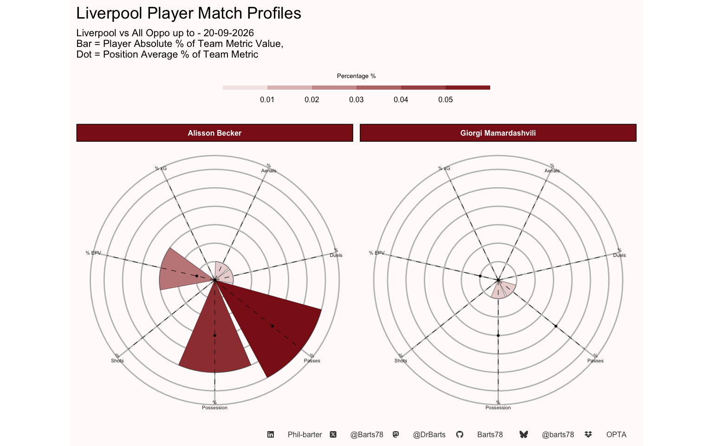
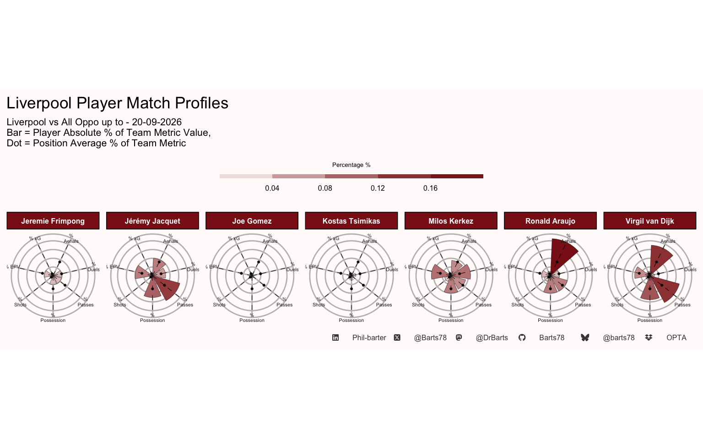
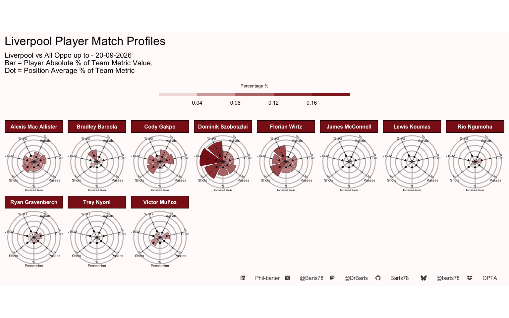
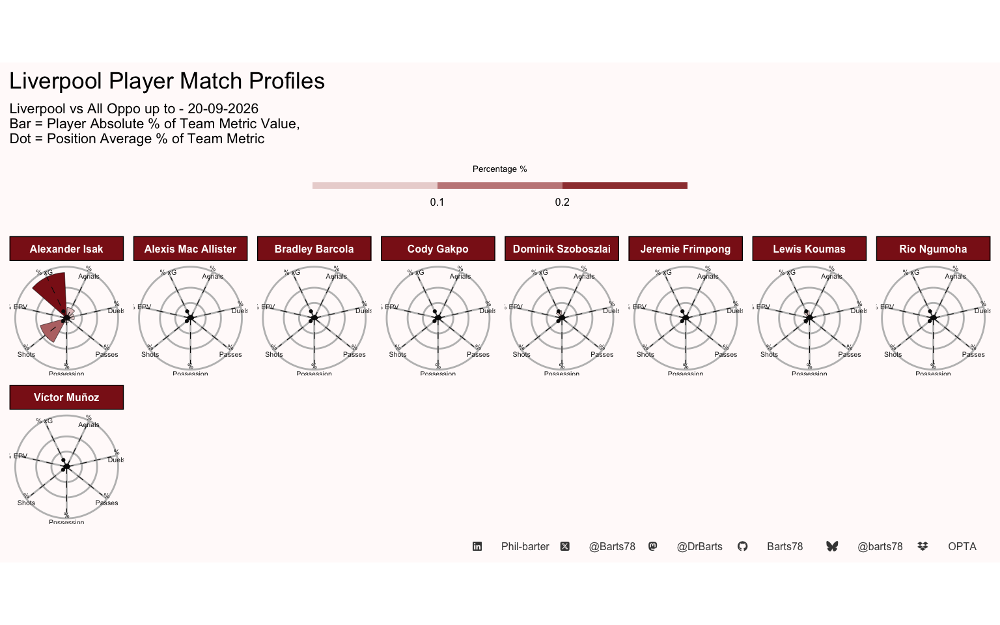

| Liverpool Player Season Possession Totals | |||||||||||||||||||||
| Liverpool vs All Oppo up to - 20-09-2026 | |||||||||||||||||||||
| Mins | % of Team Possession |
Expected Metrics
|
Passes
|
receiving
|
|||||||||||||||||
|---|---|---|---|---|---|---|---|---|---|---|---|---|---|---|---|---|---|---|---|---|---|
| xA | xT | Attempted Passes | Successful Passes | Pass Success % | Assists | BCs | Key Passes | Long Ps | Final 3rd P | Prog Ps | PK Box P | Pass Received | PPs Received | KPs Recieved | Recieveing Suc | EPV Recieved | EPV Created | % of Team EPV | |||
| Keeper | |||||||||||||||||||||
| Alisson Becker | 586 | 5% | 0.00 | 0.32 | 191 | 151 | 79% | 0 | 0 | 0 | 73 | 0 | 6 | 0 | 142 | 0 | 0 | 85% | 2.37 | 0.56 | 3% |
| Giorgi Mamardashvili | 99 | 1% | 0.00 | 0.04 | 37 | 24 | 65% | 0 | 0 | 1 | 17 | 0 | 0 | 0 | 29 | 0 | 0 | 79% | 0.26 | 0.07 | 0% |
| Average | — | 0.0 | 0.0 | 0.2 | 114.0 | 87.5 | 0.7 | 0.0 | 0.0 | 0.5 | 45.0 | 0.0 | 3.0 | 0.0 | 85.5 | 0.0 | 0.0 | 0.8 | 1.3 | 0.3 | 0.0 |
| Total | — | 0 | 0 | 0 | 228 | 175 | 1 | 0 | 0 | 1 | 90 | 0 | 6 | 0 | 171 | 0 | 0 | 2 | 3 | 1 | 0 |
| Defender | |||||||||||||||||||||
| Jeremie Frimpong | 297 | 4% | 0.00 | 0.55 | 124 | 107 | 86% | 0 | 0 | 6 | 7 | 31 | 16 | 2 | 162 | 10 | 0 | 77% | 1.09 | 0.66 | 4% |
| Joe Gomez | 50 | 1% | 0.00 | 0.05 | 32 | 28 | 88% | 0 | 0 | 0 | 8 | 0 | 1 | 0 | 31 | 0 | 0 | 81% | 0.20 | 0.08 | 0% |
| Jérémy Jacquet | 586 | 10% | 0.00 | 0.87 | 421 | 383 | 91% | 0 | 0 | 3 | 46 | 18 | 34 | 3 | 392 | 7 | 0 | 83% | 1.83 | 1.30 | 8% |
| Kostas Tsimikas | 80 | 2% | 0.00 | 0.08 | 49 | 38 | 78% | 0 | 0 | 0 | 2 | 12 | 5 | 0 | 55 | 1 | 0 | 82% | 0.18 | 0.16 | 1% |
| Milos Kerkez | 605 | 8% | 0.01 | 1.16 | 231 | 188 | 81% | 0 | 0 | 3 | 25 | 62 | 18 | 4 | 257 | 10 | 3 | 77% | 1.30 | 1.44 | 9% |
| Ronald Araujo | 511 | 8% | 0.08 | 0.44 | 266 | 224 | 84% | 1 | 0 | 1 | 32 | 34 | 21 | 3 | 266 | 5 | 1 | 77% | 1.30 | 0.73 | 4% |
| Virgil van Dijk | 586 | 11% | 0.04 | 0.54 | 466 | 418 | 90% | 0 | 0 | 1 | 60 | 13 | 38 | 2 | 408 | 7 | 1 | 80% | 1.94 | 1.16 | 7% |
| Average | — | 0.1 | 0.0 | 0.5 | 227.0 | 198.0 | 0.9 | 0.1 | 0.0 | 2.0 | 25.7 | 24.3 | 19.0 | 2.0 | 224.4 | 5.7 | 0.7 | 0.8 | 1.1 | 0.8 | 0.0 |
| Total | — | 0 | 0 | 4 | 1,589 | 1,386 | 6 | 1 | 0 | 14 | 180 | 170 | 133 | 14 | 1,571 | 40 | 5 | 6 | 8 | 6 | 0 |
| Midfielder | |||||||||||||||||||||
| Alexis Mac Allister | 465 | 7% | 0.09 | 0.75 | 240 | 208 | 87% | 1 | 0 | 7 | 23 | 56 | 33 | 2 | 227 | 32 | 5 | 84% | 0.85 | 1.31 | 8% |
| Bradley Barcola | 238 | 2% | 0.15 | 0.21 | 56 | 45 | 80% | 0 | 4 | 2 | 2 | 29 | 9 | 3 | 75 | 9 | 4 | 88% | 0.49 | 0.30 | 2% |
| Cody Gakpo | 467 | 5% | 0.11 | 1.16 | 143 | 116 | 81% | 3 | 0 | 13 | 4 | 76 | 27 | 11 | 195 | 37 | 7 | 90% | 1.51 | 1.47 | 9% |
| Dominik Szoboszlai | 572 | 10% | 0.07 | 2.57 | 346 | 303 | 88% | 0 | 2 | 16 | 28 | 83 | 32 | 0 | 349 | 33 | 11 | 84% | 1.37 | 2.90 | 17% |
| Florian Wirtz | 520 | 8% | 0.70 | 1.24 | 271 | 222 | 82% | 1 | 0 | 12 | 12 | 113 | 30 | 4 | 269 | 67 | 7 | 91% | 1.45 | 1.74 | 10% |
| James McConnell | 66 | 1% | 0.00 | 0.05 | 13 | 10 | 77% | 0 | 0 | 0 | 0 | 4 | 1 | 1 | 20 | 1 | 0 | 85% | 0.07 | 0.06 | 0% |
| Lewis Koumas | 27 | 0% | 0.00 | 0.04 | 3 | 2 | 67% | 0 | 0 | 0 | 1 | 2 | 0 | 1 | 21 | 10 | 4 | 95% | 0.34 | 0.02 | 0% |
| Rio Ngumoha | 226 | 2% | 0.04 | 0.29 | 50 | 39 | 78% | 0 | 0 | 1 | 1 | 36 | 10 | 1 | 79 | 5 | 2 | 94% | 0.47 | 0.37 | 2% |
| Ryan Gravenberch | 271 | 4% | 0.01 | 0.35 | 142 | 123 | 87% | 0 | 0 | 4 | 11 | 31 | 12 | 0 | 144 | 22 | 1 | 86% | 0.69 | 0.53 | 3% |
| Trey Nyoni | 121 | 2% | 0.00 | 0.21 | 75 | 69 | 92% | 0 | 0 | 0 | 5 | 8 | 11 | 0 | 62 | 1 | 0 | 85% | 0.16 | 0.29 | 2% |
| Víctor Muñoz | 286 | 3% | 0.05 | 0.54 | 75 | 62 | 83% | 0 | 1 | 2 | 2 | 43 | 7 | 2 | 106 | 9 | 5 | 87% | 0.61 | 0.66 | 4% |
| Average | — | 0.0 | 0.1 | 0.7 | 128.5 | 109.0 | 0.8 | 0.5 | 0.6 | 5.2 | 8.1 | 43.7 | 15.6 | 2.3 | 140.6 | 20.5 | 4.2 | 0.9 | 0.7 | 0.9 | 0.1 |
| Total | — | 0 | 1 | 7 | 1,414 | 1,199 | 9 | 5 | 7 | 57 | 89 | 481 | 172 | 25 | 1,547 | 226 | 46 | 10 | 8 | 10 | 1 |
| Forward | |||||||||||||||||||||
| Alexander Isak | 541 | 3% | 0.87 | 0.33 | 68 | 52 | 76% | 0 | 5 | 5 | 3 | 41 | 2 | 3 | 106 | 50 | 9 | 91% | 1.67 | 0.37 | 2% |
| Alexis Mac Allister | 37 | 0% | 0.00 | 0.03 | 12 | 11 | 92% | 0 | 0 | 0 | 0 | 4 | 0 | 0 | 227 | 32 | 5 | 84% | 0.85 | 0.04 | 0% |
| Bradley Barcola | 23 | 0% | 0.00 | 0.00 | 7 | 4 | 57% | 0 | 0 | 0 | 0 | 5 | 1 | 1 | 75 | 9 | 4 | 88% | 0.49 | 0.01 | 0% |
| Cody Gakpo | 35 | 0% | 0.01 | 0.03 | 9 | 8 | 89% | 0 | 0 | 0 | 0 | 4 | 4 | 1 | 195 | 37 | 7 | 90% | 1.51 | 0.06 | 0% |
| Dominik Szoboszlai | 33 | 0% | 0.00 | 0.09 | 11 | 9 | 82% | 0 | 1 | 0 | 0 | 4 | 0 | 0 | 349 | 33 | 11 | 84% | 1.37 | 0.10 | 1% |
| Jeremie Frimpong | 36 | 0% | 0.00 | 0.01 | 5 | 3 | 60% | 0 | 0 | 0 | 0 | 3 | 0 | 1 | 162 | 10 | 0 | 77% | 1.09 | 0.01 | 0% |
| Lewis Koumas | 112 | 1% | 0.12 | 0.10 | 10 | 6 | 60% | 0 | 1 | 0 | 0 | 8 | 0 | 2 | 21 | 10 | 4 | 95% | 0.34 | 0.12 | 1% |
| Rio Ngumoha | 23 | 0% | 0.22 | 0.02 | 4 | 4 | 100% | 0 | 1 | 0 | 0 | 3 | 1 | 0 | 79 | 5 | 2 | 94% | 0.47 | 0.02 | 0% |
| Víctor Muñoz | 36 | 0% | 0.00 | 0.16 | 5 | 3 | 60% | 0 | 0 | 0 | 0 | 3 | 0 | 0 | 106 | 9 | 5 | 87% | 0.61 | 0.11 | 1% |
| Average | — | 0.0 | 0.1 | 0.1 | 14.6 | 11.1 | 0.8 | 0.0 | 0.9 | 0.6 | 0.3 | 8.3 | 0.9 | 0.9 | 146.7 | 21.7 | 5.2 | 0.9 | 0.9 | 0.1 | 0.0 |
| Total | — | 0 | 1 | 1 | 131 | 100 | 7 | 0 | 8 | 5 | 3 | 75 | 8 | 8 | 1,320 | 195 | 47 | 8 | 8 | 1 | 0 |
| Team Average | — | 0.0 | 0.1 | 0.4 | 115.9 | 98.6 | 0.8 | 0.2 | 0.5 | 2.7 | 12.5 | 25.0 | 11.0 | 1.6 | 158.9 | 15.9 | 3.4 | 0.9 | 0.9 | 0.6 | 0.0 |
| Team Total | — | 1 | 3 | 12 | 3,362 | 2,860 | 23 | 6 | 15 | 77 | 362 | 726 | 319 | 47 | 4,609 | 461 | 98 | 25 | 27 | 17 | 1 |
| . Phil-barter . . @Barts78 . . @DrBarts . . Barts78 . . @barts78 . . OPTA . | |||||||||||||||||||||
| Liverpool Player Season Touches Totals | |||||||||||||||
| Liverpool vs All Oppo up to - 20-09-2026 | |||||||||||||||
| Mins |
Touches (T) Breakdown
|
% Touches Thirds Breakdown
|
Carries Breakdown
|
||||||||||||
|---|---|---|---|---|---|---|---|---|---|---|---|---|---|---|---|
| Touches | Def 3rd | Mid 3rd | Final 3rd | PK Box | Total / Min | Def 3rd % TT | Mid Third % TT | Final 3rd % TT | PK Box % TT | Carries | % Carries Prog | % Carries F 3rd | % Carries D Prog | ||
| Keeper | |||||||||||||||
| Alisson Becker | 586 | 257 | 244 | 13 | 0 | 0 | 0.44 | 95% | 5% | 0% | 0% | 182 | 0% | 0% | 0% |
| Giorgi Mamardashvili | 99 | 50 | 50 | 0 | 0 | 0 | 0.51 | 100% | 0% | 0% | 0% | 30 | 0% | 0% | 0% |
| Pos Average | — | 153.5 | 147.0 | 6.5 | 0.0 | 0.0 | 0.5 | 1.0 | 0.0 | 0.0 | 0.0 | 106.0 | 0.0 | 0.0 | 0.0 |
| Pos Total | — | 307 | 294 | 13 | 0 | 0 | 1 | 2 | 0 | 0 | 0 | 212 | 0 | 0 | 0 |
| Defender | |||||||||||||||
| Jeremie Frimpong | 297 | 208 | 48 | 100 | 60 | 8 | 0.70 | 23% | 48% | 29% | 4% | 106 | 19% | 23% | 18% |
| Joe Gomez | 50 | 44 | 27 | 14 | 3 | 0 | 0.88 | 61% | 32% | 7% | 0% | 19 | 0% | 5% | 0% |
| Jérémy Jacquet | 586 | 503 | 175 | 309 | 19 | 3 | 0.86 | 35% | 61% | 4% | 1% | 321 | 6% | 3% | 4% |
| Kostas Tsimikas | 80 | 84 | 15 | 43 | 26 | 1 | 1.05 | 18% | 51% | 31% | 1% | 36 | 11% | 28% | 16% |
| Milos Kerkez | 605 | 392 | 90 | 184 | 118 | 4 | 0.65 | 23% | 47% | 30% | 1% | 167 | 25% | 32% | 24% |
| Ronald Araujo | 511 | 379 | 122 | 200 | 57 | 9 | 0.74 | 32% | 53% | 15% | 2% | 196 | 13% | 15% | 14% |
| Virgil van Dijk | 586 | 531 | 183 | 332 | 16 | 4 | 0.91 | 34% | 63% | 3% | 1% | 333 | 7% | 2% | 5% |
| Pos Average | — | 305.9 | 94.3 | 168.9 | 42.7 | 4.1 | 0.8 | 0.3 | 0.5 | 0.2 | 0.0 | 168.3 | 0.1 | 0.2 | 0.1 |
| Pos Total | — | 2,141 | 660 | 1,182 | 299 | 29 | 6 | 2 | 4 | 1 | 0 | 1,178 | 1 | 1 | 1 |
| Midfielder | |||||||||||||||
| Alexis Mac Allister | 465 | 332 | 56 | 187 | 89 | 9 | 0.71 | 17% | 56% | 27% | 3% | 154 | 12% | 22% | 8% |
| Bradley Barcola | 238 | 96 | 10 | 34 | 52 | 10 | 0.40 | 10% | 35% | 54% | 10% | 36 | 17% | 50% | 13% |
| Cody Gakpo | 467 | 264 | 16 | 123 | 125 | 26 | 0.57 | 6% | 47% | 47% | 10% | 82 | 28% | 68% | 27% |
| Dominik Szoboszlai | 572 | 509 | 81 | 265 | 163 | 4 | 0.89 | 16% | 52% | 32% | 1% | 258 | 8% | 27% | 7% |
| Florian Wirtz | 520 | 383 | 29 | 177 | 177 | 24 | 0.74 | 8% | 46% | 46% | 6% | 160 | 16% | 50% | 17% |
| James McConnell | 66 | 27 | 3 | 12 | 12 | 1 | 0.41 | 11% | 44% | 44% | 4% | 8 | 25% | 50% | 17% |
| Lewis Koumas | 27 | 5 | 0 | 1 | 4 | 2 | 0.19 | 0% | 20% | 80% | 40% | 3 | 0% | 67% | 0% |
| Rio Ngumoha | 226 | 99 | 3 | 23 | 73 | 9 | 0.44 | 3% | 23% | 74% | 9% | 30 | 33% | 87% | 37% |
| Ryan Gravenberch | 271 | 208 | 33 | 129 | 46 | 0 | 0.77 | 16% | 62% | 22% | 0% | 101 | 9% | 20% | 9% |
| Trey Nyoni | 121 | 94 | 30 | 54 | 10 | 0 | 0.78 | 32% | 57% | 11% | 0% | 55 | 9% | 13% | 11% |
| Víctor Muñoz | 286 | 153 | 10 | 56 | 87 | 14 | 0.53 | 7% | 37% | 57% | 9% | 53 | 21% | 60% | 18% |
| Pos Average | — | 197.3 | 24.6 | 96.5 | 76.2 | 9.0 | 0.6 | 0.1 | 0.4 | 0.4 | 0.1 | 85.5 | 0.2 | 0.5 | 0.1 |
| Pos Total | — | 2,170 | 271 | 1,061 | 838 | 99 | 6 | 1 | 5 | 5 | 1 | 940 | 2 | 5 | 2 |
| Forward | |||||||||||||||
| Alexander Isak | 541 | 151 | 4 | 42 | 105 | 34 | 0.28 | 3% | 28% | 70% | 23% | 45 | 13% | 71% | 10% |
| Alexis Mac Allister | 37 | 18 | 2 | 11 | 5 | 0 | 0.49 | 11% | 61% | 28% | 0% | 9 | 0% | 44% | 0% |
| Bradley Barcola | 23 | 8 | 1 | 2 | 5 | 1 | 0.35 | 12% | 25% | 62% | 12% | 2 | 0% | 0% | 0% |
| Cody Gakpo | 35 | 12 | 0 | 5 | 7 | 2 | 0.34 | 0% | 42% | 58% | 17% | 7 | 29% | 57% | 9% |
| Dominik Szoboszlai | 33 | 22 | 2 | 10 | 10 | 2 | 0.67 | 9% | 45% | 45% | 9% | 9 | 0% | 22% | 0% |
| Jeremie Frimpong | 36 | 12 | 1 | 6 | 5 | 1 | 0.33 | 8% | 50% | 42% | 8% | 2 | 0% | 100% | 0% |
| Lewis Koumas | 112 | 39 | 4 | 13 | 22 | 6 | 0.35 | 10% | 33% | 56% | 15% | 3 | 0% | 133% | 0% |
| Rio Ngumoha | 23 | 11 | 1 | 2 | 8 | 1 | 0.48 | 9% | 18% | 73% | 9% | 3 | 0% | 67% | 0% |
| Víctor Muñoz | 36 | 13 | 2 | 4 | 7 | 2 | 0.36 | 15% | 31% | 54% | 15% | 2 | 50% | 100% | 78% |
| Pos Average | — | 31.8 | 1.9 | 10.6 | 19.3 | 5.4 | 0.4 | 0.1 | 0.4 | 0.5 | 0.1 | 9.1 | 0.1 | 0.7 | 0.1 |
| Pos Total | — | 286 | 17 | 95 | 174 | 49 | 4 | 1 | 3 | 5 | 1 | 82 | 1 | 6 | 1 |
| Team Average | — | 169.1 | 42.8 | 81.1 | 45.2 | 6.1 | 0.6 | 0.2 | 0.4 | 0.4 | 0.1 | 83.2 | 0.1 | 0.4 | 0.1 |
| Team Total | — | 4,904 | 1,242 | 2,351 | 1,311 | 177 | 17 | 6 | 12 | 11 | 2 | 2,412 | 4 | 12 | 3 |
| . Phil-barter . . @Barts78 . . @DrBarts . . Barts78 . . @barts78 . . OPTA . | |||||||||||||||
| Liverpool Player Season Shooting Totals | |||||||||||||
| Liverpool vs All Oppo up to - 20-09-2026 | |||||||||||||
| Mins | Total Shots | SoT | 6 yard box | PK Box Shot | Out Box Shots | Blocked Shot | Goals | xG | xGOT | xG/Shot | Shot Accuracy | Shot Quality | |
|---|---|---|---|---|---|---|---|---|---|---|---|---|---|
| Keeper | |||||||||||||
| Alisson Becker | 586 | 0 | 0 | 0 | 0 | 0 | 0 | 0 | 0.00 | 0.00 | 0.00 | 0% | 0% |
| Giorgi Mamardashvili | 99 | 0 | 0 | 0 | 0 | 0 | 0 | 0 | 0.00 | 0.00 | 0.00 | 0% | 0% |
| Pos Average | — | 0.0 | 0.0 | 0.0 | 0.0 | 0.0 | 0.0 | 0.0 | 0.0 | 0.0 | 0.0 | 0.0 | 0.0 |
| Pos Total | — | 0 | 0 | 0 | 0 | 0 | 0 | 0 | 0 | 0 | 0 | 0 | 0 |
| Defender | |||||||||||||
| Jeremie Frimpong | 297 | 1 | 0 | 0 | 0 | 1 | 1 | 0 | 0.01 | 0.00 | 0.01 | 0% | −100% |
| Joe Gomez | 50 | 0 | 0 | 0 | 0 | 0 | 0 | 0 | 0.00 | 0.00 | 0.00 | 0% | 0% |
| Jérémy Jacquet | 586 | 0 | 0 | 0 | 0 | 0 | 0 | 0 | 0.00 | 0.00 | 0.00 | 0% | 0% |
| Kostas Tsimikas | 80 | 1 | 1 | 0 | 0 | 1 | 0 | 0 | 0.04 | 0.54 | 0.04 | 100% | 1,250% |
| Milos Kerkez | 605 | 3 | 1 | 0 | 0 | 3 | 1 | 0 | 0.10 | 0.05 | 0.03 | 33% | −50% |
| Ronald Araujo | 511 | 3 | 0 | 0 | 3 | 0 | 0 | 0 | 0.22 | 0.00 | 0.07 | 0% | −100% |
| Virgil van Dijk | 586 | 2 | 1 | 0 | 2 | 0 | 1 | 0 | 0.21 | 0.16 | 0.10 | 50% | −24% |
| Pos Average | — | 1.4 | 0.4 | 0.0 | 0.7 | 0.7 | 0.4 | 0.0 | 0.1 | 0.1 | 0.0 | 0.3 | 1.4 |
| Pos Total | — | 10 | 3 | 0 | 5 | 5 | 3 | 0 | 1 | 1 | 0 | 2 | 10 |
| Midfielder | |||||||||||||
| Alexis Mac Allister | 465 | 9 | 3 | 1 | 3 | 6 | 3 | 2 | 0.54 | 0.82 | 0.06 | 33% | 52% |
| Bradley Barcola | 238 | 5 | 3 | 0 | 5 | 0 | 0 | 0 | 0.96 | 0.47 | 0.19 | 60% | −51% |
| Cody Gakpo | 467 | 10 | 2 | 0 | 5 | 5 | 6 | 2 | 0.53 | 1.08 | 0.05 | 20% | 104% |
| Dominik Szoboszlai | 572 | 14 | 6 | 0 | 2 | 12 | 4 | 2 | 1.65 | 2.89 | 0.12 | 43% | 75% |
| Florian Wirtz | 520 | 12 | 3 | 0 | 10 | 2 | 7 | 0 | 1.36 | 0.94 | 0.11 | 25% | −31% |
| James McConnell | 66 | 0 | 0 | 0 | 0 | 0 | 0 | 0 | 0.00 | 0.00 | 0.00 | 0% | 0% |
| Lewis Koumas | 27 | 1 | 0 | 0 | 1 | 0 | 1 | 0 | 0.04 | 0.00 | 0.04 | 0% | −100% |
| Rio Ngumoha | 226 | 3 | 0 | 0 | 3 | 0 | 3 | 0 | 0.16 | 0.00 | 0.05 | 0% | −100% |
| Ryan Gravenberch | 271 | 3 | 0 | 0 | 0 | 3 | 3 | 0 | 0.09 | 0.00 | 0.03 | 0% | −100% |
| Trey Nyoni | 121 | 1 | 0 | 0 | 0 | 1 | 1 | 0 | 0.02 | 0.00 | 0.02 | 0% | −100% |
| Víctor Muñoz | 286 | 7 | 2 | 1 | 6 | 1 | 3 | 1 | 0.41 | 0.73 | 0.06 | 29% | 78% |
| Pos Average | — | 5.9 | 1.7 | 0.2 | 3.2 | 2.7 | 2.8 | 0.6 | 0.5 | 0.6 | 0.1 | 0.2 | −0.2 |
| Pos Total | — | 65 | 19 | 2 | 35 | 30 | 31 | 7 | 6 | 7 | 1 | 2 | −2 |
| Forward | |||||||||||||
| Alexander Isak | 541 | 18 | 7 | 4 | 17 | 1 | 5 | 4 | 3.28 | 3.31 | 0.18 | 39% | 1% |
| Alexis Mac Allister | 37 | 0 | 0 | 0 | 0 | 0 | 0 | 0 | 0.00 | 0.00 | 0.00 | 0% | 0% |
| Bradley Barcola | 23 | 0 | 0 | 0 | 0 | 0 | 0 | 0 | 0.00 | 0.00 | 0.00 | 0% | 0% |
| Cody Gakpo | 35 | 1 | 0 | 0 | 1 | 0 | 1 | 0 | 0.05 | 0.00 | 0.05 | 0% | −100% |
| Dominik Szoboszlai | 33 | 2 | 2 | 0 | 1 | 1 | 0 | 1 | 0.59 | 1.01 | 0.30 | 100% | 71% |
| Jeremie Frimpong | 36 | 0 | 0 | 0 | 0 | 0 | 0 | 0 | 0.00 | 0.00 | 0.00 | 0% | 0% |
| Lewis Koumas | 112 | 4 | 2 | 0 | 2 | 2 | 2 | 0 | 0.59 | 0.33 | 0.15 | 50% | −44% |
| Rio Ngumoha | 23 | 1 | 0 | 0 | 1 | 0 | 0 | 0 | 0.11 | 0.00 | 0.11 | 0% | −100% |
| Víctor Muñoz | 36 | 1 | 1 | 0 | 1 | 0 | 0 | 0 | 0.13 | 0.38 | 0.13 | 100% | 192% |
| Pos Average | — | 3.0 | 1.3 | 0.4 | 2.6 | 0.4 | 0.9 | 0.6 | 0.5 | 0.6 | 0.1 | 0.3 | 0.0 |
| Pos Total | — | 27 | 12 | 4 | 23 | 4 | 8 | 5 | 5 | 5 | 1 | 3 | 0 |
| Team Average | — | 3.5 | 1.2 | 0.2 | 2.2 | 1.3 | 1.4 | 0.4 | 0.4 | 0.4 | 0.1 | 0.2 | 0.3 |
| Team Total | — | 102 | 34 | 6 | 63 | 39 | 42 | 12 | 11 | 13 | 2 | 7 | 8 |
| . Phil-barter . . @Barts78 . . @DrBarts . . Barts78 . . @barts78 . . OPTA . | |||||||||||||
| Liverpool Player Season Defensive Totals | ||||||||||||||||||||||
| Liverpool vs All Oppo up to - 20-09-2026 | ||||||||||||||||||||||
| Mins |
Duels Breakdown
|
Tackles Total | Tackles Won | Tackles Lost | Interceptions Total | Recoverys Total | Clearances Total | Fouls Total | Fouls Conceeded | Fouls Received | Offside Won | Offside Lost |
Defensive Threat
|
Possession Control | ||||||||
|---|---|---|---|---|---|---|---|---|---|---|---|---|---|---|---|---|---|---|---|---|---|---|
| Aerials Total | Aerials Won | Aerial Success % | Duels Total | Duels Won | Duel Success | EPV Faced | EPV Won | EPV Lost | ||||||||||||||
| Keeper | ||||||||||||||||||||||
| Alisson Becker | 586 | 1 | 1 | 100% | 3 | 2 | 67% | 0 | 0 | 0 | 0 | 10 | 7 | 1 | 0 | 1 | 0 | 1 | 0.04 | 100% | 0% | -30 |
| Giorgi Mamardashvili | 99 | 0 | 0 | 0% | 2 | 2 | 100% | 0 | 0 | 0 | 0 | 2 | 0 | 1 | 1 | 0 | 0 | 0 | 0.00 | 0% | 0% | -11 |
| Pos Average | — | 0.5 | 0.5 | 0.5 | 2.5 | 2.0 | 0.8 | 0.0 | 0.0 | 0.0 | 0.0 | 6.0 | 3.5 | 1.0 | 0.5 | 0.5 | 0.0 | 0.5 | 0.0 | 0.5 | 0.0 | −20.5 |
| Pos Total | — | 1 | 1 | 1 | 5 | 4 | 2 | 0 | 0 | 0 | 0 | 12 | 7 | 2 | 1 | 1 | 0 | 1 | 0 | 1 | 0 | −41 |
| Defender | ||||||||||||||||||||||
| Jeremie Frimpong | 297 | 1 | 1 | 100% | 22 | 8 | 36% | 12 | 9 | 3 | 3 | 11 | 10 | 6 | 1 | 5 | 2 | 0 | 0.10 | 91% | 9% | -21 |
| Joe Gomez | 50 | 1 | 0 | 0% | 1 | 0 | 0% | 1 | 0 | 1 | 1 | 1 | 4 | 0 | 0 | 0 | 0 | 0 | 0.03 | 100% | 0% | -6 |
| Jérémy Jacquet | 586 | 14 | 10 | 71% | 31 | 17 | 55% | 15 | 14 | 1 | 11 | 29 | 18 | 12 | 5 | 7 | 9 | 3 | 0.67 | 28% | 72% | 10 |
| Kostas Tsimikas | 80 | 1 | 0 | 0% | 10 | 2 | 20% | 1 | 1 | 0 | 3 | 3 | 2 | 4 | 0 | 4 | 0 | 0 | 0.02 | 63% | 37% | -15 |
| Milos Kerkez | 605 | 11 | 5 | 45% | 47 | 19 | 40% | 17 | 14 | 3 | 5 | 15 | 25 | 19 | 7 | 12 | 2 | 1 | 0.17 | 85% | 15% | -47 |
| Ronald Araujo | 511 | 29 | 21 | 72% | 18 | 6 | 33% | 6 | 5 | 1 | 3 | 21 | 23 | 3 | 0 | 3 | 2 | 1 | 0.32 | 100% | 0% | -27 |
| Virgil van Dijk | 586 | 24 | 17 | 71% | 8 | 4 | 50% | 6 | 5 | 1 | 7 | 22 | 42 | 2 | 0 | 2 | 3 | 0 | 0.29 | 98% | 2% | -8 |
| Pos Average | — | 11.6 | 7.7 | 0.5 | 19.6 | 8.0 | 0.3 | 8.3 | 6.9 | 1.4 | 4.7 | 14.6 | 17.7 | 6.6 | 1.9 | 4.7 | 2.6 | 0.7 | 0.2 | 0.8 | 0.2 | −16.3 |
| Pos Total | — | 81 | 54 | 4 | 137 | 56 | 2 | 58 | 48 | 10 | 33 | 102 | 124 | 46 | 13 | 33 | 18 | 5 | 2 | 6 | 1 | −114 |
| Midfielder | ||||||||||||||||||||||
| Alexis Mac Allister | 465 | 12 | 4 | 33% | 44 | 19 | 43% | 16 | 12 | 4 | 3 | 23 | 12 | 17 | 7 | 10 | 0 | 0 | 0.24 | 82% | 18% | -30 |
| Bradley Barcola | 238 | 1 | 1 | 100% | 16 | 4 | 25% | 7 | 5 | 2 | 0 | 7 | 0 | 1 | 0 | 1 | 0 | 1 | 0.01 | 67% | 33% | -17 |
| Cody Gakpo | 467 | 15 | 5 | 33% | 53 | 23 | 43% | 14 | 8 | 6 | 9 | 17 | 2 | 16 | 9 | 7 | 0 | 1 | 0.15 | 81% | 19% | -56 |
| Dominik Szoboszlai | 572 | 13 | 3 | 23% | 41 | 14 | 34% | 12 | 8 | 4 | 5 | 27 | 6 | 14 | 3 | 11 | 0 | 1 | 0.36 | 88% | 12% | -73 |
| Florian Wirtz | 520 | 7 | 5 | 71% | 42 | 15 | 36% | 12 | 10 | 2 | 1 | 33 | 3 | 12 | 4 | 8 | 0 | 4 | 0.31 | 29% | 71% | -61 |
| James McConnell | 66 | 4 | 0 | 0% | 10 | 4 | 40% | 2 | 1 | 1 | 0 | 3 | 0 | 6 | 3 | 3 | 0 | 0 | 0.00 | 0% | 100% | -8 |
| Lewis Koumas | 27 | 1 | 0 | 0% | 1 | 1 | 100% | 0 | 0 | 0 | 0 | 1 | 0 | 0 | 0 | 0 | 0 | 0 | 0.00 | 0% | 0% | -2 |
| Rio Ngumoha | 226 | 3 | 1 | 33% | 26 | 11 | 42% | 3 | 3 | 0 | 1 | 7 | 0 | 6 | 4 | 2 | 0 | 0 | 0.01 | 78% | 22% | -30 |
| Ryan Gravenberch | 271 | 6 | 5 | 83% | 31 | 13 | 42% | 8 | 7 | 1 | 4 | 15 | 8 | 12 | 7 | 5 | 1 | 1 | 0.10 | 93% | 7% | -13 |
| Trey Nyoni | 121 | 2 | 1 | 50% | 9 | 1 | 11% | 7 | 6 | 1 | 3 | 8 | 5 | 1 | 0 | 1 | 0 | 0 | 0.06 | 49% | 51% | 8 |
| Víctor Muñoz | 286 | 2 | 1 | 50% | 34 | 13 | 38% | 5 | 3 | 2 | 3 | 8 | 2 | 13 | 8 | 5 | 1 | 0 | 0.02 | 48% | 52% | -37 |
| Pos Average | — | 6.0 | 2.4 | 0.4 | 27.9 | 10.7 | 0.4 | 7.8 | 5.7 | 2.1 | 2.6 | 13.5 | 3.5 | 8.9 | 4.1 | 4.8 | 0.2 | 0.7 | 0.1 | 0.6 | 0.4 | −29.0 |
| Pos Total | — | 66 | 26 | 5 | 307 | 118 | 5 | 86 | 63 | 23 | 29 | 149 | 38 | 98 | 45 | 53 | 2 | 8 | 1 | 6 | 4 | −319 |
| Forward | ||||||||||||||||||||||
| Alexander Isak | 541 | 11 | 6 | 55% | 26 | 10 | 38% | 2 | 2 | 0 | 1 | 4 | 1 | 4 | 3 | 1 | 0 | 0 | 0.01 | 83% | 17% | -48 |
| Alexis Mac Allister | 37 | 0 | 0 | 0% | 5 | 3 | 60% | 3 | 2 | 1 | 0 | 1 | 1 | 2 | 2 | 0 | 0 | 0 | 0.00 | 100% | 0% | 0 |
| Bradley Barcola | 23 | 2 | 2 | 100% | 5 | 0 | 0% | 5 | 1 | 4 | 0 | 1 | 0 | 0 | 0 | 0 | 0 | 0 | 0.07 | 0% | 100% | -3 |
| Cody Gakpo | 35 | 0 | 0 | 0% | 1 | 0 | 0% | 0 | 0 | 0 | 0 | 2 | 0 | 0 | 0 | 0 | 0 | 0 | 0.00 | 0% | 0% | -2 |
| Dominik Szoboszlai | 33 | 0 | 0 | 0% | 4 | 1 | 25% | 2 | 1 | 1 | 1 | 2 | 0 | 1 | 0 | 1 | 0 | 0 | 0.01 | 0% | 100% | -3 |
| Jeremie Frimpong | 36 | 1 | 1 | 100% | 4 | 1 | 25% | 0 | 0 | 0 | 0 | 0 | 0 | 2 | 1 | 1 | 0 | 0 | 0.00 | 0% | 100% | -5 |
| Lewis Koumas | 112 | 4 | 1 | 25% | 10 | 4 | 40% | 1 | 1 | 0 | 0 | 0 | 3 | 3 | 3 | 0 | 0 | 0 | 0.04 | 100% | 0% | -20 |
| Rio Ngumoha | 23 | 0 | 0 | 0% | 2 | 1 | 50% | 0 | 0 | 0 | 0 | 0 | 1 | 2 | 1 | 1 | 0 | 0 | 0.02 | 4% | 96% | -3 |
| Víctor Muñoz | 36 | 0 | 0 | 0% | 3 | 2 | 67% | 0 | 0 | 0 | 0 | 3 | 0 | 1 | 1 | 0 | 0 | 1 | 0.00 | 0% | 0% | -3 |
| Pos Average | — | 2.0 | 1.1 | 0.3 | 6.7 | 2.4 | 0.3 | 1.4 | 0.8 | 0.7 | 0.2 | 1.4 | 0.7 | 1.7 | 1.2 | 0.4 | 0.0 | 0.1 | 0.0 | 0.3 | 0.5 | −9.7 |
| Pos Total | — | 18 | 10 | 3 | 60 | 22 | 3 | 13 | 7 | 6 | 2 | 13 | 6 | 15 | 11 | 4 | 0 | 1 | 0 | 3 | 4 | −87 |
| Team Average | — | 5.7 | 3.1 | 0.4 | 17.6 | 6.9 | 0.4 | 5.4 | 4.1 | 1.3 | 2.2 | 9.5 | 6.0 | 5.6 | 2.4 | 3.1 | 0.7 | 0.5 | 0.1 | 0.5 | 0.3 | −19.3 |
| Team Total | — | 166 | 91 | 12 | 509 | 200 | 12 | 157 | 118 | 39 | 64 | 276 | 175 | 161 | 70 | 91 | 20 | 15 | 3 | 16 | 9 | −561 |
| . Phil-barter . . @Barts78 . . @DrBarts . . Barts78 . . @barts78 . . OPTA . | ||||||||||||||||||||||







| Liverpool Player Season Possession P90 | |||||||||||||||||||||
| Liverpool vs All Oppo up to - 20-09-2026 | |||||||||||||||||||||
| Mins | % of Team Possession |
Expected Metrics
|
Passes
|
receiving
|
|||||||||||||||||
|---|---|---|---|---|---|---|---|---|---|---|---|---|---|---|---|---|---|---|---|---|---|
| xA | xT | Attempted Passes | Successful Passes | Pass Success % | Assists | BCs | Key Passes | Long Ps | Final 3rd P | Prog Ps | PK Box P | Pass Received | PPs Received | KPs Recieved | Recieveing Suc | EPV Recieved | EPV Created | % of Team EPV | |||
| Keeper | |||||||||||||||||||||
| Alisson Becker | 586 | 1% | 0.00 | 0.05 | 29.33 | 23.19 | 79% | 0.00 | 0.00 | 0.00 | 11.21 | 0.00 | 0.92 | 0.00 | 21.81 | 0.00 | 0.00 | 85% | 0.36 | 0.09 | 0% |
| Giorgi Mamardashvili | 99 | 1% | 0.00 | 0.04 | 33.64 | 21.82 | 65% | 0.00 | 0.00 | 0.91 | 15.45 | 0.00 | 0.00 | 0.00 | 26.36 | 0.00 | 0.00 | 79% | 0.24 | 0.06 | 0% |
| Average | — | 0.0 | 0.0 | 0.0 | 31.5 | 22.5 | 0.7 | 0.0 | 0.0 | 0.5 | 13.3 | 0.0 | 0.5 | 0.0 | 24.1 | 0.0 | 0.0 | 0.8 | 0.3 | 0.1 | 0.0 |
| Total | — | 0 | 0 | 0 | 63 | 45 | 1 | 0 | 0 | 1 | 27 | 0 | 1 | 0 | 48 | 0 | 0 | 2 | 1 | 0 | 0 |
| Defender | |||||||||||||||||||||
| Jeremie Frimpong | 297 | 1% | 0.00 | 0.17 | 37.58 | 32.42 | 86% | 0.00 | 0.00 | 1.82 | 2.12 | 9.39 | 4.85 | 0.61 | 49.09 | 3.03 | 0.00 | 77% | 0.33 | 0.20 | 1% |
| Joe Gomez | 50 | 2% | 0.00 | 0.09 | 57.60 | 50.40 | 88% | 0.00 | 0.00 | 0.00 | 14.40 | 0.00 | 1.80 | 0.00 | 55.80 | 0.00 | 0.00 | 81% | 0.35 | 0.14 | 0% |
| Jérémy Jacquet | 586 | 2% | 0.00 | 0.13 | 64.66 | 58.82 | 91% | 0.00 | 0.00 | 0.46 | 7.06 | 2.76 | 5.22 | 0.46 | 60.20 | 1.08 | 0.00 | 83% | 0.28 | 0.20 | 1% |
| Kostas Tsimikas | 80 | 2% | 0.00 | 0.09 | 55.12 | 42.75 | 78% | 0.00 | 0.00 | 0.00 | 2.25 | 13.50 | 5.62 | 0.00 | 61.88 | 1.12 | 0.00 | 82% | 0.21 | 0.18 | 1% |
| Milos Kerkez | 605 | 1% | 0.00 | 0.17 | 34.36 | 27.97 | 81% | 0.00 | 0.00 | 0.45 | 3.72 | 9.22 | 2.68 | 0.60 | 38.23 | 1.49 | 0.45 | 77% | 0.19 | 0.21 | 1% |
| Ronald Araujo | 511 | 1% | 0.01 | 0.08 | 46.85 | 39.45 | 84% | 0.18 | 0.00 | 0.18 | 5.64 | 5.99 | 3.70 | 0.53 | 46.85 | 0.88 | 0.18 | 77% | 0.23 | 0.13 | 1% |
| Virgil van Dijk | 586 | 2% | 0.01 | 0.08 | 71.57 | 64.20 | 90% | 0.00 | 0.00 | 0.15 | 9.22 | 2.00 | 5.84 | 0.31 | 62.66 | 1.08 | 0.15 | 80% | 0.30 | 0.18 | 1% |
| Average | — | 0.0 | 0.0 | 0.1 | 52.5 | 45.1 | 0.9 | 0.0 | 0.0 | 0.4 | 6.3 | 6.1 | 4.2 | 0.4 | 53.5 | 1.2 | 0.1 | 0.8 | 0.3 | 0.2 | 0.0 |
| Total | — | 0 | 0 | 1 | 368 | 316 | 6 | 0 | 0 | 3 | 44 | 43 | 30 | 3 | 375 | 9 | 1 | 6 | 2 | 1 | 0 |
| Midfielder | |||||||||||||||||||||
| Alexis Mac Allister | 465 | 1% | 0.02 | 0.15 | 46.45 | 40.26 | 87% | 0.19 | 0.00 | 1.35 | 4.45 | 10.84 | 6.39 | 0.39 | 43.94 | 6.19 | 0.97 | 84% | 0.16 | 0.25 | 2% |
| Bradley Barcola | 238 | 1% | 0.06 | 0.08 | 21.18 | 17.02 | 80% | 0.00 | 1.51 | 0.76 | 0.76 | 10.97 | 3.40 | 1.13 | 28.36 | 3.40 | 1.51 | 88% | 0.19 | 0.11 | 1% |
| Cody Gakpo | 467 | 1% | 0.02 | 0.22 | 27.56 | 22.36 | 81% | 0.58 | 0.00 | 2.51 | 0.77 | 14.65 | 5.20 | 2.12 | 37.58 | 7.13 | 1.35 | 90% | 0.29 | 0.28 | 2% |
| Dominik Szoboszlai | 572 | 2% | 0.01 | 0.40 | 54.44 | 47.67 | 88% | 0.00 | 0.31 | 2.52 | 4.41 | 13.06 | 5.03 | 0.00 | 54.91 | 5.19 | 1.73 | 84% | 0.22 | 0.46 | 3% |
| Florian Wirtz | 520 | 1% | 0.12 | 0.21 | 46.90 | 38.42 | 82% | 0.17 | 0.00 | 2.08 | 2.08 | 19.56 | 5.19 | 0.69 | 46.56 | 11.60 | 1.21 | 91% | 0.25 | 0.30 | 2% |
| James McConnell | 66 | 1% | 0.00 | 0.07 | 17.73 | 13.64 | 77% | 0.00 | 0.00 | 0.00 | 0.00 | 5.45 | 1.36 | 1.36 | 27.27 | 1.36 | 0.00 | 85% | 0.09 | 0.08 | 0% |
| Lewis Koumas | 27 | 0% | 0.00 | 0.13 | 10.00 | 6.67 | 67% | 0.00 | 0.00 | 0.00 | 3.33 | 6.67 | 0.00 | 3.33 | 70.00 | 33.33 | 13.33 | 95% | 1.14 | 0.07 | 0% |
| Rio Ngumoha | 226 | 1% | 0.02 | 0.12 | 19.91 | 15.53 | 78% | 0.00 | 0.00 | 0.40 | 0.40 | 14.34 | 3.98 | 0.40 | 31.46 | 1.99 | 0.80 | 94% | 0.19 | 0.15 | 1% |
| Ryan Gravenberch | 271 | 1% | 0.00 | 0.12 | 47.16 | 40.85 | 87% | 0.00 | 0.00 | 1.33 | 3.65 | 10.30 | 3.99 | 0.00 | 47.82 | 7.31 | 0.33 | 86% | 0.23 | 0.18 | 1% |
| Trey Nyoni | 121 | 1% | 0.00 | 0.16 | 55.79 | 51.32 | 92% | 0.00 | 0.00 | 0.00 | 3.72 | 5.95 | 8.18 | 0.00 | 46.12 | 0.74 | 0.00 | 85% | 0.12 | 0.21 | 1% |
| Víctor Muñoz | 286 | 1% | 0.02 | 0.17 | 23.60 | 19.51 | 83% | 0.00 | 0.31 | 0.63 | 0.63 | 13.53 | 2.20 | 0.63 | 33.36 | 2.83 | 1.57 | 87% | 0.19 | 0.21 | 1% |
| Average | — | 0.0 | 0.0 | 0.2 | 33.7 | 28.5 | 0.8 | 0.1 | 0.2 | 1.1 | 2.2 | 11.4 | 4.1 | 0.9 | 42.5 | 7.4 | 2.1 | 0.9 | 0.3 | 0.2 | 0.0 |
| Total | — | 0 | 0 | 2 | 371 | 313 | 9 | 1 | 2 | 12 | 24 | 125 | 45 | 10 | 467 | 81 | 23 | 10 | 3 | 2 | 0 |
| Forward | |||||||||||||||||||||
| Alexander Isak | 541 | 0% | 0.14 | 0.05 | 11.31 | 8.65 | 76% | 0.00 | 0.83 | 0.83 | 0.50 | 6.82 | 0.33 | 0.50 | 17.63 | 8.32 | 1.50 | 91% | 0.28 | 0.06 | 0% |
| Alexis Mac Allister | 37 | 0% | 0.00 | 0.07 | 29.19 | 26.76 | 92% | 0.00 | 0.00 | 0.00 | 0.00 | 9.73 | 0.00 | 0.00 | 552.16 | 77.84 | 12.16 | 84% | 2.07 | 0.10 | 0% |
| Bradley Barcola | 23 | 0% | 0.00 | 0.00 | 27.39 | 15.65 | 57% | 0.00 | 0.00 | 0.00 | 0.00 | 19.57 | 3.91 | 3.91 | 293.48 | 35.22 | 15.65 | 88% | 1.93 | 0.05 | 0% |
| Cody Gakpo | 35 | 0% | 0.03 | 0.08 | 23.14 | 20.57 | 89% | 0.00 | 0.00 | 0.00 | 0.00 | 10.29 | 10.29 | 2.57 | 501.43 | 95.14 | 18.00 | 90% | 3.88 | 0.16 | 0% |
| Dominik Szoboszlai | 33 | 0% | 0.00 | 0.25 | 30.00 | 24.55 | 82% | 0.00 | 2.73 | 0.00 | 0.00 | 10.91 | 0.00 | 0.00 | 951.82 | 90.00 | 30.00 | 84% | 3.73 | 0.27 | 3% |
| Jeremie Frimpong | 36 | 0% | 0.00 | 0.02 | 12.50 | 7.50 | 60% | 0.00 | 0.00 | 0.00 | 0.00 | 7.50 | 0.00 | 2.50 | 405.00 | 25.00 | 0.00 | 77% | 2.72 | 0.03 | 0% |
| Lewis Koumas | 112 | 1% | 0.10 | 0.08 | 8.04 | 4.82 | 60% | 0.00 | 0.80 | 0.00 | 0.00 | 6.43 | 0.00 | 1.61 | 16.88 | 8.04 | 3.21 | 95% | 0.27 | 0.09 | 1% |
| Rio Ngumoha | 23 | 0% | 0.86 | 0.08 | 15.65 | 15.65 | 100% | 0.00 | 3.91 | 0.00 | 0.00 | 11.74 | 3.91 | 0.00 | 309.13 | 19.57 | 7.83 | 94% | 1.83 | 0.08 | 0% |
| Víctor Muñoz | 36 | 0% | 0.00 | 0.40 | 12.50 | 7.50 | 60% | 0.00 | 0.00 | 0.00 | 0.00 | 7.50 | 0.00 | 0.00 | 265.00 | 22.50 | 12.50 | 87% | 1.53 | 0.26 | 2% |
| Average | — | 0.0 | 0.1 | 0.1 | 18.9 | 14.6 | 0.8 | 0.0 | 0.9 | 0.1 | 0.1 | 10.1 | 2.0 | 1.2 | 368.1 | 42.4 | 11.2 | 0.9 | 2.0 | 0.1 | 0.0 |
| Total | — | 0 | 1 | 1 | 170 | 132 | 7 | 0 | 8 | 1 | 0 | 90 | 18 | 11 | 3,313 | 382 | 101 | 8 | 18 | 1 | 0 |
| Team Average | — | 0.0 | 0.0 | 0.1 | 33.5 | 27.8 | 0.8 | 0.0 | 0.4 | 0.6 | 3.3 | 8.9 | 3.2 | 0.8 | 144.9 | 16.3 | 4.3 | 0.9 | 0.8 | 0.2 | 0.0 |
| Team Total | — | 0 | 1 | 4 | 971 | 806 | 23 | 1 | 10 | 16 | 96 | 259 | 94 | 24 | 4,203 | 471 | 124 | 25 | 24 | 5 | 0 |
| . Phil-barter . . @Barts78 . . @DrBarts . . Barts78 . . @barts78 . . OPTA . | |||||||||||||||||||||
| Liverpool Player Season Touches P90 | |||||||||||||||
| Liverpool vs All Oppo up to - 20-09-2026 | |||||||||||||||
| Mins |
Touches (T) Breakdown
|
% Touches Thirds Breakdown
|
Carries Breakdown
|
||||||||||||
|---|---|---|---|---|---|---|---|---|---|---|---|---|---|---|---|
| Touches | Def 3rd | Mid 3rd | Final 3rd | PK Box | Total / Min | Def 3rd % TT | Mid Third % TT | Final 3rd % TT | PK Box % TT | Carries | % Carries Prog | % Carries F 3rd | % Carries D Prog | ||
| Keeper | |||||||||||||||
| Alisson Becker | 586 | 39.47 | 37.47 | 2.00 | 0.00 | 0.00 | 0.07 | 15% | 1% | 0% | 0% | 27.95 | 0% | 0% | 0% |
| Giorgi Mamardashvili | 99 | 45.45 | 45.45 | 0.00 | 0.00 | 0.00 | 0.46 | 91% | 0% | 0% | 0% | 27.27 | 0% | 0% | 0% |
| Pos Average | — | 42.5 | 41.5 | 1.0 | 0.0 | 0.0 | 0.3 | 0.5 | 0.0 | 0.0 | 0.0 | 27.6 | 0.0 | 0.0 | 0.0 |
| Pos Total | — | 85 | 83 | 2 | 0 | 0 | 1 | 1 | 0 | 0 | 0 | 55 | 0 | 0 | 0 |
| Defender | |||||||||||||||
| Jeremie Frimpong | 297 | 63.03 | 14.55 | 30.30 | 18.18 | 2.42 | 0.21 | 7% | 15% | 9% | 1% | 32.12 | 6% | 7% | 5% |
| Joe Gomez | 50 | 79.20 | 48.60 | 25.20 | 5.40 | 0.00 | 1.58 | 110% | 57% | 12% | 0% | 34.20 | 0% | 9% | 0% |
| Jérémy Jacquet | 586 | 77.25 | 26.88 | 47.46 | 2.92 | 0.46 | 0.13 | 5% | 9% | 1% | 0% | 49.30 | 1% | 1% | 1% |
| Kostas Tsimikas | 80 | 94.50 | 16.88 | 48.38 | 29.25 | 1.12 | 1.18 | 20% | 58% | 35% | 1% | 40.50 | 12% | 31% | 18% |
| Milos Kerkez | 605 | 58.31 | 13.39 | 27.37 | 17.55 | 0.60 | 0.10 | 3% | 7% | 4% | 0% | 24.84 | 4% | 5% | 4% |
| Ronald Araujo | 511 | 66.75 | 21.49 | 35.23 | 10.04 | 1.59 | 0.13 | 6% | 9% | 3% | 0% | 34.52 | 2% | 3% | 2% |
| Virgil van Dijk | 586 | 81.55 | 28.11 | 50.99 | 2.46 | 0.61 | 0.14 | 5% | 10% | 0% | 0% | 51.14 | 1% | 0% | 1% |
| Pos Average | — | 74.4 | 24.3 | 37.8 | 12.3 | 1.0 | 0.5 | 0.2 | 0.2 | 0.1 | 0.0 | 38.1 | 0.0 | 0.1 | 0.0 |
| Pos Total | — | 521 | 170 | 265 | 86 | 7 | 3 | 2 | 2 | 1 | 0 | 267 | 0 | 1 | 0 |
| Midfielder | |||||||||||||||
| Alexis Mac Allister | 465 | 64.26 | 10.84 | 36.19 | 17.23 | 1.74 | 0.14 | 3% | 11% | 5% | 1% | 29.81 | 2% | 4% | 2% |
| Bradley Barcola | 238 | 36.30 | 3.78 | 12.86 | 19.66 | 3.78 | 0.15 | 4% | 13% | 20% | 4% | 13.61 | 6% | 19% | 5% |
| Cody Gakpo | 467 | 50.88 | 3.08 | 23.70 | 24.09 | 5.01 | 0.11 | 1% | 9% | 9% | 2% | 15.80 | 5% | 13% | 5% |
| Dominik Szoboszlai | 572 | 80.09 | 12.74 | 41.70 | 25.65 | 0.63 | 0.14 | 3% | 8% | 5% | 0% | 40.59 | 1% | 4% | 1% |
| Florian Wirtz | 520 | 66.29 | 5.02 | 30.63 | 30.63 | 4.15 | 0.13 | 1% | 8% | 8% | 1% | 27.69 | 3% | 9% | 3% |
| James McConnell | 66 | 36.82 | 4.09 | 16.36 | 16.36 | 1.36 | 0.56 | 15% | 61% | 61% | 5% | 10.91 | 34% | 68% | 23% |
| Lewis Koumas | 27 | 16.67 | 0.00 | 3.33 | 13.33 | 6.67 | 0.62 | 0% | 67% | 267% | 133% | 10.00 | 0% | 222% | 0% |
| Rio Ngumoha | 226 | 39.42 | 1.19 | 9.16 | 29.07 | 3.58 | 0.17 | 1% | 9% | 29% | 4% | 11.95 | 13% | 35% | 15% |
| Ryan Gravenberch | 271 | 69.08 | 10.96 | 42.84 | 15.28 | 0.00 | 0.25 | 5% | 21% | 7% | 0% | 33.54 | 3% | 7% | 3% |
| Trey Nyoni | 121 | 69.92 | 22.31 | 40.17 | 7.44 | 0.00 | 0.58 | 24% | 43% | 8% | 0% | 40.91 | 7% | 9% | 8% |
| Víctor Muñoz | 286 | 48.15 | 3.15 | 17.62 | 27.38 | 4.41 | 0.17 | 2% | 12% | 18% | 3% | 16.68 | 7% | 19% | 6% |
| Pos Average | — | 52.5 | 7.0 | 25.0 | 20.6 | 2.8 | 0.3 | 0.1 | 0.2 | 0.4 | 0.1 | 22.9 | 0.1 | 0.4 | 0.1 |
| Pos Total | — | 578 | 77 | 275 | 226 | 31 | 3 | 1 | 3 | 4 | 2 | 251 | 1 | 4 | 1 |
| Forward | |||||||||||||||
| Alexander Isak | 541 | 25.12 | 0.67 | 6.99 | 17.47 | 5.66 | 0.05 | 0% | 5% | 12% | 4% | 7.49 | 2% | 12% | 2% |
| Alexis Mac Allister | 37 | 43.78 | 4.86 | 26.76 | 12.16 | 0.00 | 1.18 | 27% | 149% | 68% | 0% | 21.89 | 0% | 108% | 0% |
| Bradley Barcola | 23 | 31.30 | 3.91 | 7.83 | 19.57 | 3.91 | 1.36 | 49% | 98% | 245% | 49% | 7.83 | 0% | 0% | 0% |
| Cody Gakpo | 35 | 30.86 | 0.00 | 12.86 | 18.00 | 5.14 | 0.88 | 0% | 107% | 150% | 43% | 18.00 | 73% | 147% | 23% |
| Dominik Szoboszlai | 33 | 60.00 | 5.45 | 27.27 | 27.27 | 5.45 | 1.82 | 25% | 124% | 124% | 25% | 24.55 | 0% | 61% | 0% |
| Jeremie Frimpong | 36 | 30.00 | 2.50 | 15.00 | 12.50 | 2.50 | 0.83 | 21% | 125% | 104% | 21% | 5.00 | 0% | 250% | 0% |
| Lewis Koumas | 112 | 31.34 | 3.21 | 10.45 | 17.68 | 4.82 | 0.28 | 8% | 27% | 45% | 12% | 2.41 | 0% | 107% | 0% |
| Rio Ngumoha | 23 | 43.04 | 3.91 | 7.83 | 31.30 | 3.91 | 1.87 | 36% | 71% | 285% | 36% | 11.74 | 0% | 261% | 0% |
| Víctor Muñoz | 36 | 32.50 | 5.00 | 10.00 | 17.50 | 5.00 | 0.90 | 38% | 77% | 135% | 38% | 5.00 | 125% | 250% | 195% |
| Pos Average | — | 36.4 | 3.3 | 13.9 | 19.3 | 4.0 | 1.0 | 0.2 | 0.9 | 1.3 | 0.3 | 11.5 | 0.2 | 1.3 | 0.2 |
| Pos Total | — | 328 | 30 | 125 | 173 | 36 | 9 | 2 | 8 | 12 | 2 | 104 | 2 | 12 | 2 |
| Team Average | — | 52.1 | 12.4 | 23.0 | 16.7 | 2.6 | 0.6 | 0.2 | 0.4 | 0.6 | 0.1 | 23.4 | 0.1 | 0.6 | 0.1 |
| Team Total | — | 1,511 | 359 | 666 | 485 | 75 | 16 | 5 | 12 | 17 | 4 | 677 | 3 | 17 | 3 |
| . Phil-barter . . @Barts78 . . @DrBarts . . Barts78 . . @barts78 . . OPTA . | |||||||||||||||
| Liverpool Player Season Shooting P90 | |||||||||||||
| Liverpool vs All Oppo up to - 20-09-2026 | |||||||||||||
| Mins | Total Shots | SoT | 6 yard box | PK Box Shot | Out Box Shots | Blocked Shot | Goals | xG | xGOT | xG/Shot | Shot Accuracy | Shot Quality | |
|---|---|---|---|---|---|---|---|---|---|---|---|---|---|
| Keeper | |||||||||||||
| Alisson Becker | 586 | 0.00 | 0.00 | 0.00 | 0.00 | 0.00 | 0.00 | 0.00 | 0.00 | 0.00 | 0.00 | 0% | 0% |
| Giorgi Mamardashvili | 99 | 0.00 | 0.00 | 0.00 | 0.00 | 0.00 | 0.00 | 0.00 | 0.00 | 0.00 | 0.00 | 0% | 0% |
| Pos Average | — | 0.0 | 0.0 | 0.0 | 0.0 | 0.0 | 0.0 | 0.0 | 0.0 | 0.0 | 0.0 | 0.0 | 0.0 |
| Pos Total | — | 0 | 0 | 0 | 0 | 0 | 0 | 0 | 0 | 0 | 0 | 0 | 0 |
| Defender | |||||||||||||
| Jeremie Frimpong | 297 | 0.30 | 0.00 | 0.00 | 0.00 | 0.30 | 0.30 | 0.00 | 0.00 | 0.00 | 0.00 | 0% | −30% |
| Joe Gomez | 50 | 0.00 | 0.00 | 0.00 | 0.00 | 0.00 | 0.00 | 0.00 | 0.00 | 0.00 | 0.00 | 0% | 0% |
| Jérémy Jacquet | 586 | 0.00 | 0.00 | 0.00 | 0.00 | 0.00 | 0.00 | 0.00 | 0.00 | 0.00 | 0.00 | 0% | 0% |
| Kostas Tsimikas | 80 | 1.12 | 1.12 | 0.00 | 0.00 | 1.12 | 0.00 | 0.00 | 0.05 | 0.61 | 0.05 | 112% | 1,406% |
| Milos Kerkez | 605 | 0.45 | 0.15 | 0.00 | 0.00 | 0.45 | 0.15 | 0.00 | 0.01 | 0.01 | 0.00 | 5% | −7% |
| Ronald Araujo | 511 | 0.53 | 0.00 | 0.00 | 0.53 | 0.00 | 0.00 | 0.00 | 0.04 | 0.00 | 0.01 | 0% | −18% |
| Virgil van Dijk | 586 | 0.31 | 0.15 | 0.00 | 0.31 | 0.00 | 0.15 | 0.00 | 0.03 | 0.02 | 0.02 | 8% | −4% |
| Pos Average | — | 0.4 | 0.2 | 0.0 | 0.1 | 0.3 | 0.1 | 0.0 | 0.0 | 0.1 | 0.0 | 0.2 | 1.9 |
| Pos Total | — | 3 | 1 | 0 | 1 | 2 | 1 | 0 | 0 | 1 | 0 | 1 | 13 |
| Midfielder | |||||||||||||
| Alexis Mac Allister | 465 | 1.74 | 0.58 | 0.19 | 0.58 | 1.16 | 0.58 | 0.39 | 0.10 | 0.16 | 0.01 | 6% | 10% |
| Bradley Barcola | 238 | 1.89 | 1.13 | 0.00 | 1.89 | 0.00 | 0.00 | 0.00 | 0.36 | 0.18 | 0.07 | 23% | −19% |
| Cody Gakpo | 467 | 1.93 | 0.39 | 0.00 | 0.96 | 0.96 | 1.16 | 0.39 | 0.10 | 0.21 | 0.01 | 4% | 20% |
| Dominik Szoboszlai | 572 | 2.20 | 0.94 | 0.00 | 0.31 | 1.89 | 0.63 | 0.31 | 0.26 | 0.45 | 0.02 | 7% | 12% |
| Florian Wirtz | 520 | 2.08 | 0.52 | 0.00 | 1.73 | 0.35 | 1.21 | 0.00 | 0.24 | 0.16 | 0.02 | 4% | −5% |
| James McConnell | 66 | 0.00 | 0.00 | 0.00 | 0.00 | 0.00 | 0.00 | 0.00 | 0.00 | 0.00 | 0.00 | 0% | 0% |
| Lewis Koumas | 27 | 3.33 | 0.00 | 0.00 | 3.33 | 0.00 | 3.33 | 0.00 | 0.13 | 0.00 | 0.13 | 0% | −333% |
| Rio Ngumoha | 226 | 1.19 | 0.00 | 0.00 | 1.19 | 0.00 | 1.19 | 0.00 | 0.06 | 0.00 | 0.02 | 0% | −40% |
| Ryan Gravenberch | 271 | 1.00 | 0.00 | 0.00 | 0.00 | 1.00 | 1.00 | 0.00 | 0.03 | 0.00 | 0.01 | 0% | −33% |
| Trey Nyoni | 121 | 0.74 | 0.00 | 0.00 | 0.00 | 0.74 | 0.74 | 0.00 | 0.01 | 0.00 | 0.01 | 0% | −74% |
| Víctor Muñoz | 286 | 2.20 | 0.63 | 0.31 | 1.89 | 0.31 | 0.94 | 0.31 | 0.13 | 0.23 | 0.02 | 9% | 25% |
| Pos Average | — | 1.7 | 0.4 | 0.0 | 1.1 | 0.6 | 1.0 | 0.1 | 0.1 | 0.1 | 0.0 | 0.0 | −0.4 |
| Pos Total | — | 18 | 4 | 0 | 12 | 6 | 11 | 1 | 1 | 1 | 0 | 1 | −4 |
| Forward | |||||||||||||
| Alexander Isak | 541 | 2.99 | 1.16 | 0.67 | 2.83 | 0.17 | 0.83 | 0.67 | 0.55 | 0.55 | 0.03 | 6% | 0% |
| Alexis Mac Allister | 37 | 0.00 | 0.00 | 0.00 | 0.00 | 0.00 | 0.00 | 0.00 | 0.00 | 0.00 | 0.00 | 0% | 0% |
| Bradley Barcola | 23 | 0.00 | 0.00 | 0.00 | 0.00 | 0.00 | 0.00 | 0.00 | 0.00 | 0.00 | 0.00 | 0% | 0% |
| Cody Gakpo | 35 | 2.57 | 0.00 | 0.00 | 2.57 | 0.00 | 2.57 | 0.00 | 0.13 | 0.00 | 0.13 | 0% | −257% |
| Dominik Szoboszlai | 33 | 5.45 | 5.45 | 0.00 | 2.73 | 2.73 | 0.00 | 2.73 | 1.61 | 2.75 | 0.80 | 273% | 194% |
| Jeremie Frimpong | 36 | 0.00 | 0.00 | 0.00 | 0.00 | 0.00 | 0.00 | 0.00 | 0.00 | 0.00 | 0.00 | 0% | 0% |
| Lewis Koumas | 112 | 3.21 | 1.61 | 0.00 | 1.61 | 1.61 | 1.61 | 0.00 | 0.47 | 0.27 | 0.12 | 40% | −35% |
| Rio Ngumoha | 23 | 3.91 | 0.00 | 0.00 | 3.91 | 0.00 | 0.00 | 0.00 | 0.43 | 0.00 | 0.43 | 0% | −391% |
| Víctor Muñoz | 36 | 2.50 | 2.50 | 0.00 | 2.50 | 0.00 | 0.00 | 0.00 | 0.32 | 0.95 | 0.32 | 250% | 481% |
| Pos Average | — | 2.3 | 1.2 | 0.1 | 1.8 | 0.5 | 0.6 | 0.4 | 0.4 | 0.5 | 0.2 | 0.6 | 0.0 |
| Pos Total | — | 21 | 11 | 1 | 16 | 5 | 5 | 3 | 4 | 5 | 2 | 6 | 0 |
| Team Average | — | 1.4 | 0.6 | 0.0 | 1.0 | 0.4 | 0.6 | 0.2 | 0.2 | 0.2 | 0.1 | 0.3 | 0.3 |
| Team Total | — | 42 | 16 | 1 | 29 | 13 | 16 | 5 | 5 | 7 | 2 | 7 | 9 |
| . Phil-barter . . @Barts78 . . @DrBarts . . Barts78 . . @barts78 . . OPTA . | |||||||||||||
| Liverpool Player Season Defensive P90 | ||||||||||||||||||||||
| Liverpool vs All Oppo up to - 20-09-2026 | ||||||||||||||||||||||
| Mins |
Duels Breakdown
|
Tackles Total | Tackles Won | Tackles Lost | Interceptions Total | Recoverys Total | Clearances Total | Fouls Total | Fouls Conceeded | Fouls Received | Offside Won | Offside Lost |
Defensive Threat
|
Possession Control | ||||||||
|---|---|---|---|---|---|---|---|---|---|---|---|---|---|---|---|---|---|---|---|---|---|---|
| Aerials Total | Aerials Won | Aerial Success % | Duels Total | Duels Won | Duel Success | EPV Faced | EPV Won | EPV Lost | ||||||||||||||
| Keeper | ||||||||||||||||||||||
| Alisson Becker | 586 | 0.15 | 0.15 | 100% | 0.46 | 0.31 | 67% | 0.00 | 0.00 | 0.00 | 0.00 | 1.54 | 1.08 | 0.15 | 0.00 | 0.15 | 0.00 | 0.15 | 0.01 | 100% | 0% | -4.61 |
| Giorgi Mamardashvili | 99 | 0.00 | 0.00 | 0% | 1.82 | 1.82 | 100% | 0.00 | 0.00 | 0.00 | 0.00 | 1.82 | 0.00 | 0.91 | 0.91 | 0.00 | 0.00 | 0.00 | 0.00 | 0% | 0% | -10.00 |
| Pos Average | — | 0.1 | 0.1 | 0.5 | 1.1 | 1.1 | 0.8 | 0.0 | 0.0 | 0.0 | 0.0 | 1.7 | 0.5 | 0.5 | 0.5 | 0.1 | 0.0 | 0.1 | 0.0 | 0.5 | 0.0 | −7.3 |
| Pos Total | — | 0 | 0 | 1 | 2 | 2 | 2 | 0 | 0 | 0 | 0 | 3 | 1 | 1 | 1 | 0 | 0 | 0 | 0 | 1 | 0 | −15 |
| Defender | ||||||||||||||||||||||
| Jeremie Frimpong | 297 | 0.30 | 0.30 | 100% | 6.67 | 2.42 | 36% | 3.64 | 2.73 | 0.91 | 0.91 | 3.33 | 3.03 | 1.82 | 0.30 | 1.52 | 0.61 | 0.00 | 0.03 | 91% | 9% | -6.36 |
| Joe Gomez | 50 | 1.80 | 0.00 | 0% | 1.80 | 0.00 | 0% | 1.80 | 0.00 | 1.80 | 1.80 | 1.80 | 7.20 | 0.00 | 0.00 | 0.00 | 0.00 | 0.00 | 0.05 | 100% | 0% | -10.80 |
| Jérémy Jacquet | 586 | 2.15 | 1.54 | 72% | 4.76 | 2.61 | 55% | 2.30 | 2.15 | 0.15 | 1.69 | 4.45 | 2.76 | 1.84 | 0.77 | 1.08 | 1.38 | 0.46 | 0.10 | 28% | 72% | 1.54 |
| Kostas Tsimikas | 80 | 1.12 | 0.00 | 0% | 11.25 | 2.25 | 20% | 1.12 | 1.12 | 0.00 | 3.38 | 3.38 | 2.25 | 4.50 | 0.00 | 4.50 | 0.00 | 0.00 | 0.02 | 63% | 37% | -16.88 |
| Milos Kerkez | 605 | 1.64 | 0.74 | 45% | 6.99 | 2.83 | 40% | 2.53 | 2.08 | 0.45 | 0.74 | 2.23 | 3.72 | 2.83 | 1.04 | 1.79 | 0.30 | 0.15 | 0.02 | 85% | 15% | -6.99 |
| Ronald Araujo | 511 | 5.11 | 3.70 | 72% | 3.17 | 1.06 | 33% | 1.06 | 0.88 | 0.18 | 0.53 | 3.70 | 4.05 | 0.53 | 0.00 | 0.53 | 0.35 | 0.18 | 0.06 | 100% | 0% | -4.76 |
| Virgil van Dijk | 586 | 3.69 | 2.61 | 71% | 1.23 | 0.61 | 50% | 0.92 | 0.77 | 0.15 | 1.08 | 3.38 | 6.45 | 0.31 | 0.00 | 0.31 | 0.46 | 0.00 | 0.04 | 98% | 2% | -1.23 |
| Pos Average | — | 2.3 | 1.3 | 0.5 | 5.1 | 1.7 | 0.3 | 1.9 | 1.4 | 0.5 | 1.4 | 3.2 | 4.2 | 1.7 | 0.3 | 1.4 | 0.4 | 0.1 | 0.0 | 0.8 | 0.2 | −6.5 |
| Pos Total | — | 16 | 9 | 4 | 36 | 12 | 2 | 13 | 10 | 4 | 10 | 22 | 29 | 12 | 2 | 10 | 3 | 1 | 0 | 6 | 1 | −45 |
| Midfielder | ||||||||||||||||||||||
| Alexis Mac Allister | 465 | 2.32 | 0.77 | 33% | 8.52 | 3.68 | 43% | 3.10 | 2.32 | 0.77 | 0.58 | 4.45 | 2.32 | 3.29 | 1.35 | 1.94 | 0.00 | 0.00 | 0.05 | 82% | 18% | -5.81 |
| Bradley Barcola | 238 | 0.38 | 0.38 | 100% | 6.05 | 1.51 | 25% | 2.65 | 1.89 | 0.76 | 0.00 | 2.65 | 0.00 | 0.38 | 0.00 | 0.38 | 0.00 | 0.38 | 0.00 | 67% | 33% | -6.43 |
| Cody Gakpo | 467 | 2.89 | 0.96 | 33% | 10.21 | 4.43 | 43% | 2.70 | 1.54 | 1.16 | 1.73 | 3.28 | 0.39 | 3.08 | 1.73 | 1.35 | 0.00 | 0.19 | 0.03 | 81% | 19% | -10.79 |
| Dominik Szoboszlai | 572 | 2.05 | 0.47 | 23% | 6.45 | 2.20 | 34% | 1.89 | 1.26 | 0.63 | 0.79 | 4.25 | 0.94 | 2.20 | 0.47 | 1.73 | 0.00 | 0.16 | 0.06 | 88% | 12% | -11.49 |
| Florian Wirtz | 520 | 1.21 | 0.87 | 72% | 7.27 | 2.60 | 36% | 2.08 | 1.73 | 0.35 | 0.17 | 5.71 | 0.52 | 2.08 | 0.69 | 1.38 | 0.00 | 0.69 | 0.05 | 29% | 71% | -10.56 |
| James McConnell | 66 | 5.45 | 0.00 | 0% | 13.64 | 5.45 | 40% | 2.73 | 1.36 | 1.36 | 0.00 | 4.09 | 0.00 | 8.18 | 4.09 | 4.09 | 0.00 | 0.00 | 0.00 | 0% | 100% | -10.91 |
| Lewis Koumas | 27 | 3.33 | 0.00 | 0% | 3.33 | 3.33 | 100% | 0.00 | 0.00 | 0.00 | 0.00 | 3.33 | 0.00 | 0.00 | 0.00 | 0.00 | 0.00 | 0.00 | 0.00 | 0% | 0% | -6.67 |
| Rio Ngumoha | 226 | 1.19 | 0.40 | 34% | 10.35 | 4.38 | 42% | 1.19 | 1.19 | 0.00 | 0.40 | 2.79 | 0.00 | 2.39 | 1.59 | 0.80 | 0.00 | 0.00 | 0.00 | 78% | 22% | -11.95 |
| Ryan Gravenberch | 271 | 1.99 | 1.66 | 83% | 10.30 | 4.32 | 42% | 2.66 | 2.32 | 0.33 | 1.33 | 4.98 | 2.66 | 3.99 | 2.32 | 1.66 | 0.33 | 0.33 | 0.03 | 93% | 7% | -4.32 |
| Trey Nyoni | 121 | 1.49 | 0.74 | 50% | 6.69 | 0.74 | 11% | 5.21 | 4.46 | 0.74 | 2.23 | 5.95 | 3.72 | 0.74 | 0.00 | 0.74 | 0.00 | 0.00 | 0.04 | 49% | 51% | 5.95 |
| Víctor Muñoz | 286 | 0.63 | 0.31 | 49% | 10.70 | 4.09 | 38% | 1.57 | 0.94 | 0.63 | 0.94 | 2.52 | 0.63 | 4.09 | 2.52 | 1.57 | 0.31 | 0.00 | 0.01 | 48% | 52% | -11.64 |
| Pos Average | — | 2.1 | 0.6 | 0.4 | 8.5 | 3.3 | 0.4 | 2.3 | 1.7 | 0.6 | 0.7 | 4.0 | 1.0 | 2.8 | 1.3 | 1.4 | 0.1 | 0.2 | 0.0 | 0.6 | 0.4 | −7.7 |
| Pos Total | — | 23 | 7 | 5 | 94 | 37 | 5 | 26 | 19 | 7 | 8 | 44 | 11 | 30 | 15 | 16 | 1 | 2 | 0 | 6 | 4 | −85 |
| Forward | ||||||||||||||||||||||
| Alexander Isak | 541 | 1.83 | 1.00 | 55% | 4.33 | 1.66 | 38% | 0.33 | 0.33 | 0.00 | 0.17 | 0.67 | 0.17 | 0.67 | 0.50 | 0.17 | 0.00 | 0.00 | 0.00 | 83% | 17% | -7.99 |
| Alexis Mac Allister | 37 | 0.00 | 0.00 | 0% | 12.16 | 7.30 | 60% | 7.30 | 4.86 | 2.43 | 0.00 | 2.43 | 2.43 | 4.86 | 4.86 | 0.00 | 0.00 | 0.00 | 0.00 | 100% | 0% | 0.00 |
| Bradley Barcola | 23 | 7.83 | 7.83 | 100% | 19.57 | 0.00 | 0% | 19.57 | 3.91 | 15.65 | 0.00 | 3.91 | 0.00 | 0.00 | 0.00 | 0.00 | 0.00 | 0.00 | 0.25 | 0% | 100% | -11.74 |
| Cody Gakpo | 35 | 0.00 | 0.00 | 0% | 2.57 | 0.00 | 0% | 0.00 | 0.00 | 0.00 | 0.00 | 5.14 | 0.00 | 0.00 | 0.00 | 0.00 | 0.00 | 0.00 | 0.00 | 0% | 0% | -5.14 |
| Dominik Szoboszlai | 33 | 0.00 | 0.00 | 0% | 10.91 | 2.73 | 25% | 5.45 | 2.73 | 2.73 | 2.73 | 5.45 | 0.00 | 2.73 | 0.00 | 2.73 | 0.00 | 0.00 | 0.01 | 0% | 100% | -8.18 |
| Jeremie Frimpong | 36 | 2.50 | 2.50 | 100% | 10.00 | 2.50 | 25% | 0.00 | 0.00 | 0.00 | 0.00 | 0.00 | 0.00 | 5.00 | 2.50 | 2.50 | 0.00 | 0.00 | 0.00 | 0% | 100% | -12.50 |
| Lewis Koumas | 112 | 3.21 | 0.80 | 25% | 8.04 | 3.21 | 40% | 0.80 | 0.80 | 0.00 | 0.00 | 0.00 | 2.41 | 2.41 | 2.41 | 0.00 | 0.00 | 0.00 | 0.03 | 100% | 0% | -16.07 |
| Rio Ngumoha | 23 | 0.00 | 0.00 | 0% | 7.83 | 3.91 | 50% | 0.00 | 0.00 | 0.00 | 0.00 | 0.00 | 3.91 | 7.83 | 3.91 | 3.91 | 0.00 | 0.00 | 0.09 | 4% | 96% | -11.74 |
| Víctor Muñoz | 36 | 0.00 | 0.00 | 0% | 7.50 | 5.00 | 67% | 0.00 | 0.00 | 0.00 | 0.00 | 7.50 | 0.00 | 2.50 | 2.50 | 0.00 | 0.00 | 2.50 | 0.00 | 0% | 0% | -7.50 |
| Pos Average | — | 1.7 | 1.3 | 0.3 | 9.2 | 2.9 | 0.3 | 3.7 | 1.4 | 2.3 | 0.3 | 2.8 | 1.0 | 2.9 | 1.9 | 1.0 | 0.0 | 0.3 | 0.0 | 0.3 | 0.5 | −9.0 |
| Pos Total | — | 15 | 12 | 3 | 83 | 26 | 3 | 33 | 13 | 21 | 3 | 25 | 9 | 26 | 17 | 9 | 0 | 2 | 0 | 3 | 4 | −81 |
| Team Average | — | 1.9 | 1.0 | 0.4 | 7.4 | 2.7 | 0.4 | 2.5 | 1.4 | 1.1 | 0.7 | 3.3 | 1.7 | 2.4 | 1.2 | 1.2 | 0.1 | 0.2 | 0.0 | 0.5 | 0.3 | −7.8 |
| Team Total | — | 54 | 28 | 12 | 215 | 77 | 12 | 73 | 41 | 31 | 21 | 95 | 51 | 69 | 34 | 35 | 4 | 5 | 1 | 16 | 9 | −226 |
| . Phil-barter . . @Barts78 . . @DrBarts . . Barts78 . . @barts78 . . OPTA . | ||||||||||||||||||||||
| Liverpool Player Season Possession Totals | |||||||||||||||||||||
| Liverpool vs All Oppo up to - 20-09-2026 | |||||||||||||||||||||
| Mins | % of Team Possession |
Expected Metrics
|
Passes
|
receiving
|
|||||||||||||||||
|---|---|---|---|---|---|---|---|---|---|---|---|---|---|---|---|---|---|---|---|---|---|
| xA | xT | Attempted Passes | Successful Passes | Pass Success % | Assists | BCs | Key Passes | Long Ps | Final 3rd P | Prog Ps | PK Box P | Pass Received | PPs Received | KPs Recieved | Recieveing Suc | EPV Recieved | EPV Created | % of Team EPV | |||
| Keeper | |||||||||||||||||||||
| Alisson Becker | 489 | 6% | 0.00 | 0.28 | 153 | 124 | 81% | 0 | 0 | 0 | 52 | 0 | 6 | 0 | 118 | 0 | 0 | 84% | 2.26 | 0.46 | 4% |
| Average | — | 0.1 | 0.0 | 0.3 | 153.0 | 124.0 | 0.8 | 0.0 | 0.0 | 0.0 | 52.0 | 0.0 | 6.0 | 0.0 | 118.0 | 0.0 | 0.0 | 0.8 | 2.3 | 0.5 | 0.0 |
| Total | — | 0 | 0 | 0 | 153 | 124 | 1 | 0 | 0 | 0 | 52 | 0 | 6 | 0 | 118 | 0 | 0 | 1 | 2 | 0 | 0 |
| Defender | |||||||||||||||||||||
| Jeremie Frimpong | 198 | 4% | 0.00 | 0.49 | 94 | 82 | 87% | 0 | 0 | 6 | 5 | 25 | 15 | 2 | 120 | 7 | 0 | 79% | 0.79 | 0.56 | 5% |
| Jérémy Jacquet | 440 | 11% | 0.00 | 0.65 | 351 | 317 | 90% | 0 | 0 | 3 | 36 | 17 | 25 | 2 | 324 | 6 | 0 | 84% | 1.39 | 1.01 | 8% |
| Kostas Tsimikas | 72 | 2% | 0.00 | 0.06 | 44 | 33 | 75% | 0 | 0 | 0 | 2 | 11 | 3 | 0 | 48 | 1 | 0 | 85% | 0.17 | 0.13 | 1% |
| Milos Kerkez | 417 | 8% | 0.01 | 0.63 | 170 | 138 | 81% | 0 | 0 | 2 | 15 | 41 | 16 | 2 | 189 | 6 | 2 | 79% | 0.90 | 0.78 | 6% |
| Ronald Araujo | 315 | 7% | 0.00 | 0.33 | 169 | 141 | 83% | 0 | 0 | 0 | 20 | 22 | 12 | 1 | 172 | 4 | 0 | 76% | 0.86 | 0.50 | 4% |
| Virgil van Dijk | 489 | 13% | 0.04 | 0.48 | 419 | 375 | 89% | 0 | 0 | 1 | 55 | 11 | 34 | 2 | 366 | 7 | 1 | 80% | 1.80 | 1.04 | 8% |
| Average | — | 0.1 | 0.0 | 0.4 | 207.8 | 181.0 | 0.8 | 0.0 | 0.0 | 2.0 | 22.2 | 21.2 | 17.5 | 1.5 | 203.2 | 5.2 | 0.5 | 0.8 | 1.0 | 0.7 | 0.1 |
| Total | — | 0 | 0 | 3 | 1,247 | 1,086 | 5 | 0 | 0 | 12 | 133 | 127 | 105 | 9 | 1,219 | 31 | 3 | 5 | 6 | 4 | 0 |
| Midfielder | |||||||||||||||||||||
| Alexis Mac Allister | 296 | 6% | 0.08 | 0.43 | 170 | 150 | 88% | 0 | 0 | 3 | 19 | 38 | 22 | 0 | 161 | 23 | 2 | 85% | 0.60 | 0.85 | 7% |
| Bradley Barcola | 177 | 2% | 0.11 | 0.17 | 43 | 33 | 77% | 0 | 1 | 2 | 2 | 23 | 6 | 3 | 51 | 6 | 1 | 84% | 0.33 | 0.26 | 2% |
| Cody Gakpo | 368 | 6% | 0.09 | 1.05 | 115 | 95 | 83% | 3 | 0 | 11 | 2 | 64 | 23 | 8 | 164 | 30 | 6 | 89% | 1.32 | 1.32 | 11% |
| Dominik Szoboszlai | 475 | 11% | 0.02 | 2.21 | 289 | 251 | 87% | 0 | 1 | 11 | 23 | 70 | 26 | 0 | 282 | 24 | 7 | 84% | 1.01 | 2.29 | 19% |
| Florian Wirtz | 423 | 9% | 0.70 | 1.02 | 225 | 181 | 80% | 1 | 0 | 9 | 12 | 97 | 21 | 3 | 222 | 56 | 7 | 93% | 1.21 | 1.42 | 11% |
| Lewis Koumas | 27 | 0% | 0.00 | 0.04 | 3 | 2 | 67% | 0 | 0 | 0 | 1 | 2 | 0 | 1 | 5 | 3 | 2 | 100% | 0.09 | 0.02 | 0% |
| Rio Ngumoha | 89 | 1% | 0.01 | 0.11 | 22 | 18 | 82% | 0 | 0 | 0 | 0 | 15 | 4 | 1 | 39 | 2 | 1 | 90% | 0.22 | 0.13 | 1% |
| Ryan Gravenberch | 211 | 4% | 0.01 | 0.27 | 110 | 97 | 88% | 0 | 0 | 3 | 7 | 26 | 11 | 0 | 114 | 15 | 1 | 89% | 0.57 | 0.41 | 3% |
| Trey Nyoni | 55 | 1% | 0.00 | 0.05 | 36 | 32 | 89% | 0 | 0 | 0 | 3 | 3 | 3 | 0 | 32 | 1 | 0 | 81% | 0.09 | 0.09 | 1% |
| Víctor Muñoz | 286 | 4% | 0.05 | 0.54 | 75 | 62 | 83% | 0 | 1 | 2 | 2 | 43 | 7 | 2 | 100 | 9 | 5 | 87% | 0.59 | 0.66 | 5% |
| Average | — | 0.0 | 0.1 | 0.6 | 108.8 | 92.1 | 0.8 | 0.4 | 0.3 | 4.1 | 7.1 | 38.1 | 12.3 | 1.8 | 117.0 | 16.9 | 3.2 | 0.9 | 0.6 | 0.7 | 0.1 |
| Total | — | 0 | 1 | 6 | 1,088 | 921 | 8 | 4 | 3 | 41 | 71 | 381 | 123 | 18 | 1,170 | 169 | 32 | 9 | 6 | 7 | 1 |
| Forward | |||||||||||||||||||||
| Alexander Isak | 443 | 3% | 0.83 | 0.29 | 57 | 46 | 81% | 0 | 5 | 3 | 3 | 34 | 2 | 0 | 84 | 39 | 7 | 93% | 1.35 | 0.33 | 3% |
| Alexis Mac Allister | 37 | 0% | 0.00 | 0.03 | 12 | 11 | 92% | 0 | 0 | 0 | 0 | 4 | 0 | 0 | 161 | 23 | 2 | 85% | 0.60 | 0.04 | 0% |
| Cody Gakpo | 35 | 0% | 0.01 | 0.03 | 9 | 8 | 89% | 0 | 0 | 0 | 0 | 4 | 4 | 1 | 164 | 30 | 6 | 89% | 1.32 | 0.06 | 1% |
| Lewis Koumas | 14 | 0% | 0.06 | 0.00 | 1 | 0 | 0% | 0 | 0 | 0 | 0 | 1 | 0 | 0 | 5 | 3 | 2 | 100% | 0.09 | 0.00 | 0% |
| Rio Ngumoha | 23 | 0% | 0.22 | 0.02 | 4 | 4 | 100% | 0 | 1 | 0 | 0 | 3 | 1 | 0 | 39 | 2 | 1 | 90% | 0.22 | 0.02 | 0% |
| Average | — | 0.0 | 0.2 | 0.1 | 16.6 | 13.8 | 0.7 | 0.0 | 1.2 | 0.6 | 0.6 | 9.2 | 1.4 | 0.2 | 90.6 | 19.4 | 3.6 | 0.9 | 0.7 | 0.1 | 0.0 |
| Total | — | 0 | 1 | 0 | 83 | 69 | 4 | 0 | 6 | 3 | 3 | 46 | 7 | 1 | 453 | 97 | 18 | 5 | 4 | 0 | 0 |
| Team Average | — | 0.0 | 0.1 | 0.4 | 116.9 | 100.0 | 0.8 | 0.2 | 0.4 | 2.5 | 11.8 | 25.2 | 11.0 | 1.3 | 134.5 | 13.5 | 2.4 | 0.9 | 0.8 | 0.6 | 0.0 |
| Team Total | — | 1 | 2 | 9 | 2,571 | 2,200 | 18 | 4 | 9 | 56 | 259 | 554 | 241 | 28 | 2,960 | 297 | 53 | 19 | 18 | 12 | 1 |
| . Phil-barter . . @Barts78 . . @DrBarts . . Barts78 . . @barts78 . . OPTA . | |||||||||||||||||||||
| Liverpool Player Season Touches Totals | |||||||||||||||
| Liverpool vs All Oppo up to - 20-09-2026 | |||||||||||||||
| Mins |
Touches (T) Breakdown
|
% Touches Thirds Breakdown
|
Carries Breakdown
|
||||||||||||
|---|---|---|---|---|---|---|---|---|---|---|---|---|---|---|---|
| Touches | Def 3rd | Mid 3rd | Final 3rd | PK Box | Total / Min | Def 3rd % TT | Mid Third % TT | Final 3rd % TT | PK Box % TT | Carries | % Carries Prog | % Carries F 3rd | % Carries D Prog | ||
| Keeper | |||||||||||||||
| Alisson Becker | 489 | 213 | 203 | 10 | 0 | 0 | 0.44 | 95% | 5% | 0% | 0% | 155 | 0% | 0% | 0% |
| Pos Average | — | 213.0 | 203.0 | 10.0 | 0.0 | 0.0 | 0.4 | 1.0 | 0.0 | 0.0 | 0.0 | 155.0 | 0.0 | 0.0 | 0.0 |
| Pos Total | — | 213 | 203 | 10 | 0 | 0 | 0 | 1 | 0 | 0 | 0 | 155 | 0 | 0 | 0 |
| Defender | |||||||||||||||
| Jeremie Frimpong | 198 | 154 | 34 | 68 | 52 | 8 | 0.78 | 22% | 44% | 34% | 5% | 83 | 20% | 23% | 20% |
| Jérémy Jacquet | 440 | 416 | 145 | 254 | 17 | 2 | 0.95 | 35% | 61% | 4% | 0% | 262 | 6% | 4% | 5% |
| Kostas Tsimikas | 72 | 74 | 14 | 35 | 25 | 1 | 1.03 | 19% | 47% | 34% | 1% | 31 | 10% | 29% | 11% |
| Milos Kerkez | 417 | 283 | 56 | 143 | 84 | 2 | 0.68 | 20% | 51% | 30% | 1% | 119 | 24% | 29% | 23% |
| Ronald Araujo | 315 | 250 | 78 | 135 | 37 | 4 | 0.79 | 31% | 54% | 15% | 2% | 124 | 11% | 15% | 13% |
| Virgil van Dijk | 489 | 476 | 168 | 294 | 14 | 4 | 0.97 | 35% | 62% | 3% | 1% | 299 | 6% | 2% | 5% |
| Pos Average | — | 275.5 | 82.5 | 154.8 | 38.2 | 3.5 | 0.9 | 0.3 | 0.5 | 0.2 | 0.0 | 153.0 | 0.1 | 0.2 | 0.1 |
| Pos Total | — | 1,653 | 495 | 929 | 229 | 21 | 5 | 2 | 3 | 1 | 0 | 918 | 1 | 1 | 1 |
| Midfielder | |||||||||||||||
| Alexis Mac Allister | 296 | 227 | 42 | 130 | 55 | 4 | 0.77 | 19% | 57% | 24% | 2% | 112 | 12% | 20% | 7% |
| Bradley Barcola | 177 | 72 | 7 | 26 | 39 | 7 | 0.41 | 10% | 36% | 54% | 10% | 26 | 15% | 54% | 13% |
| Cody Gakpo | 368 | 213 | 9 | 96 | 108 | 20 | 0.58 | 4% | 45% | 51% | 9% | 73 | 29% | 70% | 26% |
| Dominik Szoboszlai | 475 | 422 | 73 | 217 | 132 | 1 | 0.89 | 17% | 51% | 31% | 0% | 216 | 8% | 27% | 8% |
| Florian Wirtz | 423 | 319 | 24 | 143 | 152 | 20 | 0.75 | 8% | 45% | 48% | 6% | 130 | 15% | 53% | 16% |
| Lewis Koumas | 27 | 5 | 0 | 1 | 4 | 2 | 0.19 | 0% | 20% | 80% | 40% | 3 | 0% | 67% | 0% |
| Rio Ngumoha | 89 | 40 | 1 | 11 | 28 | 2 | 0.45 | 2% | 28% | 70% | 5% | 15 | 33% | 67% | 35% |
| Ryan Gravenberch | 211 | 159 | 26 | 94 | 39 | 0 | 0.75 | 16% | 59% | 25% | 0% | 82 | 10% | 23% | 11% |
| Trey Nyoni | 55 | 46 | 18 | 24 | 4 | 0 | 0.84 | 39% | 52% | 9% | 0% | 23 | 17% | 9% | 20% |
| Víctor Muñoz | 286 | 153 | 10 | 56 | 87 | 14 | 0.53 | 7% | 37% | 57% | 9% | 53 | 21% | 60% | 18% |
| Pos Average | — | 165.6 | 21.0 | 79.8 | 64.8 | 7.0 | 0.6 | 0.1 | 0.4 | 0.4 | 0.1 | 73.3 | 0.2 | 0.4 | 0.2 |
| Pos Total | — | 1,656 | 210 | 798 | 648 | 70 | 6 | 1 | 4 | 4 | 1 | 733 | 2 | 4 | 2 |
| Forward | |||||||||||||||
| Alexander Isak | 443 | 122 | 4 | 35 | 83 | 24 | 0.28 | 3% | 29% | 68% | 20% | 38 | 13% | 76% | 10% |
| Alexis Mac Allister | 37 | 18 | 2 | 11 | 5 | 0 | 0.49 | 11% | 61% | 28% | 0% | 9 | 0% | 44% | 0% |
| Cody Gakpo | 35 | 12 | 0 | 5 | 7 | 2 | 0.34 | 0% | 42% | 58% | 17% | 7 | 29% | 57% | 9% |
| Lewis Koumas | 14 | 8 | 1 | 5 | 2 | 1 | 0.57 | 12% | 62% | 25% | 12% | 1 | 0% | 100% | 0% |
| Rio Ngumoha | 23 | 11 | 1 | 2 | 8 | 1 | 0.48 | 9% | 18% | 73% | 9% | 3 | 0% | 67% | 0% |
| Pos Average | — | 34.2 | 1.6 | 11.6 | 21.0 | 5.6 | 0.4 | 0.1 | 0.4 | 0.5 | 0.1 | 11.6 | 0.1 | 0.7 | 0.0 |
| Pos Total | — | 171 | 8 | 58 | 105 | 28 | 2 | 0 | 2 | 3 | 1 | 58 | 0 | 3 | 0 |
| Team Average | — | 167.9 | 41.6 | 81.6 | 44.6 | 5.4 | 0.6 | 0.2 | 0.4 | 0.4 | 0.1 | 84.7 | 0.1 | 0.4 | 0.1 |
| Team Total | — | 3,693 | 916 | 1,795 | 982 | 119 | 14 | 4 | 10 | 8 | 1 | 1,864 | 3 | 9 | 2 |
| . Phil-barter . . @Barts78 . . @DrBarts . . Barts78 . . @barts78 . . OPTA . | |||||||||||||||
| Liverpool Player Season Shooting Totals | |||||||||||||
| Liverpool vs All Oppo up to - 20-09-2026 | |||||||||||||
| Mins | Total Shots | SoT | 6 yard box | PK Box Shot | Out Box Shots | Blocked Shot | Goals | xG | xGOT | xG/Shot | Shot Accuracy | Shot Quality | |
|---|---|---|---|---|---|---|---|---|---|---|---|---|---|
| Keeper | |||||||||||||
| Alisson Becker | 489 | 0 | 0 | 0 | 0 | 0 | 0 | 0 | 0.00 | 0.00 | 0.00 | 0% | 0% |
| Pos Average | — | 0.0 | 0.0 | 0.0 | 0.0 | 0.0 | 0.0 | 0.0 | 0.0 | 0.0 | 0.0 | 0.0 | 0.0 |
| Pos Total | — | 0 | 0 | 0 | 0 | 0 | 0 | 0 | 0 | 0 | 0 | 0 | 0 |
| Defender | |||||||||||||
| Jeremie Frimpong | 198 | 1 | 0 | 0 | 0 | 1 | 1 | 0 | 0.01 | 0.00 | 0.01 | 0% | −100% |
| Jérémy Jacquet | 440 | 0 | 0 | 0 | 0 | 0 | 0 | 0 | 0.00 | 0.00 | 0.00 | 0% | 0% |
| Kostas Tsimikas | 72 | 1 | 1 | 0 | 0 | 1 | 0 | 0 | 0.04 | 0.54 | 0.04 | 100% | 1,250% |
| Milos Kerkez | 417 | 3 | 1 | 0 | 0 | 3 | 1 | 0 | 0.10 | 0.05 | 0.03 | 33% | −50% |
| Ronald Araujo | 315 | 0 | 0 | 0 | 0 | 0 | 0 | 0 | 0.00 | 0.00 | 0.00 | 0% | 0% |
| Virgil van Dijk | 489 | 2 | 1 | 0 | 2 | 0 | 1 | 0 | 0.21 | 0.16 | 0.10 | 50% | −24% |
| Pos Average | — | 1.2 | 0.5 | 0.0 | 0.3 | 0.8 | 0.5 | 0.0 | 0.1 | 0.1 | 0.0 | 0.3 | 1.8 |
| Pos Total | — | 7 | 3 | 0 | 2 | 5 | 3 | 0 | 0 | 1 | 0 | 2 | 11 |
| Midfielder | |||||||||||||
| Alexis Mac Allister | 296 | 3 | 1 | 0 | 1 | 2 | 1 | 0 | 0.10 | 0.04 | 0.03 | 33% | −60% |
| Bradley Barcola | 177 | 2 | 1 | 0 | 2 | 0 | 0 | 0 | 0.22 | 0.05 | 0.11 | 50% | −77% |
| Cody Gakpo | 368 | 9 | 1 | 0 | 4 | 5 | 6 | 1 | 0.48 | 0.29 | 0.05 | 11% | −40% |
| Dominik Szoboszlai | 475 | 13 | 5 | 0 | 1 | 12 | 4 | 1 | 1.36 | 2.27 | 0.10 | 38% | 67% |
| Florian Wirtz | 423 | 12 | 3 | 0 | 10 | 2 | 7 | 0 | 1.36 | 0.94 | 0.11 | 25% | −31% |
| Lewis Koumas | 27 | 1 | 0 | 0 | 1 | 0 | 1 | 0 | 0.04 | 0.00 | 0.04 | 0% | −100% |
| Rio Ngumoha | 89 | 1 | 0 | 0 | 1 | 0 | 1 | 0 | 0.04 | 0.00 | 0.04 | 0% | −100% |
| Ryan Gravenberch | 211 | 3 | 0 | 0 | 0 | 3 | 3 | 0 | 0.09 | 0.00 | 0.03 | 0% | −100% |
| Trey Nyoni | 55 | 0 | 0 | 0 | 0 | 0 | 0 | 0 | 0.00 | 0.00 | 0.00 | 0% | 0% |
| Víctor Muñoz | 286 | 7 | 2 | 1 | 6 | 1 | 3 | 1 | 0.41 | 0.73 | 0.06 | 29% | 78% |
| Pos Average | — | 5.1 | 1.3 | 0.1 | 2.6 | 2.5 | 2.6 | 0.3 | 0.4 | 0.4 | 0.1 | 0.2 | −0.4 |
| Pos Total | — | 51 | 13 | 1 | 26 | 25 | 26 | 3 | 4 | 4 | 1 | 2 | −4 |
| Forward | |||||||||||||
| Alexander Isak | 443 | 15 | 7 | 4 | 14 | 1 | 3 | 4 | 3.06 | 3.31 | 0.20 | 47% | 8% |
| Alexis Mac Allister | 37 | 0 | 0 | 0 | 0 | 0 | 0 | 0 | 0.00 | 0.00 | 0.00 | 0% | 0% |
| Cody Gakpo | 35 | 1 | 0 | 0 | 1 | 0 | 1 | 0 | 0.05 | 0.00 | 0.05 | 0% | −100% |
| Lewis Koumas | 14 | 1 | 1 | 0 | 1 | 0 | 0 | 0 | 0.17 | 0.10 | 0.17 | 100% | −41% |
| Rio Ngumoha | 23 | 1 | 0 | 0 | 1 | 0 | 0 | 0 | 0.11 | 0.00 | 0.11 | 0% | −100% |
| Pos Average | — | 3.6 | 1.6 | 0.8 | 3.4 | 0.2 | 0.8 | 0.8 | 0.7 | 0.7 | 0.1 | 0.3 | −0.5 |
| Pos Total | — | 18 | 8 | 4 | 17 | 1 | 4 | 4 | 3 | 3 | 1 | 1 | −2 |
| Team Average | — | 3.5 | 1.1 | 0.2 | 2.0 | 1.4 | 1.5 | 0.3 | 0.4 | 0.4 | 0.1 | 0.2 | 0.2 |
| Team Total | — | 76 | 24 | 5 | 45 | 31 | 33 | 7 | 8 | 8 | 1 | 5 | 5 |
| . Phil-barter . . @Barts78 . . @DrBarts . . Barts78 . . @barts78 . . OPTA . | |||||||||||||
| Liverpool Player Season Defensive Totals | ||||||||||||||||||||||
| Liverpool vs All Oppo up to - 20-09-2026 | ||||||||||||||||||||||
| Mins |
Duels Breakdown
|
Tackles Total | Tackles Won | Tackles Lost | Interceptions Total | Recoverys Total | Clearances Total | Fouls Total | Fouls Conceeded | Fouls Received | Offside Won | Offside Lost |
Defensive Threat
|
Possession Control | ||||||||
|---|---|---|---|---|---|---|---|---|---|---|---|---|---|---|---|---|---|---|---|---|---|---|
| Aerials Total | Aerials Won | Aerial Success % | Duels Total | Duels Won | Duel Success | EPV Faced | EPV Won | EPV Lost | ||||||||||||||
| Keeper | ||||||||||||||||||||||
| Alisson Becker | 489 | 1 | 1 | 100% | 3 | 2 | 67% | 0 | 0 | 0 | 0 | 7 | 6 | 1 | 0 | 1 | 0 | 1 | 0.02 | 100% | 0% | -22 |
| Pos Average | — | 1.0 | 1.0 | 1.0 | 3.0 | 2.0 | 0.7 | 0.0 | 0.0 | 0.0 | 0.0 | 7.0 | 6.0 | 1.0 | 0.0 | 1.0 | 0.0 | 1.0 | 0.0 | 1.0 | 0.0 | −22.0 |
| Pos Total | — | 1 | 1 | 1 | 3 | 2 | 1 | 0 | 0 | 0 | 0 | 7 | 6 | 1 | 0 | 1 | 0 | 1 | 0 | 1 | 0 | −22 |
| Defender | ||||||||||||||||||||||
| Jeremie Frimpong | 198 | 0 | 0 | 0% | 13 | 4 | 31% | 7 | 4 | 3 | 1 | 7 | 7 | 3 | 1 | 2 | 0 | 0 | 0.04 | 86% | 14% | -23 |
| Jérémy Jacquet | 440 | 13 | 10 | 77% | 26 | 14 | 54% | 12 | 11 | 1 | 8 | 21 | 13 | 10 | 5 | 5 | 7 | 3 | 0.60 | 27% | 73% | 2 |
| Kostas Tsimikas | 72 | 1 | 0 | 0% | 9 | 2 | 22% | 1 | 1 | 0 | 1 | 3 | 1 | 4 | 0 | 4 | 0 | 0 | 0.01 | 22% | 78% | -16 |
| Milos Kerkez | 417 | 8 | 4 | 50% | 33 | 12 | 36% | 9 | 8 | 1 | 2 | 10 | 17 | 15 | 6 | 9 | 0 | 1 | 0.11 | 76% | 24% | -39 |
| Ronald Araujo | 315 | 24 | 18 | 75% | 14 | 6 | 43% | 6 | 5 | 1 | 2 | 15 | 15 | 2 | 0 | 2 | 1 | 1 | 0.09 | 99% | 1% | -14 |
| Virgil van Dijk | 489 | 21 | 15 | 71% | 6 | 4 | 67% | 5 | 5 | 0 | 7 | 18 | 35 | 1 | 0 | 1 | 3 | 0 | 0.25 | 98% | 2% | -8 |
| Pos Average | — | 11.2 | 7.8 | 0.5 | 16.8 | 7.0 | 0.4 | 6.7 | 5.7 | 1.0 | 3.5 | 12.3 | 14.7 | 5.8 | 2.0 | 3.8 | 1.8 | 0.8 | 0.2 | 0.7 | 0.3 | −16.3 |
| Pos Total | — | 67 | 47 | 3 | 101 | 42 | 3 | 40 | 34 | 6 | 21 | 74 | 88 | 35 | 12 | 23 | 11 | 5 | 1 | 4 | 2 | −98 |
| Midfielder | ||||||||||||||||||||||
| Alexis Mac Allister | 296 | 11 | 3 | 27% | 26 | 10 | 38% | 10 | 9 | 1 | 2 | 18 | 8 | 8 | 3 | 5 | 0 | 0 | 0.20 | 84% | 16% | -16 |
| Bradley Barcola | 177 | 1 | 1 | 100% | 11 | 4 | 36% | 4 | 3 | 1 | 0 | 4 | 0 | 0 | 0 | 0 | 0 | 0 | 0.01 | 100% | 0% | -15 |
| Cody Gakpo | 368 | 8 | 4 | 50% | 40 | 18 | 45% | 11 | 7 | 4 | 7 | 13 | 2 | 12 | 6 | 6 | 0 | 0 | 0.15 | 81% | 19% | -40 |
| Dominik Szoboszlai | 475 | 12 | 3 | 25% | 30 | 9 | 30% | 8 | 6 | 2 | 4 | 22 | 6 | 13 | 3 | 10 | 0 | 1 | 0.36 | 88% | 12% | -63 |
| Florian Wirtz | 423 | 5 | 4 | 80% | 38 | 14 | 37% | 9 | 8 | 1 | 0 | 25 | 3 | 11 | 4 | 7 | 0 | 3 | 0.21 | 42% | 58% | -56 |
| Lewis Koumas | 27 | 1 | 0 | 0% | 1 | 1 | 100% | 0 | 0 | 0 | 0 | 1 | 0 | 0 | 0 | 0 | 0 | 0 | 0.00 | 0% | 0% | -2 |
| Rio Ngumoha | 89 | 1 | 0 | 0% | 9 | 4 | 44% | 1 | 1 | 0 | 0 | 2 | 0 | 2 | 1 | 1 | 0 | 0 | 0.01 | 86% | 14% | -13 |
| Ryan Gravenberch | 211 | 4 | 4 | 100% | 23 | 9 | 39% | 5 | 4 | 1 | 1 | 11 | 6 | 9 | 5 | 4 | 0 | 1 | 0.08 | 91% | 9% | -13 |
| Trey Nyoni | 55 | 1 | 0 | 0% | 5 | 0 | 0% | 4 | 3 | 1 | 2 | 2 | 3 | 1 | 0 | 1 | 0 | 0 | 0.02 | 24% | 76% | 1 |
| Víctor Muñoz | 286 | 2 | 1 | 50% | 34 | 13 | 38% | 5 | 3 | 2 | 3 | 8 | 2 | 13 | 8 | 5 | 1 | 0 | 0.02 | 48% | 52% | -37 |
| Pos Average | — | 4.6 | 2.0 | 0.4 | 21.7 | 8.2 | 0.4 | 5.7 | 4.4 | 1.3 | 1.9 | 10.6 | 3.0 | 6.9 | 3.0 | 3.9 | 0.1 | 0.5 | 0.1 | 0.6 | 0.3 | −25.4 |
| Pos Total | — | 46 | 20 | 4 | 217 | 82 | 4 | 57 | 44 | 13 | 19 | 106 | 30 | 69 | 30 | 39 | 1 | 5 | 1 | 6 | 3 | −254 |
| Forward | ||||||||||||||||||||||
| Alexander Isak | 443 | 8 | 5 | 62% | 19 | 7 | 37% | 1 | 1 | 0 | 1 | 3 | 1 | 4 | 3 | 1 | 0 | 0 | 0.00 | 50% | 50% | -37 |
| Alexis Mac Allister | 37 | 0 | 0 | 0% | 5 | 3 | 60% | 3 | 2 | 1 | 0 | 1 | 1 | 2 | 2 | 0 | 0 | 0 | 0.00 | 100% | 0% | 0 |
| Cody Gakpo | 35 | 0 | 0 | 0% | 1 | 0 | 0% | 0 | 0 | 0 | 0 | 2 | 0 | 0 | 0 | 0 | 0 | 0 | 0.00 | 0% | 0% | -2 |
| Lewis Koumas | 14 | 1 | 0 | 0% | 4 | 2 | 50% | 0 | 0 | 0 | 0 | 0 | 0 | 2 | 2 | 0 | 0 | 0 | 0.00 | 0% | 0% | -5 |
| Rio Ngumoha | 23 | 0 | 0 | 0% | 2 | 1 | 50% | 0 | 0 | 0 | 0 | 0 | 1 | 2 | 1 | 1 | 0 | 0 | 0.02 | 4% | 96% | -3 |
| Pos Average | — | 1.8 | 1.0 | 0.1 | 6.2 | 2.6 | 0.4 | 0.8 | 0.6 | 0.2 | 0.2 | 1.2 | 0.6 | 2.0 | 1.6 | 0.4 | 0.0 | 0.0 | 0.0 | 0.3 | 0.3 | −9.4 |
| Pos Total | — | 9 | 5 | 1 | 31 | 13 | 2 | 4 | 3 | 1 | 1 | 6 | 3 | 10 | 8 | 2 | 0 | 0 | 0 | 2 | 1 | −47 |
| Team Average | — | 5.6 | 3.3 | 0.4 | 16.0 | 6.3 | 0.4 | 4.6 | 3.7 | 0.9 | 1.9 | 8.8 | 5.8 | 5.2 | 2.3 | 3.0 | 0.5 | 0.5 | 0.1 | 0.6 | 0.3 | −19.1 |
| Team Total | — | 123 | 73 | 9 | 352 | 139 | 9 | 101 | 81 | 20 | 41 | 193 | 127 | 115 | 50 | 65 | 12 | 11 | 2 | 13 | 6 | −421 |
| . Phil-barter . . @Barts78 . . @DrBarts . . Barts78 . . @barts78 . . OPTA . | ||||||||||||||||||||||


| Liverpool Player Season Possession P90 | |||||||||||||||||||||
| Liverpool vs All Oppo up to - 20-09-2026 | |||||||||||||||||||||
| Mins | % of Team Possession |
Expected Metrics
|
Passes
|
receiving
|
|||||||||||||||||
|---|---|---|---|---|---|---|---|---|---|---|---|---|---|---|---|---|---|---|---|---|---|
| xA | xT | Attempted Passes | Successful Passes | Pass Success % | Assists | BCs | Key Passes | Long Ps | Final 3rd P | Prog Ps | PK Box P | Pass Received | PPs Received | KPs Recieved | Recieveing Suc | EPV Recieved | EPV Created | % of Team EPV | |||
| Keeper | |||||||||||||||||||||
| Alisson Becker | 489 | 1% | 0.00 | 0.05 | 28.16 | 22.82 | 81% | 0.00 | 0.00 | 0.00 | 9.57 | 0.00 | 1.10 | 0.00 | 21.72 | 0.00 | 0.00 | 84% | 0.42 | 0.08 | 1% |
| Average | — | 0.0 | 0.0 | 0.1 | 28.2 | 22.8 | 0.8 | 0.0 | 0.0 | 0.0 | 9.6 | 0.0 | 1.1 | 0.0 | 21.7 | 0.0 | 0.0 | 0.8 | 0.4 | 0.1 | 0.0 |
| Total | — | 0 | 0 | 0 | 28 | 23 | 1 | 0 | 0 | 0 | 10 | 0 | 1 | 0 | 22 | 0 | 0 | 1 | 0 | 0 | 0 |
| Defender | |||||||||||||||||||||
| Jeremie Frimpong | 198 | 2% | 0.00 | 0.22 | 42.73 | 37.27 | 87% | 0.00 | 0.00 | 2.73 | 2.27 | 11.36 | 6.82 | 0.91 | 54.55 | 3.18 | 0.00 | 79% | 0.36 | 0.25 | 2% |
| Jérémy Jacquet | 440 | 2% | 0.00 | 0.13 | 71.80 | 64.84 | 90% | 0.00 | 0.00 | 0.61 | 7.36 | 3.48 | 5.11 | 0.41 | 66.27 | 1.23 | 0.00 | 84% | 0.28 | 0.21 | 2% |
| Kostas Tsimikas | 72 | 2% | 0.00 | 0.07 | 55.00 | 41.25 | 75% | 0.00 | 0.00 | 0.00 | 2.50 | 13.75 | 3.75 | 0.00 | 60.00 | 1.25 | 0.00 | 85% | 0.21 | 0.16 | 1% |
| Milos Kerkez | 417 | 2% | 0.00 | 0.14 | 36.69 | 29.78 | 81% | 0.00 | 0.00 | 0.43 | 3.24 | 8.85 | 3.45 | 0.43 | 40.79 | 1.29 | 0.43 | 79% | 0.19 | 0.17 | 1% |
| Ronald Araujo | 315 | 2% | 0.00 | 0.09 | 48.29 | 40.29 | 83% | 0.00 | 0.00 | 0.00 | 5.71 | 6.29 | 3.43 | 0.29 | 49.14 | 1.14 | 0.00 | 76% | 0.25 | 0.14 | 1% |
| Virgil van Dijk | 489 | 2% | 0.01 | 0.09 | 77.12 | 69.02 | 89% | 0.00 | 0.00 | 0.18 | 10.12 | 2.02 | 6.26 | 0.37 | 67.36 | 1.29 | 0.18 | 80% | 0.33 | 0.19 | 1% |
| Average | — | 0.0 | 0.0 | 0.1 | 55.3 | 47.1 | 0.8 | 0.0 | 0.0 | 0.7 | 5.2 | 7.6 | 4.8 | 0.4 | 56.4 | 1.6 | 0.1 | 0.8 | 0.3 | 0.2 | 0.0 |
| Total | — | 0 | 0 | 1 | 332 | 282 | 5 | 0 | 0 | 4 | 31 | 46 | 29 | 2 | 338 | 9 | 1 | 5 | 2 | 1 | 0 |
| Midfielder | |||||||||||||||||||||
| Alexis Mac Allister | 296 | 2% | 0.02 | 0.13 | 51.69 | 45.61 | 88% | 0.00 | 0.00 | 0.91 | 5.78 | 11.55 | 6.69 | 0.00 | 48.95 | 6.99 | 0.61 | 85% | 0.18 | 0.26 | 2% |
| Bradley Barcola | 177 | 1% | 0.06 | 0.09 | 21.86 | 16.78 | 77% | 0.00 | 0.51 | 1.02 | 1.02 | 11.69 | 3.05 | 1.53 | 25.93 | 3.05 | 0.51 | 84% | 0.17 | 0.13 | 1% |
| Cody Gakpo | 368 | 1% | 0.02 | 0.26 | 28.13 | 23.23 | 83% | 0.73 | 0.00 | 2.69 | 0.49 | 15.65 | 5.62 | 1.96 | 40.11 | 7.34 | 1.47 | 89% | 0.32 | 0.32 | 3% |
| Dominik Szoboszlai | 475 | 2% | 0.00 | 0.42 | 54.76 | 47.56 | 87% | 0.00 | 0.19 | 2.08 | 4.36 | 13.26 | 4.93 | 0.00 | 53.43 | 4.55 | 1.33 | 84% | 0.19 | 0.43 | 4% |
| Florian Wirtz | 423 | 2% | 0.15 | 0.22 | 47.87 | 38.51 | 80% | 0.21 | 0.00 | 1.91 | 2.55 | 20.64 | 4.47 | 0.64 | 47.23 | 11.91 | 1.49 | 93% | 0.26 | 0.30 | 2% |
| Lewis Koumas | 27 | 0% | 0.00 | 0.13 | 10.00 | 6.67 | 67% | 0.00 | 0.00 | 0.00 | 3.33 | 6.67 | 0.00 | 3.33 | 16.67 | 10.00 | 6.67 | 100% | 0.30 | 0.07 | 0% |
| Rio Ngumoha | 89 | 1% | 0.01 | 0.11 | 22.25 | 18.20 | 82% | 0.00 | 0.00 | 0.00 | 0.00 | 15.17 | 4.04 | 1.01 | 39.44 | 2.02 | 1.01 | 90% | 0.23 | 0.13 | 1% |
| Ryan Gravenberch | 211 | 2% | 0.00 | 0.12 | 46.92 | 41.37 | 88% | 0.00 | 0.00 | 1.28 | 2.99 | 11.09 | 4.69 | 0.00 | 48.63 | 6.40 | 0.43 | 89% | 0.24 | 0.17 | 1% |
| Trey Nyoni | 55 | 2% | 0.00 | 0.08 | 58.91 | 52.36 | 89% | 0.00 | 0.00 | 0.00 | 4.91 | 4.91 | 4.91 | 0.00 | 52.36 | 1.64 | 0.00 | 81% | 0.15 | 0.14 | 2% |
| Víctor Muñoz | 286 | 1% | 0.02 | 0.17 | 23.60 | 19.51 | 83% | 0.00 | 0.31 | 0.63 | 0.63 | 13.53 | 2.20 | 0.63 | 31.47 | 2.83 | 1.57 | 87% | 0.18 | 0.21 | 2% |
| Average | — | 0.0 | 0.0 | 0.2 | 36.6 | 31.0 | 0.8 | 0.1 | 0.1 | 1.1 | 2.6 | 12.4 | 4.1 | 0.9 | 40.4 | 5.7 | 1.5 | 0.9 | 0.2 | 0.2 | 0.0 |
| Total | — | 0 | 0 | 2 | 366 | 310 | 8 | 1 | 1 | 11 | 26 | 124 | 41 | 9 | 404 | 57 | 15 | 9 | 2 | 2 | 0 |
| Forward | |||||||||||||||||||||
| Alexander Isak | 443 | 1% | 0.17 | 0.06 | 11.58 | 9.35 | 81% | 0.00 | 1.02 | 0.61 | 0.61 | 6.91 | 0.41 | 0.00 | 17.07 | 7.92 | 1.42 | 93% | 0.27 | 0.07 | 1% |
| Alexis Mac Allister | 37 | 0% | 0.00 | 0.07 | 29.19 | 26.76 | 92% | 0.00 | 0.00 | 0.00 | 0.00 | 9.73 | 0.00 | 0.00 | 391.62 | 55.95 | 4.86 | 85% | 1.46 | 0.10 | 0% |
| Cody Gakpo | 35 | 0% | 0.03 | 0.08 | 23.14 | 20.57 | 89% | 0.00 | 0.00 | 0.00 | 0.00 | 10.29 | 10.29 | 2.57 | 421.71 | 77.14 | 15.43 | 89% | 3.40 | 0.16 | 3% |
| Lewis Koumas | 14 | 0% | 0.39 | 0.00 | 6.43 | 0.00 | 0% | 0.00 | 0.00 | 0.00 | 0.00 | 6.43 | 0.00 | 0.00 | 32.14 | 19.29 | 12.86 | 100% | 0.58 | 0.00 | 0% |
| Rio Ngumoha | 23 | 0% | 0.86 | 0.08 | 15.65 | 15.65 | 100% | 0.00 | 3.91 | 0.00 | 0.00 | 11.74 | 3.91 | 0.00 | 152.61 | 7.83 | 3.91 | 90% | 0.88 | 0.08 | 0% |
| Average | — | 0.0 | 0.3 | 0.1 | 17.2 | 14.5 | 0.7 | 0.0 | 1.0 | 0.1 | 0.1 | 9.0 | 2.9 | 0.5 | 203.0 | 33.6 | 7.7 | 0.9 | 1.3 | 0.1 | 0.0 |
| Total | — | 0 | 1 | 0 | 86 | 72 | 4 | 0 | 5 | 1 | 1 | 45 | 15 | 3 | 1,015 | 168 | 38 | 5 | 7 | 0 | 0 |
| Team Average | — | 0.0 | 0.1 | 0.1 | 36.9 | 31.2 | 0.8 | 0.0 | 0.3 | 0.7 | 3.1 | 9.8 | 3.9 | 0.6 | 80.9 | 10.6 | 2.5 | 0.9 | 0.5 | 0.2 | 0.0 |
| Team Total | — | 0 | 2 | 3 | 812 | 687 | 18 | 1 | 6 | 15 | 67 | 215 | 85 | 14 | 1,779 | 234 | 54 | 19 | 11 | 4 | 0 |
| . Phil-barter . . @Barts78 . . @DrBarts . . Barts78 . . @barts78 . . OPTA . | |||||||||||||||||||||
| Liverpool Player Season Touches P90 | |||||||||||||||
| Liverpool vs All Oppo up to - 20-09-2026 | |||||||||||||||
| Mins |
Touches (T) Breakdown
|
% Touches Thirds Breakdown
|
Carries Breakdown
|
||||||||||||
|---|---|---|---|---|---|---|---|---|---|---|---|---|---|---|---|
| Touches | Def 3rd | Mid 3rd | Final 3rd | PK Box | Total / Min | Def 3rd % TT | Mid Third % TT | Final 3rd % TT | PK Box % TT | Carries | % Carries Prog | % Carries F 3rd | % Carries D Prog | ||
| Keeper | |||||||||||||||
| Alisson Becker | 489 | 39.20 | 37.36 | 1.84 | 0.00 | 0.00 | 0.08 | 18% | 1% | 0% | 0% | 28.53 | 0% | 0% | 0% |
| Pos Average | — | 39.2 | 37.4 | 1.8 | 0.0 | 0.0 | 0.1 | 0.2 | 0.0 | 0.0 | 0.0 | 28.5 | 0.0 | 0.0 | 0.0 |
| Pos Total | — | 39 | 37 | 2 | 0 | 0 | 0 | 0 | 0 | 0 | 0 | 29 | 0 | 0 | 0 |
| Defender | |||||||||||||||
| Jeremie Frimpong | 198 | 70.00 | 15.45 | 30.91 | 23.64 | 3.64 | 0.35 | 10% | 20% | 15% | 2% | 37.73 | 9% | 10% | 9% |
| Jérémy Jacquet | 440 | 85.09 | 29.66 | 51.95 | 3.48 | 0.41 | 0.19 | 7% | 12% | 1% | 0% | 53.59 | 1% | 1% | 1% |
| Kostas Tsimikas | 72 | 92.50 | 17.50 | 43.75 | 31.25 | 1.25 | 1.28 | 24% | 59% | 42% | 2% | 38.75 | 12% | 36% | 14% |
| Milos Kerkez | 417 | 61.08 | 12.09 | 30.86 | 18.13 | 0.43 | 0.15 | 4% | 11% | 6% | 0% | 25.68 | 5% | 6% | 5% |
| Ronald Araujo | 315 | 71.43 | 22.29 | 38.57 | 10.57 | 1.14 | 0.23 | 9% | 15% | 4% | 0% | 35.43 | 3% | 4% | 4% |
| Virgil van Dijk | 489 | 87.61 | 30.92 | 54.11 | 2.58 | 0.74 | 0.18 | 6% | 11% | 1% | 0% | 55.03 | 1% | 0% | 1% |
| Pos Average | — | 78.0 | 21.3 | 41.7 | 14.9 | 1.3 | 0.4 | 0.1 | 0.2 | 0.1 | 0.0 | 41.0 | 0.1 | 0.1 | 0.1 |
| Pos Total | — | 468 | 128 | 250 | 90 | 8 | 2 | 1 | 1 | 1 | 0 | 246 | 0 | 1 | 0 |
| Midfielder | |||||||||||||||
| Alexis Mac Allister | 296 | 69.02 | 12.77 | 39.53 | 16.72 | 1.22 | 0.23 | 6% | 17% | 7% | 1% | 34.05 | 4% | 6% | 2% |
| Bradley Barcola | 177 | 36.61 | 3.56 | 13.22 | 19.83 | 3.56 | 0.21 | 5% | 18% | 28% | 5% | 13.22 | 8% | 27% | 7% |
| Cody Gakpo | 368 | 52.09 | 2.20 | 23.48 | 26.41 | 4.89 | 0.14 | 1% | 11% | 12% | 2% | 17.85 | 7% | 17% | 6% |
| Dominik Szoboszlai | 475 | 79.96 | 13.83 | 41.12 | 25.01 | 0.19 | 0.17 | 3% | 10% | 6% | 0% | 40.93 | 1% | 5% | 1% |
| Florian Wirtz | 423 | 67.87 | 5.11 | 30.43 | 32.34 | 4.26 | 0.16 | 2% | 10% | 10% | 1% | 27.66 | 3% | 11% | 4% |
| Lewis Koumas | 27 | 16.67 | 0.00 | 3.33 | 13.33 | 6.67 | 0.62 | 0% | 67% | 267% | 133% | 10.00 | 0% | 222% | 0% |
| Rio Ngumoha | 89 | 40.45 | 1.01 | 11.12 | 28.31 | 2.02 | 0.45 | 3% | 28% | 71% | 5% | 15.17 | 34% | 67% | 35% |
| Ryan Gravenberch | 211 | 67.82 | 11.09 | 40.09 | 16.64 | 0.00 | 0.32 | 7% | 25% | 10% | 0% | 34.98 | 4% | 10% | 5% |
| Trey Nyoni | 55 | 75.27 | 29.45 | 39.27 | 6.55 | 0.00 | 1.37 | 64% | 85% | 14% | 0% | 37.64 | 28% | 14% | 33% |
| Víctor Muñoz | 286 | 48.15 | 3.15 | 17.62 | 27.38 | 4.41 | 0.17 | 2% | 12% | 18% | 3% | 16.68 | 7% | 19% | 6% |
| Pos Average | — | 55.4 | 8.2 | 25.9 | 21.3 | 2.7 | 0.4 | 0.1 | 0.3 | 0.4 | 0.2 | 24.8 | 0.1 | 0.4 | 0.1 |
| Pos Total | — | 554 | 82 | 259 | 213 | 27 | 4 | 1 | 3 | 4 | 2 | 248 | 1 | 4 | 1 |
| Forward | |||||||||||||||
| Alexander Isak | 443 | 24.79 | 0.81 | 7.11 | 16.86 | 4.88 | 0.06 | 1% | 6% | 14% | 4% | 7.72 | 3% | 16% | 2% |
| Alexis Mac Allister | 37 | 43.78 | 4.86 | 26.76 | 12.16 | 0.00 | 1.18 | 27% | 149% | 68% | 0% | 21.89 | 0% | 108% | 0% |
| Cody Gakpo | 35 | 30.86 | 0.00 | 12.86 | 18.00 | 5.14 | 0.88 | 0% | 107% | 150% | 43% | 18.00 | 73% | 147% | 23% |
| Lewis Koumas | 14 | 51.43 | 6.43 | 32.14 | 12.86 | 6.43 | 3.67 | 80% | 402% | 161% | 80% | 6.43 | 0% | 643% | 0% |
| Rio Ngumoha | 23 | 43.04 | 3.91 | 7.83 | 31.30 | 3.91 | 1.87 | 36% | 71% | 285% | 36% | 11.74 | 0% | 261% | 0% |
| Pos Average | — | 38.8 | 3.2 | 17.3 | 18.2 | 4.1 | 1.5 | 0.3 | 1.5 | 1.4 | 0.3 | 13.2 | 0.2 | 2.4 | 0.1 |
| Pos Total | — | 194 | 16 | 87 | 91 | 20 | 8 | 1 | 7 | 7 | 2 | 66 | 1 | 12 | 0 |
| Team Average | — | 57.0 | 12.0 | 27.2 | 17.9 | 2.5 | 0.6 | 0.1 | 0.5 | 0.5 | 0.1 | 26.8 | 0.1 | 0.7 | 0.1 |
| Team Total | — | 1,255 | 263 | 598 | 393 | 55 | 14 | 3 | 11 | 12 | 3 | 589 | 2 | 16 | 2 |
| . Phil-barter . . @Barts78 . . @DrBarts . . Barts78 . . @barts78 . . OPTA . | |||||||||||||||
| Liverpool Player Season Shooting P90 | |||||||||||||
| Liverpool vs All Oppo up to - 20-09-2026 | |||||||||||||
| Mins | Total Shots | SoT | 6 yard box | PK Box Shot | Out Box Shots | Blocked Shot | Goals | xG | xGOT | xG/Shot | Shot Accuracy | Shot Quality | |
|---|---|---|---|---|---|---|---|---|---|---|---|---|---|
| Keeper | |||||||||||||
| Alisson Becker | 489 | 0.00 | 0.00 | 0.00 | 0.00 | 0.00 | 0.00 | 0.00 | 0.00 | 0.00 | 0.00 | 0% | 0% |
| Pos Average | — | 0.0 | 0.0 | 0.0 | 0.0 | 0.0 | 0.0 | 0.0 | 0.0 | 0.0 | 0.0 | 0.0 | 0.0 |
| Pos Total | — | 0 | 0 | 0 | 0 | 0 | 0 | 0 | 0 | 0 | 0 | 0 | 0 |
| Defender | |||||||||||||
| Jeremie Frimpong | 198 | 0.45 | 0.00 | 0.00 | 0.00 | 0.45 | 0.45 | 0.00 | 0.00 | 0.00 | 0.00 | 0% | −45% |
| Jérémy Jacquet | 440 | 0.00 | 0.00 | 0.00 | 0.00 | 0.00 | 0.00 | 0.00 | 0.00 | 0.00 | 0.00 | 0% | 0% |
| Kostas Tsimikas | 72 | 1.25 | 1.25 | 0.00 | 0.00 | 1.25 | 0.00 | 0.00 | 0.05 | 0.68 | 0.05 | 125% | 1,562% |
| Milos Kerkez | 417 | 0.65 | 0.22 | 0.00 | 0.00 | 0.65 | 0.22 | 0.00 | 0.02 | 0.01 | 0.01 | 7% | −11% |
| Ronald Araujo | 315 | 0.00 | 0.00 | 0.00 | 0.00 | 0.00 | 0.00 | 0.00 | 0.00 | 0.00 | 0.00 | 0% | 0% |
| Virgil van Dijk | 489 | 0.37 | 0.18 | 0.00 | 0.37 | 0.00 | 0.18 | 0.00 | 0.04 | 0.03 | 0.02 | 9% | −4% |
| Pos Average | — | 0.5 | 0.3 | 0.0 | 0.1 | 0.4 | 0.1 | 0.0 | 0.0 | 0.1 | 0.0 | 0.2 | 2.5 |
| Pos Total | — | 3 | 2 | 0 | 0 | 2 | 1 | 0 | 0 | 1 | 0 | 1 | 15 |
| Midfielder | |||||||||||||
| Alexis Mac Allister | 296 | 0.91 | 0.30 | 0.00 | 0.30 | 0.61 | 0.30 | 0.00 | 0.03 | 0.01 | 0.01 | 10% | −18% |
| Bradley Barcola | 177 | 1.02 | 0.51 | 0.00 | 1.02 | 0.00 | 0.00 | 0.00 | 0.11 | 0.03 | 0.06 | 25% | −39% |
| Cody Gakpo | 368 | 2.20 | 0.24 | 0.00 | 0.98 | 1.22 | 1.47 | 0.24 | 0.12 | 0.07 | 0.01 | 3% | −10% |
| Dominik Szoboszlai | 475 | 2.46 | 0.95 | 0.00 | 0.19 | 2.27 | 0.76 | 0.19 | 0.26 | 0.43 | 0.02 | 7% | 13% |
| Florian Wirtz | 423 | 2.55 | 0.64 | 0.00 | 2.13 | 0.43 | 1.49 | 0.00 | 0.29 | 0.20 | 0.02 | 5% | −7% |
| Lewis Koumas | 27 | 3.33 | 0.00 | 0.00 | 3.33 | 0.00 | 3.33 | 0.00 | 0.13 | 0.00 | 0.13 | 0% | −333% |
| Rio Ngumoha | 89 | 1.01 | 0.00 | 0.00 | 1.01 | 0.00 | 1.01 | 0.00 | 0.04 | 0.00 | 0.04 | 0% | −101% |
| Ryan Gravenberch | 211 | 1.28 | 0.00 | 0.00 | 0.00 | 1.28 | 1.28 | 0.00 | 0.04 | 0.00 | 0.01 | 0% | −43% |
| Trey Nyoni | 55 | 0.00 | 0.00 | 0.00 | 0.00 | 0.00 | 0.00 | 0.00 | 0.00 | 0.00 | 0.00 | 0% | 0% |
| Víctor Muñoz | 286 | 2.20 | 0.63 | 0.31 | 1.89 | 0.31 | 0.94 | 0.31 | 0.13 | 0.23 | 0.02 | 9% | 25% |
| Pos Average | — | 1.7 | 0.3 | 0.0 | 1.1 | 0.6 | 1.1 | 0.1 | 0.1 | 0.1 | 0.0 | 0.1 | −0.5 |
| Pos Total | — | 17 | 3 | 0 | 11 | 6 | 11 | 1 | 1 | 1 | 0 | 1 | −5 |
| Forward | |||||||||||||
| Alexander Isak | 443 | 3.05 | 1.42 | 0.81 | 2.84 | 0.20 | 0.61 | 0.81 | 0.62 | 0.67 | 0.04 | 9% | 2% |
| Alexis Mac Allister | 37 | 0.00 | 0.00 | 0.00 | 0.00 | 0.00 | 0.00 | 0.00 | 0.00 | 0.00 | 0.00 | 0% | 0% |
| Cody Gakpo | 35 | 2.57 | 0.00 | 0.00 | 2.57 | 0.00 | 2.57 | 0.00 | 0.13 | 0.00 | 0.13 | 0% | −257% |
| Lewis Koumas | 14 | 6.43 | 6.43 | 0.00 | 6.43 | 0.00 | 0.00 | 0.00 | 1.09 | 0.64 | 1.09 | 643% | −265% |
| Rio Ngumoha | 23 | 3.91 | 0.00 | 0.00 | 3.91 | 0.00 | 0.00 | 0.00 | 0.43 | 0.00 | 0.43 | 0% | −391% |
| Pos Average | — | 3.2 | 1.6 | 0.2 | 3.1 | 0.0 | 0.6 | 0.2 | 0.5 | 0.3 | 0.3 | 1.3 | −1.8 |
| Pos Total | — | 16 | 8 | 1 | 16 | 0 | 3 | 1 | 2 | 1 | 2 | 7 | −9 |
| Team Average | — | 1.6 | 0.6 | 0.1 | 1.2 | 0.4 | 0.7 | 0.1 | 0.2 | 0.1 | 0.1 | 0.4 | 0.0 |
| Team Total | — | 36 | 13 | 1 | 27 | 9 | 15 | 2 | 4 | 3 | 2 | 9 | 1 |
| . Phil-barter . . @Barts78 . . @DrBarts . . Barts78 . . @barts78 . . OPTA . | |||||||||||||
| Liverpool Player Season Defensive P90 | ||||||||||||||||||||||
| Liverpool vs All Oppo up to - 20-09-2026 | ||||||||||||||||||||||
| Mins |
Duels Breakdown
|
Tackles Total | Tackles Won | Tackles Lost | Interceptions Total | Recoverys Total | Clearances Total | Fouls Total | Fouls Conceeded | Fouls Received | Offside Won | Offside Lost |
Defensive Threat
|
Possession Control | ||||||||
|---|---|---|---|---|---|---|---|---|---|---|---|---|---|---|---|---|---|---|---|---|---|---|
| Aerials Total | Aerials Won | Aerial Success % | Duels Total | Duels Won | Duel Success | EPV Faced | EPV Won | EPV Lost | ||||||||||||||
| Keeper | ||||||||||||||||||||||
| Alisson Becker | 489 | 0.18 | 0.18 | 100% | 0.55 | 0.37 | 67% | 0.00 | 0.00 | 0.00 | 0.00 | 1.29 | 1.10 | 0.18 | 0.00 | 0.18 | 0.00 | 0.18 | 0.00 | 100% | 0% | -4.05 |
| Pos Average | — | 0.2 | 0.2 | 1.0 | 0.6 | 0.4 | 0.7 | 0.0 | 0.0 | 0.0 | 0.0 | 1.3 | 1.1 | 0.2 | 0.0 | 0.2 | 0.0 | 0.2 | 0.0 | 1.0 | 0.0 | −4.0 |
| Pos Total | — | 0 | 0 | 1 | 1 | 0 | 1 | 0 | 0 | 0 | 0 | 1 | 1 | 0 | 0 | 0 | 0 | 0 | 0 | 1 | 0 | −4 |
| Defender | ||||||||||||||||||||||
| Jeremie Frimpong | 198 | 0.00 | 0.00 | 0% | 5.91 | 1.82 | 31% | 3.18 | 1.82 | 1.36 | 0.45 | 3.18 | 3.18 | 1.36 | 0.45 | 0.91 | 0.00 | 0.00 | 0.02 | 86% | 14% | -10.45 |
| Jérémy Jacquet | 440 | 2.66 | 2.05 | 77% | 5.32 | 2.86 | 54% | 2.45 | 2.25 | 0.20 | 1.64 | 4.30 | 2.66 | 2.05 | 1.02 | 1.02 | 1.43 | 0.61 | 0.12 | 27% | 73% | 0.41 |
| Kostas Tsimikas | 72 | 1.25 | 0.00 | 0% | 11.25 | 2.50 | 22% | 1.25 | 1.25 | 0.00 | 1.25 | 3.75 | 1.25 | 5.00 | 0.00 | 5.00 | 0.00 | 0.00 | 0.01 | 22% | 78% | -20.00 |
| Milos Kerkez | 417 | 1.73 | 0.86 | 50% | 7.12 | 2.59 | 36% | 1.94 | 1.73 | 0.22 | 0.43 | 2.16 | 3.67 | 3.24 | 1.29 | 1.94 | 0.00 | 0.22 | 0.02 | 76% | 24% | -8.42 |
| Ronald Araujo | 315 | 6.86 | 5.14 | 75% | 4.00 | 1.71 | 43% | 1.71 | 1.43 | 0.29 | 0.57 | 4.29 | 4.29 | 0.57 | 0.00 | 0.57 | 0.29 | 0.29 | 0.02 | 99% | 1% | -4.00 |
| Virgil van Dijk | 489 | 3.87 | 2.76 | 71% | 1.10 | 0.74 | 67% | 0.92 | 0.92 | 0.00 | 1.29 | 3.31 | 6.44 | 0.18 | 0.00 | 0.18 | 0.55 | 0.00 | 0.05 | 98% | 2% | -1.47 |
| Pos Average | — | 2.7 | 1.8 | 0.5 | 5.8 | 2.0 | 0.4 | 1.9 | 1.6 | 0.3 | 0.9 | 3.5 | 3.6 | 2.1 | 0.5 | 1.6 | 0.4 | 0.2 | 0.0 | 0.7 | 0.3 | −7.3 |
| Pos Total | — | 16 | 11 | 3 | 35 | 12 | 3 | 11 | 9 | 2 | 6 | 21 | 21 | 12 | 3 | 10 | 2 | 1 | 0 | 4 | 2 | −44 |
| Midfielder | ||||||||||||||||||||||
| Alexis Mac Allister | 296 | 3.34 | 0.91 | 27% | 7.91 | 3.04 | 38% | 3.04 | 2.74 | 0.30 | 0.61 | 5.47 | 2.43 | 2.43 | 0.91 | 1.52 | 0.00 | 0.00 | 0.06 | 84% | 16% | -4.86 |
| Bradley Barcola | 177 | 0.51 | 0.51 | 100% | 5.59 | 2.03 | 36% | 2.03 | 1.53 | 0.51 | 0.00 | 2.03 | 0.00 | 0.00 | 0.00 | 0.00 | 0.00 | 0.00 | 0.00 | 100% | 0% | -7.63 |
| Cody Gakpo | 368 | 1.96 | 0.98 | 50% | 9.78 | 4.40 | 45% | 2.69 | 1.71 | 0.98 | 1.71 | 3.18 | 0.49 | 2.93 | 1.47 | 1.47 | 0.00 | 0.00 | 0.04 | 81% | 19% | -9.78 |
| Dominik Szoboszlai | 475 | 2.27 | 0.57 | 25% | 5.68 | 1.71 | 30% | 1.52 | 1.14 | 0.38 | 0.76 | 4.17 | 1.14 | 2.46 | 0.57 | 1.89 | 0.00 | 0.19 | 0.07 | 88% | 12% | -11.94 |
| Florian Wirtz | 423 | 1.06 | 0.85 | 80% | 8.09 | 2.98 | 37% | 1.91 | 1.70 | 0.21 | 0.00 | 5.32 | 0.64 | 2.34 | 0.85 | 1.49 | 0.00 | 0.64 | 0.04 | 42% | 58% | -11.91 |
| Lewis Koumas | 27 | 3.33 | 0.00 | 0% | 3.33 | 3.33 | 100% | 0.00 | 0.00 | 0.00 | 0.00 | 3.33 | 0.00 | 0.00 | 0.00 | 0.00 | 0.00 | 0.00 | 0.00 | 0% | 0% | -6.67 |
| Rio Ngumoha | 89 | 1.01 | 0.00 | 0% | 9.10 | 4.04 | 44% | 1.01 | 1.01 | 0.00 | 0.00 | 2.02 | 0.00 | 2.02 | 1.01 | 1.01 | 0.00 | 0.00 | 0.01 | 86% | 14% | -13.15 |
| Ryan Gravenberch | 211 | 1.71 | 1.71 | 100% | 9.81 | 3.84 | 39% | 2.13 | 1.71 | 0.43 | 0.43 | 4.69 | 2.56 | 3.84 | 2.13 | 1.71 | 0.00 | 0.43 | 0.03 | 91% | 9% | -5.55 |
| Trey Nyoni | 55 | 1.64 | 0.00 | 0% | 8.18 | 0.00 | 0% | 6.55 | 4.91 | 1.64 | 3.27 | 3.27 | 4.91 | 1.64 | 0.00 | 1.64 | 0.00 | 0.00 | 0.03 | 24% | 76% | 1.64 |
| Víctor Muñoz | 286 | 0.63 | 0.31 | 49% | 10.70 | 4.09 | 38% | 1.57 | 0.94 | 0.63 | 0.94 | 2.52 | 0.63 | 4.09 | 2.52 | 1.57 | 0.31 | 0.00 | 0.01 | 48% | 52% | -11.64 |
| Pos Average | — | 1.7 | 0.6 | 0.4 | 7.8 | 2.9 | 0.4 | 2.2 | 1.7 | 0.5 | 0.8 | 3.6 | 1.3 | 2.2 | 0.9 | 1.2 | 0.0 | 0.1 | 0.0 | 0.6 | 0.3 | −8.1 |
| Pos Total | — | 17 | 6 | 4 | 78 | 29 | 4 | 22 | 17 | 5 | 8 | 36 | 13 | 22 | 9 | 12 | 0 | 1 | 0 | 6 | 3 | −81 |
| Forward | ||||||||||||||||||||||
| Alexander Isak | 443 | 1.63 | 1.02 | 63% | 3.86 | 1.42 | 37% | 0.20 | 0.20 | 0.00 | 0.20 | 0.61 | 0.20 | 0.81 | 0.61 | 0.20 | 0.00 | 0.00 | 0.00 | 50% | 50% | -7.52 |
| Alexis Mac Allister | 37 | 0.00 | 0.00 | 0% | 12.16 | 7.30 | 60% | 7.30 | 4.86 | 2.43 | 0.00 | 2.43 | 2.43 | 4.86 | 4.86 | 0.00 | 0.00 | 0.00 | 0.00 | 100% | 0% | 0.00 |
| Cody Gakpo | 35 | 0.00 | 0.00 | 0% | 2.57 | 0.00 | 0% | 0.00 | 0.00 | 0.00 | 0.00 | 5.14 | 0.00 | 0.00 | 0.00 | 0.00 | 0.00 | 0.00 | 0.00 | 0% | 0% | -5.14 |
| Lewis Koumas | 14 | 6.43 | 0.00 | 0% | 25.71 | 12.86 | 50% | 0.00 | 0.00 | 0.00 | 0.00 | 0.00 | 0.00 | 12.86 | 12.86 | 0.00 | 0.00 | 0.00 | 0.00 | 0% | 0% | -32.14 |
| Rio Ngumoha | 23 | 0.00 | 0.00 | 0% | 7.83 | 3.91 | 50% | 0.00 | 0.00 | 0.00 | 0.00 | 0.00 | 3.91 | 7.83 | 3.91 | 3.91 | 0.00 | 0.00 | 0.09 | 4% | 96% | -11.74 |
| Pos Average | — | 1.6 | 0.2 | 0.1 | 10.4 | 5.1 | 0.4 | 1.5 | 1.0 | 0.5 | 0.0 | 1.6 | 1.3 | 5.3 | 4.4 | 0.8 | 0.0 | 0.0 | 0.0 | 0.3 | 0.3 | −11.3 |
| Pos Total | — | 8 | 1 | 1 | 52 | 25 | 2 | 8 | 5 | 2 | 0 | 8 | 7 | 26 | 22 | 4 | 0 | 0 | 0 | 2 | 1 | −57 |
| Team Average | — | 1.9 | 0.8 | 0.4 | 7.5 | 3.1 | 0.4 | 1.9 | 1.4 | 0.4 | 0.6 | 3.0 | 1.9 | 2.8 | 1.6 | 1.2 | 0.1 | 0.1 | 0.0 | 0.6 | 0.3 | −8.5 |
| Team Total | — | 42 | 18 | 9 | 166 | 68 | 9 | 41 | 32 | 10 | 14 | 66 | 42 | 61 | 34 | 26 | 3 | 3 | 1 | 13 | 6 | −186 |
| . Phil-barter . . @Barts78 . . @DrBarts . . Barts78 . . @barts78 . . OPTA . | ||||||||||||||||||||||
| Liverpool Player Season Possession Totals | |||||||||||||||||||||
| Liverpool vs All Oppo up to - 20-09-2026 | |||||||||||||||||||||
| Mins | % of Team Possession |
Expected Metrics
|
Passes
|
receiving
|
|||||||||||||||||
|---|---|---|---|---|---|---|---|---|---|---|---|---|---|---|---|---|---|---|---|---|---|
| xA | xT | Attempted Passes | Successful Passes | Pass Success % | Assists | BCs | Key Passes | Long Ps | Final 3rd P | Prog Ps | PK Box P | Pass Received | PPs Received | KPs Recieved | Recieveing Suc | EPV Recieved | EPV Created | % of Team EPV | |||
| Keeper | |||||||||||||||||||||
| Alisson Becker | 97 | 7% | 0.00 | 0.04 | 38 | 27 | 71% | 0 | 0 | 0 | 21 | 0 | 0 | 0 | 24 | 0 | 0 | 92% | 0.11 | 0.10 | 4% |
| Average | — | 0.1 | 0.0 | 0.0 | 38.0 | 27.0 | 0.7 | 0.0 | 0.0 | 0.0 | 21.0 | 0.0 | 0.0 | 0.0 | 24.0 | 0.0 | 0.0 | 0.9 | 0.1 | 0.1 | 0.0 |
| Total | — | 0 | 0 | 0 | 38 | 27 | 1 | 0 | 0 | 0 | 21 | 0 | 0 | 0 | 24 | 0 | 0 | 1 | 0 | 0 | 0 |
| Defender | |||||||||||||||||||||
| Jérémy Jacquet | 97 | 9% | 0.00 | 0.08 | 47 | 46 | 98% | 0 | 0 | 0 | 5 | 0 | 5 | 0 | 45 | 1 | 0 | 82% | 0.38 | 0.17 | 7% |
| Kostas Tsimikas | 8 | 2% | 0.00 | 0.02 | 5 | 5 | 100% | 0 | 0 | 0 | 0 | 1 | 2 | 0 | 7 | 0 | 0 | 57% | 0.02 | 0.03 | 1% |
| Milos Kerkez | 89 | 8% | 0.00 | 0.16 | 32 | 26 | 81% | 0 | 0 | 1 | 4 | 13 | 1 | 1 | 37 | 1 | 0 | 68% | 0.15 | 0.16 | 7% |
| Ronald Araujo | 97 | 10% | 0.08 | 0.07 | 39 | 33 | 85% | 1 | 0 | 1 | 6 | 9 | 7 | 2 | 48 | 1 | 1 | 77% | 0.30 | 0.13 | 5% |
| Virgil van Dijk | 97 | 9% | 0.00 | 0.06 | 47 | 43 | 91% | 0 | 0 | 0 | 5 | 2 | 4 | 0 | 42 | 0 | 0 | 83% | 0.14 | 0.13 | 6% |
| Average | — | 0.1 | 0.0 | 0.1 | 34.0 | 30.6 | 0.9 | 0.2 | 0.0 | 0.4 | 4.0 | 5.0 | 3.8 | 0.6 | 35.8 | 0.6 | 0.2 | 0.7 | 0.2 | 0.1 | 0.1 |
| Total | — | 0 | 0 | 0 | 170 | 153 | 5 | 1 | 0 | 2 | 20 | 25 | 19 | 3 | 179 | 3 | 1 | 4 | 1 | 1 | 0 |
| Midfielder | |||||||||||||||||||||
| Alexis Mac Allister | 70 | 8% | 0.00 | 0.21 | 35 | 29 | 83% | 0 | 0 | 2 | 1 | 9 | 6 | 1 | 32 | 4 | 1 | 75% | 0.11 | 0.26 | 11% |
| Bradley Barcola | 61 | 4% | 0.04 | 0.04 | 13 | 12 | 92% | 0 | 3 | 0 | 0 | 6 | 3 | 0 | 18 | 2 | 3 | 94% | 0.12 | 0.04 | 2% |
| Dominik Szoboszlai | 97 | 14% | 0.05 | 0.36 | 57 | 52 | 91% | 0 | 1 | 5 | 5 | 13 | 6 | 0 | 53 | 6 | 2 | 85% | 0.21 | 0.61 | 26% |
| Florian Wirtz | 97 | 10% | 0.00 | 0.22 | 46 | 41 | 89% | 0 | 0 | 3 | 0 | 16 | 9 | 1 | 47 | 11 | 0 | 85% | 0.24 | 0.32 | 14% |
| Rio Ngumoha | 61 | 6% | 0.03 | 0.12 | 18 | 13 | 72% | 0 | 0 | 0 | 0 | 15 | 3 | 0 | 22 | 2 | 1 | 100% | 0.15 | 0.13 | 5% |
| Ryan Gravenberch | 27 | 4% | 0.00 | 0.06 | 21 | 15 | 71% | 0 | 0 | 0 | 3 | 2 | 1 | 0 | 17 | 4 | 0 | 82% | 0.09 | 0.08 | 3% |
| Average | — | 0.1 | 0.0 | 0.2 | 31.7 | 27.0 | 0.8 | 0.0 | 0.7 | 1.7 | 1.5 | 10.2 | 4.7 | 0.3 | 31.5 | 4.8 | 1.2 | 0.9 | 0.2 | 0.2 | 0.1 |
| Total | — | 0 | 0 | 1 | 190 | 162 | 5 | 0 | 4 | 10 | 9 | 61 | 28 | 2 | 189 | 29 | 7 | 5 | 1 | 1 | 1 |
| Forward | |||||||||||||||||||||
| Alexander Isak | 89 | 4% | 0.04 | 0.04 | 10 | 5 | 50% | 0 | 0 | 2 | 0 | 6 | 0 | 3 | 21 | 11 | 2 | 81% | 0.31 | 0.03 | 1% |
| Jeremie Frimpong | 36 | 2% | 0.00 | 0.01 | 5 | 3 | 60% | 0 | 0 | 0 | 0 | 3 | 0 | 1 | 9 | 2 | 0 | 78% | 0.11 | 0.01 | 1% |
| Lewis Koumas | 8 | 1% | 0.00 | 0.01 | 3 | 2 | 67% | 0 | 0 | 0 | 0 | 2 | 0 | 0 | 4 | 1 | 0 | 100% | 0.02 | 0.01 | 0% |
| Víctor Muñoz | 36 | 2% | 0.00 | 0.16 | 5 | 3 | 60% | 0 | 0 | 0 | 0 | 3 | 0 | 0 | 6 | 0 | 0 | 83% | 0.03 | 0.11 | 5% |
| Average | — | 0.0 | 0.0 | 0.1 | 5.8 | 3.2 | 0.6 | 0.0 | 0.0 | 0.5 | 0.0 | 3.5 | 0.0 | 1.0 | 10.0 | 3.5 | 0.5 | 0.9 | 0.1 | 0.0 | 0.0 |
| Total | — | 0 | 0 | 0 | 23 | 13 | 2 | 0 | 0 | 2 | 0 | 14 | 0 | 4 | 40 | 14 | 2 | 3 | 0 | 0 | 0 |
| Team Average | — | 0.1 | 0.0 | 0.1 | 26.3 | 22.2 | 0.8 | 0.1 | 0.2 | 0.9 | 3.1 | 6.2 | 2.9 | 0.6 | 27.0 | 2.9 | 0.6 | 0.8 | 0.2 | 0.1 | 0.1 |
| Team Total | — | 1 | 0 | 2 | 421 | 355 | 13 | 1 | 4 | 14 | 50 | 100 | 47 | 9 | 432 | 46 | 10 | 13 | 2 | 2 | 1 |
| . Phil-barter . . @Barts78 . . @DrBarts . . Barts78 . . @barts78 . . OPTA . | |||||||||||||||||||||
| Liverpool Player Season Touches Totals | |||||||||||||||
| Liverpool vs All Oppo up to - 20-09-2026 | |||||||||||||||
| Mins |
Touches (T) Breakdown
|
% Touches Thirds Breakdown
|
Carries Breakdown
|
||||||||||||
|---|---|---|---|---|---|---|---|---|---|---|---|---|---|---|---|
| Touches | Def 3rd | Mid 3rd | Final 3rd | PK Box | Total / Min | Def 3rd % TT | Mid Third % TT | Final 3rd % TT | PK Box % TT | Carries | % Carries Prog | % Carries F 3rd | % Carries D Prog | ||
| Keeper | |||||||||||||||
| Alisson Becker | 97 | 44 | 41 | 3 | 0 | 0 | 0.45 | 93% | 7% | 0% | 0% | 27 | 0% | 0% | 0% |
| Pos Average | — | 44.0 | 41.0 | 3.0 | 0.0 | 0.0 | 0.5 | 0.9 | 0.1 | 0.0 | 0.0 | 27.0 | 0.0 | 0.0 | 0.0 |
| Pos Total | — | 44 | 41 | 3 | 0 | 0 | 0 | 1 | 0 | 0 | 0 | 27 | 0 | 0 | 0 |
| Defender | |||||||||||||||
| Jérémy Jacquet | 97 | 57 | 20 | 36 | 1 | 0 | 0.59 | 35% | 63% | 2% | 0% | 42 | 5% | 0% | 2% |
| Kostas Tsimikas | 8 | 10 | 1 | 8 | 1 | 0 | 1.25 | 10% | 80% | 10% | 0% | 5 | 20% | 20% | 41% |
| Milos Kerkez | 89 | 52 | 13 | 19 | 20 | 1 | 0.58 | 25% | 37% | 38% | 2% | 22 | 41% | 41% | 49% |
| Ronald Araujo | 97 | 62 | 15 | 31 | 16 | 5 | 0.64 | 24% | 50% | 26% | 8% | 27 | 30% | 22% | 32% |
| Virgil van Dijk | 97 | 55 | 15 | 38 | 2 | 0 | 0.57 | 27% | 69% | 4% | 0% | 34 | 18% | 6% | 12% |
| Pos Average | — | 47.2 | 12.8 | 26.4 | 8.0 | 1.2 | 0.7 | 0.2 | 0.6 | 0.2 | 0.0 | 26.0 | 0.2 | 0.2 | 0.3 |
| Pos Total | — | 236 | 64 | 132 | 40 | 6 | 4 | 1 | 3 | 1 | 0 | 130 | 1 | 1 | 1 |
| Midfielder | |||||||||||||||
| Alexis Mac Allister | 70 | 50 | 6 | 28 | 16 | 1 | 0.71 | 12% | 56% | 32% | 2% | 21 | 14% | 19% | 11% |
| Bradley Barcola | 61 | 24 | 3 | 8 | 13 | 3 | 0.39 | 12% | 33% | 54% | 12% | 10 | 20% | 40% | 10% |
| Dominik Szoboszlai | 97 | 87 | 8 | 48 | 31 | 3 | 0.90 | 9% | 55% | 36% | 3% | 42 | 7% | 24% | 5% |
| Florian Wirtz | 97 | 64 | 5 | 34 | 25 | 4 | 0.66 | 8% | 53% | 39% | 6% | 30 | 20% | 37% | 21% |
| Rio Ngumoha | 61 | 35 | 1 | 4 | 30 | 6 | 0.57 | 3% | 11% | 86% | 17% | 11 | 36% | 118% | 42% |
| Ryan Gravenberch | 27 | 27 | 4 | 21 | 2 | 0 | 1.00 | 15% | 78% | 7% | 0% | 9 | 11% | 0% | 6% |
| Pos Average | — | 47.8 | 4.5 | 23.8 | 19.5 | 2.8 | 0.7 | 0.1 | 0.5 | 0.4 | 0.1 | 20.5 | 0.2 | 0.4 | 0.2 |
| Pos Total | — | 287 | 27 | 143 | 117 | 17 | 4 | 1 | 3 | 3 | 0 | 123 | 1 | 2 | 1 |
| Forward | |||||||||||||||
| Alexander Isak | 89 | 26 | 0 | 7 | 19 | 9 | 0.29 | 0% | 27% | 73% | 35% | 7 | 14% | 43% | 11% |
| Jeremie Frimpong | 36 | 12 | 1 | 6 | 5 | 1 | 0.33 | 8% | 50% | 42% | 8% | 2 | 0% | 100% | 0% |
| Lewis Koumas | 8 | 4 | 0 | 2 | 2 | 0 | 0.50 | 0% | 50% | 50% | 0% | 0 | 0% | Inf% | 0% |
| Víctor Muñoz | 36 | 13 | 2 | 4 | 7 | 2 | 0.36 | 15% | 31% | 54% | 15% | 2 | 50% | 100% | 78% |
| Pos Average | — | 13.8 | 0.8 | 4.8 | 8.2 | 3.0 | 0.4 | 0.1 | 0.4 | 0.5 | 0.1 | 2.8 | 0.2 | Inf | 0.2 |
| Pos Total | — | 55 | 3 | 19 | 33 | 12 | 1 | 0 | 2 | 2 | 1 | 11 | 1 | Inf | 1 |
| Team Average | — | 38.9 | 8.4 | 18.6 | 11.9 | 2.2 | 0.6 | 0.2 | 0.5 | 0.3 | 0.1 | 18.2 | 0.2 | Inf | 0.2 |
| Team Total | — | 622 | 135 | 297 | 190 | 35 | 10 | 3 | 8 | 6 | 1 | 291 | 3 | Inf | 3 |
| . Phil-barter . . @Barts78 . . @DrBarts . . Barts78 . . @barts78 . . OPTA . | |||||||||||||||
| Liverpool Player Season Shooting Totals | |||||||||||||
| Liverpool vs All Oppo up to - 20-09-2026 | |||||||||||||
| Mins | Total Shots | SoT | 6 yard box | PK Box Shot | Out Box Shots | Blocked Shot | Goals | xG | xGOT | xG/Shot | Shot Accuracy | Shot Quality | |
|---|---|---|---|---|---|---|---|---|---|---|---|---|---|
| Keeper | |||||||||||||
| Alisson Becker | 97 | 0 | 0 | 0 | 0 | 0 | 0 | 0 | 0.00 | 0.00 | 0.00 | 0% | 0% |
| Pos Average | — | 0.0 | 0.0 | 0.0 | 0.0 | 0.0 | 0.0 | 0.0 | 0.0 | 0.0 | 0.0 | 0.0 | 0.0 |
| Pos Total | — | 0 | 0 | 0 | 0 | 0 | 0 | 0 | 0 | 0 | 0 | 0 | 0 |
| Defender | |||||||||||||
| Jérémy Jacquet | 97 | 0 | 0 | 0 | 0 | 0 | 0 | 0 | 0.00 | 0.00 | 0.00 | 0% | 0% |
| Kostas Tsimikas | 8 | 0 | 0 | 0 | 0 | 0 | 0 | 0 | 0.00 | 0.00 | 0.00 | 0% | 0% |
| Milos Kerkez | 89 | 0 | 0 | 0 | 0 | 0 | 0 | 0 | 0.00 | 0.00 | 0.00 | 0% | 0% |
| Ronald Araujo | 97 | 3 | 0 | 0 | 3 | 0 | 0 | 0 | 0.22 | 0.00 | 0.07 | 0% | −100% |
| Virgil van Dijk | 97 | 0 | 0 | 0 | 0 | 0 | 0 | 0 | 0.00 | 0.00 | 0.00 | 0% | 0% |
| Pos Average | — | 0.6 | 0.0 | 0.0 | 0.6 | 0.0 | 0.0 | 0.0 | 0.0 | 0.0 | 0.0 | 0.0 | −0.2 |
| Pos Total | — | 3 | 0 | 0 | 3 | 0 | 0 | 0 | 0 | 0 | 0 | 0 | −1 |
| Midfielder | |||||||||||||
| Alexis Mac Allister | 70 | 2 | 1 | 0 | 0 | 2 | 1 | 1 | 0.05 | 0.21 | 0.03 | 50% | 320% |
| Bradley Barcola | 61 | 3 | 2 | 0 | 3 | 0 | 0 | 0 | 0.74 | 0.42 | 0.25 | 67% | −43% |
| Dominik Szoboszlai | 97 | 1 | 1 | 0 | 1 | 0 | 0 | 1 | 0.29 | 0.62 | 0.29 | 100% | 114% |
| Florian Wirtz | 97 | 0 | 0 | 0 | 0 | 0 | 0 | 0 | 0.00 | 0.00 | 0.00 | 0% | 0% |
| Rio Ngumoha | 61 | 2 | 0 | 0 | 2 | 0 | 2 | 0 | 0.12 | 0.00 | 0.06 | 0% | −100% |
| Ryan Gravenberch | 27 | 0 | 0 | 0 | 0 | 0 | 0 | 0 | 0.00 | 0.00 | 0.00 | 0% | 0% |
| Pos Average | — | 1.3 | 0.7 | 0.0 | 1.0 | 0.3 | 0.5 | 0.3 | 0.2 | 0.2 | 0.1 | 0.4 | 0.5 |
| Pos Total | — | 8 | 4 | 0 | 6 | 2 | 3 | 2 | 1 | 1 | 1 | 2 | 3 |
| Forward | |||||||||||||
| Alexander Isak | 89 | 2 | 0 | 0 | 2 | 0 | 1 | 0 | 0.15 | 0.00 | 0.07 | 0% | −100% |
| Jeremie Frimpong | 36 | 0 | 0 | 0 | 0 | 0 | 0 | 0 | 0.00 | 0.00 | 0.00 | 0% | 0% |
| Lewis Koumas | 8 | 0 | 0 | 0 | 0 | 0 | 0 | 0 | 0.00 | 0.00 | 0.00 | 0% | 0% |
| Víctor Muñoz | 36 | 1 | 1 | 0 | 1 | 0 | 0 | 0 | 0.13 | 0.38 | 0.13 | 100% | 192% |
| Pos Average | — | 0.8 | 0.2 | 0.0 | 0.8 | 0.0 | 0.2 | 0.0 | 0.1 | 0.1 | 0.1 | 0.2 | 0.2 |
| Pos Total | — | 3 | 1 | 0 | 3 | 0 | 1 | 0 | 0 | 0 | 0 | 1 | 1 |
| Team Average | — | 0.9 | 0.3 | 0.0 | 0.8 | 0.1 | 0.2 | 0.1 | 0.1 | 0.1 | 0.1 | 0.2 | 0.2 |
| Team Total | — | 14 | 5 | 0 | 12 | 2 | 4 | 2 | 2 | 2 | 1 | 3 | 3 |
| . Phil-barter . . @Barts78 . . @DrBarts . . Barts78 . . @barts78 . . OPTA . | |||||||||||||
| Liverpool Player Season Defensive Totals | ||||||||||||||||||||||
| Liverpool vs All Oppo up to - 20-09-2026 | ||||||||||||||||||||||
| Mins |
Duels Breakdown
|
Tackles Total | Tackles Won | Tackles Lost | Interceptions Total | Recoverys Total | Clearances Total | Fouls Total | Fouls Conceeded | Fouls Received | Offside Won | Offside Lost |
Defensive Threat
|
Possession Control | ||||||||
|---|---|---|---|---|---|---|---|---|---|---|---|---|---|---|---|---|---|---|---|---|---|---|
| Aerials Total | Aerials Won | Aerial Success % | Duels Total | Duels Won | Duel Success | EPV Faced | EPV Won | EPV Lost | ||||||||||||||
| Keeper | ||||||||||||||||||||||
| Alisson Becker | 97 | 0 | 0 | 0% | 0 | 0 | 0% | 0 | 0 | 0 | 0 | 3 | 1 | 0 | 0 | 0 | 0 | 0 | 0.01 | 100% | 0% | -8 |
| Pos Average | — | 0.0 | 0.0 | 0.0 | 0.0 | 0.0 | 0.0 | 0.0 | 0.0 | 0.0 | 0.0 | 3.0 | 1.0 | 0.0 | 0.0 | 0.0 | 0.0 | 0.0 | 0.0 | 1.0 | 0.0 | −8.0 |
| Pos Total | — | 0 | 0 | 0 | 0 | 0 | 0 | 0 | 0 | 0 | 0 | 3 | 1 | 0 | 0 | 0 | 0 | 0 | 0 | 1 | 0 | −8 |
| Defender | ||||||||||||||||||||||
| Jérémy Jacquet | 97 | 1 | 0 | 0% | 3 | 1 | 33% | 1 | 1 | 0 | 2 | 6 | 2 | 2 | 0 | 2 | 2 | 0 | 0.06 | 21% | 79% | 6 |
| Kostas Tsimikas | 8 | 0 | 0 | 0% | 1 | 0 | 0% | 0 | 0 | 0 | 2 | 0 | 1 | 0 | 0 | 0 | 0 | 0 | 0.01 | 100% | 0% | 1 |
| Milos Kerkez | 89 | 0 | 0 | 0% | 6 | 4 | 67% | 5 | 4 | 1 | 2 | 5 | 3 | 0 | 0 | 0 | 1 | 0 | 0.05 | 100% | 0% | 0 |
| Ronald Araujo | 97 | 4 | 2 | 50% | 3 | 0 | 0% | 0 | 0 | 0 | 0 | 0 | 3 | 0 | 0 | 0 | 1 | 0 | 0.06 | 100% | 0% | -13 |
| Virgil van Dijk | 97 | 3 | 2 | 67% | 2 | 0 | 0% | 1 | 0 | 1 | 0 | 4 | 7 | 1 | 0 | 1 | 0 | 0 | 0.04 | 95% | 5% | 0 |
| Pos Average | — | 1.6 | 0.8 | 0.2 | 3.0 | 1.0 | 0.2 | 1.4 | 1.0 | 0.4 | 1.2 | 3.0 | 3.2 | 0.6 | 0.0 | 0.6 | 0.8 | 0.0 | 0.0 | 0.8 | 0.2 | −1.2 |
| Pos Total | — | 8 | 4 | 1 | 15 | 5 | 1 | 7 | 5 | 2 | 6 | 15 | 16 | 3 | 0 | 3 | 4 | 0 | 0 | 4 | 1 | −6 |
| Midfielder | ||||||||||||||||||||||
| Alexis Mac Allister | 70 | 1 | 1 | 100% | 8 | 4 | 50% | 3 | 2 | 1 | 0 | 4 | 1 | 4 | 2 | 2 | 0 | 0 | 0.01 | 23% | 77% | -3 |
| Bradley Barcola | 61 | 0 | 0 | 0% | 5 | 0 | 0% | 3 | 2 | 1 | 0 | 3 | 0 | 1 | 0 | 1 | 0 | 1 | 0.00 | 0% | 100% | -2 |
| Dominik Szoboszlai | 97 | 1 | 0 | 0% | 11 | 5 | 45% | 4 | 2 | 2 | 1 | 5 | 0 | 1 | 0 | 1 | 0 | 0 | 0.00 | 0% | 100% | -10 |
| Florian Wirtz | 97 | 2 | 1 | 50% | 4 | 1 | 25% | 3 | 2 | 1 | 1 | 8 | 0 | 1 | 0 | 1 | 0 | 1 | 0.10 | 3% | 97% | -5 |
| Rio Ngumoha | 61 | 2 | 1 | 50% | 11 | 4 | 36% | 0 | 0 | 0 | 0 | 4 | 0 | 3 | 2 | 1 | 0 | 0 | 0.00 | 0% | 0% | -10 |
| Ryan Gravenberch | 27 | 0 | 0 | 0% | 3 | 2 | 67% | 0 | 0 | 0 | 1 | 1 | 0 | 3 | 2 | 1 | 1 | 0 | 0.00 | 0% | 0% | -6 |
| Pos Average | — | 1.0 | 0.5 | 0.3 | 7.0 | 2.7 | 0.4 | 2.2 | 1.3 | 0.8 | 0.5 | 4.2 | 0.2 | 2.2 | 1.0 | 1.2 | 0.2 | 0.3 | 0.0 | 0.0 | 0.6 | −6.0 |
| Pos Total | — | 6 | 3 | 2 | 42 | 16 | 2 | 13 | 8 | 5 | 3 | 25 | 1 | 13 | 6 | 7 | 1 | 2 | 0 | 0 | 4 | −36 |
| Forward | ||||||||||||||||||||||
| Alexander Isak | 89 | 2 | 1 | 50% | 6 | 2 | 33% | 1 | 1 | 0 | 0 | 1 | 0 | 0 | 0 | 0 | 0 | 0 | 0.01 | 100% | 0% | -9 |
| Jeremie Frimpong | 36 | 1 | 1 | 100% | 4 | 1 | 25% | 0 | 0 | 0 | 0 | 0 | 0 | 2 | 1 | 1 | 0 | 0 | 0.00 | 0% | 100% | -5 |
| Lewis Koumas | 8 | 2 | 1 | 50% | 1 | 1 | 100% | 0 | 0 | 0 | 0 | 0 | 0 | 1 | 1 | 0 | 0 | 0 | 0.00 | 0% | 0% | -1 |
| Víctor Muñoz | 36 | 0 | 0 | 0% | 3 | 2 | 67% | 0 | 0 | 0 | 0 | 3 | 0 | 1 | 1 | 0 | 0 | 1 | 0.00 | 0% | 0% | -3 |
| Pos Average | — | 1.2 | 0.8 | 0.5 | 3.5 | 1.5 | 0.6 | 0.2 | 0.2 | 0.0 | 0.0 | 1.0 | 0.0 | 1.0 | 0.8 | 0.2 | 0.0 | 0.2 | 0.0 | 0.2 | 0.2 | −4.5 |
| Pos Total | — | 5 | 3 | 2 | 14 | 6 | 2 | 1 | 1 | 0 | 0 | 4 | 0 | 4 | 3 | 1 | 0 | 1 | 0 | 1 | 1 | −18 |
| Team Average | — | 1.2 | 0.6 | 0.3 | 4.4 | 1.7 | 0.3 | 1.3 | 0.9 | 0.4 | 0.6 | 2.9 | 1.1 | 1.2 | 0.6 | 0.7 | 0.3 | 0.2 | 0.0 | 0.4 | 0.3 | −4.2 |
| Team Total | — | 19 | 10 | 5 | 71 | 27 | 5 | 21 | 14 | 7 | 9 | 47 | 18 | 20 | 9 | 11 | 5 | 3 | 0 | 6 | 6 | −68 |
| . Phil-barter . . @Barts78 . . @DrBarts . . Barts78 . . @barts78 . . OPTA . | ||||||||||||||||||||||


| Liverpool Player Season Possession P90 | |||||||||||||||||||||
| Liverpool vs All Oppo up to - 20-09-2026 | |||||||||||||||||||||
| Mins | % of Team Possession |
Expected Metrics
|
Passes
|
receiving
|
|||||||||||||||||
|---|---|---|---|---|---|---|---|---|---|---|---|---|---|---|---|---|---|---|---|---|---|
| xA | xT | Attempted Passes | Successful Passes | Pass Success % | Assists | BCs | Key Passes | Long Ps | Final 3rd P | Prog Ps | PK Box P | Pass Received | PPs Received | KPs Recieved | Recieveing Suc | EPV Recieved | EPV Created | % of Team EPV | |||
| Keeper | |||||||||||||||||||||
| Alisson Becker | 97 | 6% | 0.00 | 0.04 | 35.26 | 25.05 | 71% | 0.00 | 0.00 | 0.00 | 19.48 | 0.00 | 0.00 | 0.00 | 22.27 | 0.00 | 0.00 | 92% | 0.10 | 0.09 | 4% |
| Average | — | 0.1 | 0.0 | 0.0 | 35.3 | 25.1 | 0.7 | 0.0 | 0.0 | 0.0 | 19.5 | 0.0 | 0.0 | 0.0 | 22.3 | 0.0 | 0.0 | 0.9 | 0.1 | 0.1 | 0.0 |
| Total | — | 0 | 0 | 0 | 35 | 25 | 1 | 0 | 0 | 0 | 19 | 0 | 0 | 0 | 22 | 0 | 0 | 1 | 0 | 0 | 0 |
| Defender | |||||||||||||||||||||
| Jérémy Jacquet | 97 | 8% | 0.00 | 0.07 | 43.61 | 42.68 | 98% | 0.00 | 0.00 | 0.00 | 4.64 | 0.00 | 4.64 | 0.00 | 41.75 | 0.93 | 0.00 | 82% | 0.35 | 0.15 | 6% |
| Kostas Tsimikas | 8 | 22% | 0.00 | 0.22 | 56.25 | 56.25 | 100% | 0.00 | 0.00 | 0.00 | 0.00 | 11.25 | 22.50 | 0.00 | 78.75 | 0.00 | 0.00 | 57% | 0.18 | 0.34 | 11% |
| Milos Kerkez | 89 | 8% | 0.00 | 0.16 | 32.36 | 26.29 | 81% | 0.00 | 0.00 | 1.01 | 4.04 | 13.15 | 1.01 | 1.01 | 37.42 | 1.01 | 0.00 | 68% | 0.15 | 0.16 | 7% |
| Ronald Araujo | 97 | 9% | 0.07 | 0.06 | 36.19 | 30.62 | 85% | 0.93 | 0.00 | 0.93 | 5.57 | 8.35 | 6.49 | 1.86 | 44.54 | 0.93 | 0.93 | 77% | 0.28 | 0.12 | 5% |
| Virgil van Dijk | 97 | 8% | 0.00 | 0.06 | 43.61 | 39.90 | 91% | 0.00 | 0.00 | 0.00 | 4.64 | 1.86 | 3.71 | 0.00 | 38.97 | 0.00 | 0.00 | 83% | 0.13 | 0.12 | 6% |
| Average | — | 0.1 | 0.0 | 0.1 | 42.4 | 39.1 | 0.9 | 0.2 | 0.0 | 0.4 | 3.8 | 6.9 | 7.7 | 0.6 | 48.3 | 0.6 | 0.2 | 0.7 | 0.2 | 0.2 | 0.1 |
| Total | — | 1 | 0 | 1 | 212 | 196 | 5 | 1 | 0 | 2 | 19 | 35 | 38 | 3 | 241 | 3 | 1 | 4 | 1 | 1 | 0 |
| Midfielder | |||||||||||||||||||||
| Alexis Mac Allister | 70 | 10% | 0.00 | 0.27 | 45.00 | 37.29 | 83% | 0.00 | 0.00 | 2.57 | 1.29 | 11.57 | 7.71 | 1.29 | 41.14 | 5.14 | 1.29 | 75% | 0.14 | 0.33 | 14% |
| Bradley Barcola | 61 | 6% | 0.06 | 0.06 | 19.18 | 17.70 | 92% | 0.00 | 4.43 | 0.00 | 0.00 | 8.85 | 4.43 | 0.00 | 26.56 | 2.95 | 4.43 | 94% | 0.18 | 0.06 | 3% |
| Dominik Szoboszlai | 97 | 13% | 0.05 | 0.33 | 52.89 | 48.25 | 91% | 0.00 | 0.93 | 4.64 | 4.64 | 12.06 | 5.57 | 0.00 | 49.18 | 5.57 | 1.86 | 85% | 0.20 | 0.56 | 24% |
| Florian Wirtz | 97 | 9% | 0.00 | 0.20 | 42.68 | 38.04 | 89% | 0.00 | 0.00 | 2.78 | 0.00 | 14.85 | 8.35 | 0.93 | 43.61 | 10.21 | 0.00 | 85% | 0.22 | 0.30 | 13% |
| Rio Ngumoha | 61 | 9% | 0.04 | 0.18 | 26.56 | 19.18 | 72% | 0.00 | 0.00 | 0.00 | 0.00 | 22.13 | 4.43 | 0.00 | 32.46 | 2.95 | 1.48 | 100% | 0.22 | 0.19 | 7% |
| Ryan Gravenberch | 27 | 13% | 0.00 | 0.20 | 70.00 | 50.00 | 71% | 0.00 | 0.00 | 0.00 | 10.00 | 6.67 | 3.33 | 0.00 | 56.67 | 13.33 | 0.00 | 82% | 0.29 | 0.27 | 10% |
| Average | — | 0.1 | 0.0 | 0.2 | 42.7 | 35.1 | 0.8 | 0.0 | 0.9 | 1.7 | 2.7 | 12.7 | 5.6 | 0.4 | 41.6 | 6.7 | 1.5 | 0.9 | 0.2 | 0.3 | 0.1 |
| Total | — | 1 | 0 | 1 | 256 | 210 | 5 | 0 | 5 | 10 | 16 | 76 | 34 | 2 | 250 | 40 | 9 | 5 | 1 | 2 | 1 |
| Forward | |||||||||||||||||||||
| Alexander Isak | 89 | 4% | 0.04 | 0.04 | 10.11 | 5.06 | 50% | 0.00 | 0.00 | 2.02 | 0.00 | 6.07 | 0.00 | 3.03 | 21.24 | 11.12 | 2.02 | 81% | 0.31 | 0.03 | 1% |
| Jeremie Frimpong | 36 | 5% | 0.00 | 0.02 | 12.50 | 7.50 | 60% | 0.00 | 0.00 | 0.00 | 0.00 | 7.50 | 0.00 | 2.50 | 22.50 | 5.00 | 0.00 | 78% | 0.26 | 0.03 | 2% |
| Lewis Koumas | 8 | 11% | 0.00 | 0.11 | 33.75 | 22.50 | 67% | 0.00 | 0.00 | 0.00 | 0.00 | 22.50 | 0.00 | 0.00 | 45.00 | 11.25 | 0.00 | 100% | 0.25 | 0.08 | 0% |
| Víctor Muñoz | 36 | 5% | 0.00 | 0.40 | 12.50 | 7.50 | 60% | 0.00 | 0.00 | 0.00 | 0.00 | 7.50 | 0.00 | 0.00 | 15.00 | 0.00 | 0.00 | 83% | 0.06 | 0.26 | 12% |
| Average | — | 0.1 | 0.0 | 0.1 | 17.2 | 10.6 | 0.6 | 0.0 | 0.0 | 0.5 | 0.0 | 10.9 | 0.0 | 1.4 | 25.9 | 6.8 | 0.5 | 0.9 | 0.2 | 0.1 | 0.0 |
| Total | — | 0 | 0 | 1 | 69 | 43 | 2 | 0 | 0 | 2 | 0 | 44 | 0 | 6 | 104 | 27 | 2 | 3 | 1 | 0 | 0 |
| Team Average | — | 0.1 | 0.0 | 0.2 | 35.8 | 29.6 | 0.8 | 0.1 | 0.3 | 0.9 | 3.4 | 9.6 | 4.5 | 0.7 | 38.6 | 4.4 | 0.8 | 0.8 | 0.2 | 0.2 | 0.1 |
| Team Total | — | 1 | 0 | 2 | 572 | 474 | 13 | 1 | 5 | 14 | 54 | 154 | 72 | 11 | 617 | 70 | 12 | 13 | 3 | 3 | 1 |
| . Phil-barter . . @Barts78 . . @DrBarts . . Barts78 . . @barts78 . . OPTA . | |||||||||||||||||||||
| Liverpool Player Season Touches P90 | |||||||||||||||
| Liverpool vs All Oppo up to - 20-09-2026 | |||||||||||||||
| Mins |
Touches (T) Breakdown
|
% Touches Thirds Breakdown
|
Carries Breakdown
|
||||||||||||
|---|---|---|---|---|---|---|---|---|---|---|---|---|---|---|---|
| Touches | Def 3rd | Mid 3rd | Final 3rd | PK Box | Total / Min | Def 3rd % TT | Mid Third % TT | Final 3rd % TT | PK Box % TT | Carries | % Carries Prog | % Carries F 3rd | % Carries D Prog | ||
| Keeper | |||||||||||||||
| Alisson Becker | 97 | 40.82 | 38.04 | 2.78 | 0.00 | 0.00 | 0.42 | 86% | 6% | 0% | 0% | 25.05 | 0% | 0% | 0% |
| Pos Average | — | 40.8 | 38.0 | 2.8 | 0.0 | 0.0 | 0.4 | 0.9 | 0.1 | 0.0 | 0.0 | 25.1 | 0.0 | 0.0 | 0.0 |
| Pos Total | — | 41 | 38 | 3 | 0 | 0 | 0 | 1 | 0 | 0 | 0 | 25 | 0 | 0 | 0 |
| Defender | |||||||||||||||
| Jérémy Jacquet | 97 | 52.89 | 18.56 | 33.40 | 0.93 | 0.00 | 0.55 | 33% | 59% | 2% | 0% | 38.97 | 4% | 0% | 2% |
| Kostas Tsimikas | 8 | 112.50 | 11.25 | 90.00 | 11.25 | 0.00 | 14.06 | 112% | 900% | 112% | 0% | 56.25 | 225% | 225% | 464% |
| Milos Kerkez | 89 | 52.58 | 13.15 | 19.21 | 20.22 | 1.01 | 0.59 | 25% | 37% | 39% | 2% | 22.25 | 41% | 41% | 49% |
| Ronald Araujo | 97 | 57.53 | 13.92 | 28.76 | 14.85 | 4.64 | 0.59 | 22% | 46% | 24% | 7% | 25.05 | 27% | 21% | 30% |
| Virgil van Dijk | 97 | 51.03 | 13.92 | 35.26 | 1.86 | 0.00 | 0.53 | 25% | 64% | 3% | 0% | 31.55 | 16% | 5% | 11% |
| Pos Average | — | 65.3 | 14.2 | 41.3 | 9.8 | 1.1 | 3.3 | 0.4 | 2.2 | 0.4 | 0.0 | 34.8 | 0.6 | 0.6 | 1.1 |
| Pos Total | — | 327 | 71 | 207 | 49 | 6 | 16 | 2 | 11 | 2 | 0 | 174 | 3 | 3 | 6 |
| Midfielder | |||||||||||||||
| Alexis Mac Allister | 70 | 64.29 | 7.71 | 36.00 | 20.57 | 1.29 | 0.92 | 15% | 72% | 41% | 3% | 27.00 | 18% | 24% | 14% |
| Bradley Barcola | 61 | 35.41 | 4.43 | 11.80 | 19.18 | 4.43 | 0.58 | 18% | 49% | 80% | 18% | 14.75 | 30% | 59% | 15% |
| Dominik Szoboszlai | 97 | 80.72 | 7.42 | 44.54 | 28.76 | 2.78 | 0.83 | 9% | 51% | 33% | 3% | 38.97 | 7% | 22% | 5% |
| Florian Wirtz | 97 | 59.38 | 4.64 | 31.55 | 23.20 | 3.71 | 0.61 | 7% | 49% | 36% | 6% | 27.84 | 19% | 34% | 20% |
| Rio Ngumoha | 61 | 51.64 | 1.48 | 5.90 | 44.26 | 8.85 | 0.85 | 4% | 17% | 126% | 25% | 16.23 | 54% | 174% | 63% |
| Ryan Gravenberch | 27 | 90.00 | 13.33 | 70.00 | 6.67 | 0.00 | 3.33 | 49% | 259% | 25% | 0% | 30.00 | 37% | 0% | 20% |
| Pos Average | — | 63.6 | 6.5 | 33.3 | 23.8 | 3.5 | 1.2 | 0.2 | 0.8 | 0.6 | 0.1 | 25.8 | 0.3 | 0.5 | 0.2 |
| Pos Total | — | 381 | 39 | 200 | 143 | 21 | 7 | 1 | 5 | 3 | 1 | 155 | 2 | 3 | 1 |
| Forward | |||||||||||||||
| Alexander Isak | 89 | 26.29 | 0.00 | 7.08 | 19.21 | 9.10 | 0.30 | 0% | 27% | 74% | 35% | 7.08 | 14% | 43% | 11% |
| Jeremie Frimpong | 36 | 30.00 | 2.50 | 15.00 | 12.50 | 2.50 | 0.83 | 21% | 125% | 104% | 21% | 5.00 | 0% | 250% | 0% |
| Lewis Koumas | 8 | 45.00 | 0.00 | 22.50 | 22.50 | 0.00 | 5.62 | 0% | 562% | 562% | 0% | 0.00 | 0% | Inf% | 0% |
| Víctor Muñoz | 36 | 32.50 | 5.00 | 10.00 | 17.50 | 5.00 | 0.90 | 38% | 77% | 135% | 38% | 5.00 | 125% | 250% | 195% |
| Pos Average | — | 33.4 | 1.9 | 13.6 | 17.9 | 4.2 | 1.9 | 0.1 | 2.0 | 2.2 | 0.2 | 4.3 | 0.3 | Inf | 0.5 |
| Pos Total | — | 134 | 8 | 55 | 72 | 17 | 8 | 1 | 8 | 9 | 1 | 17 | 1 | Inf | 2 |
| Team Average | — | 55.2 | 9.7 | 29.0 | 16.5 | 2.7 | 2.0 | 0.3 | 1.5 | 0.9 | 0.1 | 23.2 | 0.4 | Inf | 0.6 |
| Team Total | — | 883 | 155 | 464 | 263 | 43 | 32 | 5 | 24 | 14 | 2 | 371 | 6 | Inf | 9 |
| . Phil-barter . . @Barts78 . . @DrBarts . . Barts78 . . @barts78 . . OPTA . | |||||||||||||||
| Liverpool Player Season Shooting P90 | |||||||||||||
| Liverpool vs All Oppo up to - 20-09-2026 | |||||||||||||
| Mins | Total Shots | SoT | 6 yard box | PK Box Shot | Out Box Shots | Blocked Shot | Goals | xG | xGOT | xG/Shot | Shot Accuracy | Shot Quality | |
|---|---|---|---|---|---|---|---|---|---|---|---|---|---|
| Keeper | |||||||||||||
| Alisson Becker | 97 | 0.00 | 0.00 | 0 | 0.00 | 0.00 | 0.00 | 0.00 | 0.00 | 0.00 | 0.00 | 0% | 0% |
| Pos Average | — | 0.0 | 0.0 | 0.0 | 0.0 | 0.0 | 0.0 | 0.0 | 0.0 | 0.0 | 0.0 | 0.0 | 0.0 |
| Pos Total | — | 0 | 0 | 0 | 0 | 0 | 0 | 0 | 0 | 0 | 0 | 0 | 0 |
| Defender | |||||||||||||
| Jérémy Jacquet | 97 | 0.00 | 0.00 | 0 | 0.00 | 0.00 | 0.00 | 0.00 | 0.00 | 0.00 | 0.00 | 0% | 0% |
| Kostas Tsimikas | 8 | 0.00 | 0.00 | 0 | 0.00 | 0.00 | 0.00 | 0.00 | 0.00 | 0.00 | 0.00 | 0% | 0% |
| Milos Kerkez | 89 | 0.00 | 0.00 | 0 | 0.00 | 0.00 | 0.00 | 0.00 | 0.00 | 0.00 | 0.00 | 0% | 0% |
| Ronald Araujo | 97 | 2.78 | 0.00 | 0 | 2.78 | 0.00 | 0.00 | 0.00 | 0.20 | 0.00 | 0.07 | 0% | −93% |
| Virgil van Dijk | 97 | 0.00 | 0.00 | 0 | 0.00 | 0.00 | 0.00 | 0.00 | 0.00 | 0.00 | 0.00 | 0% | 0% |
| Pos Average | — | 0.6 | 0.0 | 0.0 | 0.6 | 0.0 | 0.0 | 0.0 | 0.0 | 0.0 | 0.0 | 0.0 | −0.2 |
| Pos Total | — | 3 | 0 | 0 | 3 | 0 | 0 | 0 | 0 | 0 | 0 | 0 | −1 |
| Midfielder | |||||||||||||
| Alexis Mac Allister | 70 | 2.57 | 1.29 | 0 | 0.00 | 2.57 | 1.29 | 1.29 | 0.06 | 0.27 | 0.03 | 64% | 411% |
| Bradley Barcola | 61 | 4.43 | 2.95 | 0 | 4.43 | 0.00 | 0.00 | 0.00 | 1.09 | 0.62 | 0.36 | 98% | −64% |
| Dominik Szoboszlai | 97 | 0.93 | 0.93 | 0 | 0.93 | 0.00 | 0.00 | 0.93 | 0.27 | 0.58 | 0.27 | 93% | 106% |
| Florian Wirtz | 97 | 0.00 | 0.00 | 0 | 0.00 | 0.00 | 0.00 | 0.00 | 0.00 | 0.00 | 0.00 | 0% | 0% |
| Rio Ngumoha | 61 | 2.95 | 0.00 | 0 | 2.95 | 0.00 | 2.95 | 0.00 | 0.18 | 0.00 | 0.09 | 0% | −148% |
| Ryan Gravenberch | 27 | 0.00 | 0.00 | 0 | 0.00 | 0.00 | 0.00 | 0.00 | 0.00 | 0.00 | 0.00 | 0% | 0% |
| Pos Average | — | 1.8 | 0.9 | 0.0 | 1.4 | 0.4 | 0.7 | 0.4 | 0.3 | 0.2 | 0.1 | 0.4 | 0.5 |
| Pos Total | — | 11 | 5 | 0 | 8 | 3 | 4 | 2 | 2 | 1 | 1 | 3 | 3 |
| Forward | |||||||||||||
| Alexander Isak | 89 | 2.02 | 0.00 | 0 | 2.02 | 0.00 | 1.01 | 0.00 | 0.15 | 0.00 | 0.08 | 0% | −101% |
| Jeremie Frimpong | 36 | 0.00 | 0.00 | 0 | 0.00 | 0.00 | 0.00 | 0.00 | 0.00 | 0.00 | 0.00 | 0% | 0% |
| Lewis Koumas | 8 | 0.00 | 0.00 | 0 | 0.00 | 0.00 | 0.00 | 0.00 | 0.00 | 0.00 | 0.00 | 0% | 0% |
| Víctor Muñoz | 36 | 2.50 | 2.50 | 0 | 2.50 | 0.00 | 0.00 | 0.00 | 0.32 | 0.95 | 0.32 | 250% | 481% |
| Pos Average | — | 1.1 | 0.6 | 0.0 | 1.1 | 0.0 | 0.3 | 0.0 | 0.1 | 0.2 | 0.1 | 0.6 | 0.9 |
| Pos Total | — | 5 | 2 | 0 | 5 | 0 | 1 | 0 | 0 | 1 | 0 | 2 | 4 |
| Team Average | — | 1.1 | 0.5 | 0.0 | 1.0 | 0.2 | 0.3 | 0.1 | 0.1 | 0.2 | 0.1 | 0.3 | 0.4 |
| Team Total | — | 18 | 8 | 0 | 16 | 3 | 5 | 2 | 2 | 2 | 1 | 5 | 6 |
| . Phil-barter . . @Barts78 . . @DrBarts . . Barts78 . . @barts78 . . OPTA . | |||||||||||||
| Liverpool Player Season Defensive P90 | ||||||||||||||||||||||
| Liverpool vs All Oppo up to - 20-09-2026 | ||||||||||||||||||||||
| Mins |
Duels Breakdown
|
Tackles Total | Tackles Won | Tackles Lost | Interceptions Total | Recoverys Total | Clearances Total | Fouls Total | Fouls Conceeded | Fouls Received | Offside Won | Offside Lost |
Defensive Threat
|
Possession Control | ||||||||
|---|---|---|---|---|---|---|---|---|---|---|---|---|---|---|---|---|---|---|---|---|---|---|
| Aerials Total | Aerials Won | Aerial Success % | Duels Total | Duels Won | Duel Success | EPV Faced | EPV Won | EPV Lost | ||||||||||||||
| Keeper | ||||||||||||||||||||||
| Alisson Becker | 97 | 0.00 | 0.00 | 0% | 0.00 | 0.00 | 0% | 0.00 | 0.00 | 0.00 | 0.00 | 2.78 | 0.93 | 0.00 | 0.00 | 0.00 | 0.00 | 0.00 | 0.01 | 100% | 0% | -7.42 |
| Pos Average | — | 0.0 | 0.0 | 0.0 | 0.0 | 0.0 | 0.0 | 0.0 | 0.0 | 0.0 | 0.0 | 2.8 | 0.9 | 0.0 | 0.0 | 0.0 | 0.0 | 0.0 | 0.0 | 1.0 | 0.0 | −7.4 |
| Pos Total | — | 0 | 0 | 0 | 0 | 0 | 0 | 0 | 0 | 0 | 0 | 3 | 1 | 0 | 0 | 0 | 0 | 0 | 0 | 1 | 0 | −7 |
| Defender | ||||||||||||||||||||||
| Jérémy Jacquet | 97 | 0.93 | 0.00 | 0% | 2.78 | 0.93 | 33% | 0.93 | 0.93 | 0.00 | 1.86 | 5.57 | 1.86 | 1.86 | 0.00 | 1.86 | 1.86 | 0.00 | 0.05 | 21% | 79% | 5.57 |
| Kostas Tsimikas | 8 | 0.00 | 0.00 | 0% | 11.25 | 0.00 | 0% | 0.00 | 0.00 | 0.00 | 22.50 | 0.00 | 11.25 | 0.00 | 0.00 | 0.00 | 0.00 | 0.00 | 0.11 | 100% | 0% | 11.25 |
| Milos Kerkez | 89 | 0.00 | 0.00 | 0% | 6.07 | 4.04 | 67% | 5.06 | 4.04 | 1.01 | 2.02 | 5.06 | 3.03 | 0.00 | 0.00 | 0.00 | 1.01 | 0.00 | 0.05 | 100% | 0% | 0.00 |
| Ronald Araujo | 97 | 3.71 | 1.86 | 50% | 2.78 | 0.00 | 0% | 0.00 | 0.00 | 0.00 | 0.00 | 0.00 | 2.78 | 0.00 | 0.00 | 0.00 | 0.93 | 0.00 | 0.05 | 100% | 0% | -12.06 |
| Virgil van Dijk | 97 | 2.78 | 1.86 | 67% | 1.86 | 0.00 | 0% | 0.93 | 0.00 | 0.93 | 0.00 | 3.71 | 6.49 | 0.93 | 0.00 | 0.93 | 0.00 | 0.00 | 0.04 | 95% | 5% | 0.00 |
| Pos Average | — | 1.5 | 0.7 | 0.2 | 4.9 | 1.0 | 0.2 | 1.4 | 1.0 | 0.4 | 5.3 | 2.9 | 5.1 | 0.6 | 0.0 | 0.6 | 0.8 | 0.0 | 0.1 | 0.8 | 0.2 | 1.0 |
| Pos Total | — | 7 | 4 | 1 | 25 | 5 | 1 | 7 | 5 | 2 | 26 | 14 | 25 | 3 | 0 | 3 | 4 | 0 | 0 | 4 | 1 | 5 |
| Midfielder | ||||||||||||||||||||||
| Alexis Mac Allister | 70 | 1.29 | 1.29 | 100% | 10.29 | 5.14 | 50% | 3.86 | 2.57 | 1.29 | 0.00 | 5.14 | 1.29 | 5.14 | 2.57 | 2.57 | 0.00 | 0.00 | 0.02 | 23% | 77% | -3.86 |
| Bradley Barcola | 61 | 0.00 | 0.00 | 0% | 7.38 | 0.00 | 0% | 4.43 | 2.95 | 1.48 | 0.00 | 4.43 | 0.00 | 1.48 | 0.00 | 1.48 | 0.00 | 1.48 | 0.00 | 0% | 100% | -2.95 |
| Dominik Szoboszlai | 97 | 0.93 | 0.00 | 0% | 10.21 | 4.64 | 45% | 3.71 | 1.86 | 1.86 | 0.93 | 4.64 | 0.00 | 0.93 | 0.00 | 0.93 | 0.00 | 0.00 | 0.00 | 0% | 100% | -9.28 |
| Florian Wirtz | 97 | 1.86 | 0.93 | 50% | 3.71 | 0.93 | 25% | 2.78 | 1.86 | 0.93 | 0.93 | 7.42 | 0.00 | 0.93 | 0.00 | 0.93 | 0.00 | 0.93 | 0.09 | 3% | 97% | -4.64 |
| Rio Ngumoha | 61 | 2.95 | 1.48 | 50% | 16.23 | 5.90 | 36% | 0.00 | 0.00 | 0.00 | 0.00 | 5.90 | 0.00 | 4.43 | 2.95 | 1.48 | 0.00 | 0.00 | 0.00 | 0% | 0% | -14.75 |
| Ryan Gravenberch | 27 | 0.00 | 0.00 | 0% | 10.00 | 6.67 | 67% | 0.00 | 0.00 | 0.00 | 3.33 | 3.33 | 0.00 | 10.00 | 6.67 | 3.33 | 3.33 | 0.00 | 0.00 | 0% | 0% | -20.00 |
| Pos Average | — | 1.2 | 0.6 | 0.3 | 9.6 | 3.9 | 0.4 | 2.5 | 1.5 | 0.9 | 0.9 | 5.1 | 0.2 | 3.8 | 2.0 | 1.8 | 0.6 | 0.4 | 0.0 | 0.0 | 0.6 | −9.2 |
| Pos Total | — | 7 | 4 | 2 | 58 | 23 | 2 | 15 | 9 | 6 | 5 | 31 | 1 | 23 | 12 | 11 | 3 | 2 | 0 | 0 | 4 | −55 |
| Forward | ||||||||||||||||||||||
| Alexander Isak | 89 | 2.02 | 1.01 | 50% | 6.07 | 2.02 | 33% | 1.01 | 1.01 | 0.00 | 0.00 | 1.01 | 0.00 | 0.00 | 0.00 | 0.00 | 0.00 | 0.00 | 0.01 | 100% | 0% | -9.10 |
| Jeremie Frimpong | 36 | 2.50 | 2.50 | 100% | 10.00 | 2.50 | 25% | 0.00 | 0.00 | 0.00 | 0.00 | 0.00 | 0.00 | 5.00 | 2.50 | 2.50 | 0.00 | 0.00 | 0.00 | 0% | 100% | -12.50 |
| Lewis Koumas | 8 | 22.50 | 11.25 | 50% | 11.25 | 11.25 | 100% | 0.00 | 0.00 | 0.00 | 0.00 | 0.00 | 0.00 | 11.25 | 11.25 | 0.00 | 0.00 | 0.00 | 0.00 | 0% | 0% | -11.25 |
| Víctor Muñoz | 36 | 0.00 | 0.00 | 0% | 7.50 | 5.00 | 67% | 0.00 | 0.00 | 0.00 | 0.00 | 7.50 | 0.00 | 2.50 | 2.50 | 0.00 | 0.00 | 2.50 | 0.00 | 0% | 0% | -7.50 |
| Pos Average | — | 6.8 | 3.7 | 0.5 | 8.7 | 5.2 | 0.6 | 0.3 | 0.3 | 0.0 | 0.0 | 2.1 | 0.0 | 4.7 | 4.1 | 0.6 | 0.0 | 0.6 | 0.0 | 0.2 | 0.2 | −10.1 |
| Pos Total | — | 27 | 15 | 2 | 35 | 21 | 2 | 1 | 1 | 0 | 0 | 9 | 0 | 19 | 16 | 2 | 0 | 2 | 0 | 1 | 1 | −40 |
| Team Average | — | 2.6 | 1.4 | 0.3 | 7.3 | 3.1 | 0.3 | 1.4 | 1.0 | 0.5 | 2.0 | 3.5 | 1.7 | 2.8 | 1.8 | 1.0 | 0.4 | 0.3 | 0.0 | 0.4 | 0.3 | −6.2 |
| Team Total | — | 41 | 22 | 5 | 117 | 49 | 5 | 23 | 15 | 7 | 32 | 56 | 28 | 44 | 28 | 16 | 7 | 5 | 0 | 6 | 6 | −98 |
| . Phil-barter . . @Barts78 . . @DrBarts . . Barts78 . . @barts78 . . OPTA . | ||||||||||||||||||||||
| Liverpool Player Season Possession Totals | |||||||||||||||||||||
| Liverpool vs All Oppo up to - 20-09-2026 | |||||||||||||||||||||
| Mins | % of Team Possession |
Expected Metrics
|
Passes
|
receiving
|
|||||||||||||||||
|---|---|---|---|---|---|---|---|---|---|---|---|---|---|---|---|---|---|---|---|---|---|
| xA | xT | Attempted Passes | Successful Passes | Pass Success % | Assists | BCs | Key Passes | Long Ps | Final 3rd P | Prog Ps | PK Box P | Pass Received | PPs Received | KPs Recieved | Recieveing Suc | EPV Recieved | EPV Created | % of Team EPV | |||
| Keeper | |||||||||||||||||||||
| Alisson Becker | 193 | 3% | 0.00 | 0.04 | 64 | 48 | 75% | 0 | 0 | 0 | 21 | 0 | 0 | 0 | 58 | 0 | 0 | 83% | 1.54 | 0.10 | 1% |
| Giorgi Mamardashvili | 190 | 2% | 0.00 | 0.01 | 42 | 29 | 69% | 0 | 0 | 0 | 17 | 0 | 0 | 0 | 39 | 0 | 0 | 92% | 0.31 | 0.07 | 1% |
| Average | — | 0.0 | 0.0 | 0.0 | 53.0 | 38.5 | 0.7 | 0.0 | 0.0 | 0.0 | 19.0 | 0.0 | 0.0 | 0.0 | 48.5 | 0.0 | 0.0 | 0.9 | 0.9 | 0.1 | 0.0 |
| Total | — | 0 | 0 | 0 | 106 | 77 | 1 | 0 | 0 | 0 | 38 | 0 | 0 | 0 | 97 | 0 | 0 | 2 | 2 | 0 | 0 |
| Defender | |||||||||||||||||||||
| Andy Robertson | 193 | 7% | 0.01 | 1.05 | 178 | 161 | 90% | 1 | 0 | 5 | 9 | 53 | 14 | 2 | 190 | 7 | 1 | 89% | 0.73 | 1.26 | 11% |
| Curtis Jones | 91 | 2% | 0.22 | 0.11 | 47 | 42 | 89% | 0 | 1 | 1 | 3 | 7 | 2 | 2 | 220 | 18 | 4 | 90% | 1.06 | 0.15 | 1% |
| Dominik Szoboszlai | 96 | 4% | 0.00 | 0.84 | 102 | 95 | 93% | 0 | 0 | 4 | 13 | 33 | 11 | 1 | 280 | 16 | 5 | 88% | 1.08 | 0.88 | 7% |
| Ibrahima Konaté | 240 | 6% | 0.00 | 0.25 | 134 | 126 | 94% | 0 | 0 | 0 | 7 | 10 | 11 | 0 | 132 | 2 | 0 | 85% | 0.91 | 0.33 | 3% |
| Jeremie Frimpong | 90 | 2% | 0.03 | 0.15 | 46 | 45 | 98% | 0 | 0 | 0 | 1 | 17 | 2 | 3 | 62 | 6 | 3 | 92% | 0.35 | 0.17 | 1% |
| Joe Gomez | 247 | 7% | 0.22 | 0.24 | 156 | 140 | 90% | 0 | 0 | 0 | 13 | 15 | 9 | 1 | 154 | 2 | 0 | 84% | 0.57 | 0.49 | 4% |
| Milos Kerkez | 190 | 3% | 0.04 | 0.32 | 52 | 46 | 88% | 1 | 0 | 1 | 3 | 21 | 2 | 0 | 66 | 6 | 2 | 77% | 0.41 | 0.44 | 4% |
| Virgil van Dijk | 368 | 11% | 0.00 | 0.34 | 292 | 267 | 91% | 0 | 0 | 0 | 24 | 28 | 14 | 3 | 265 | 5 | 1 | 87% | 0.94 | 0.76 | 6% |
| Average | — | 0.1 | 0.1 | 0.4 | 125.9 | 115.2 | 0.9 | 0.2 | 0.1 | 1.4 | 9.1 | 23.0 | 8.1 | 1.5 | 171.1 | 7.8 | 2.0 | 0.9 | 0.8 | 0.6 | 0.0 |
| Total | — | 0 | 1 | 3 | 1,007 | 922 | 7 | 2 | 1 | 11 | 73 | 184 | 65 | 12 | 1,369 | 62 | 16 | 7 | 6 | 4 | 0 |
| Midfielder | |||||||||||||||||||||
| Alexis Mac Allister | 292 | 8% | 0.03 | 0.49 | 198 | 182 | 92% | 0 | 0 | 5 | 9 | 52 | 17 | 2 | 198 | 23 | 4 | 90% | 0.70 | 0.76 | 6% |
| Calvin Ramsay | 6 | 0% | 0.00 | 0.00 | 1 | 1 | 100% | 0 | 0 | 0 | 0 | 0 | 0 | 0 | 3 | 0 | 0 | 100% | 0.01 | 0.00 | 0% |
| Cody Gakpo | 113 | 2% | 0.00 | 0.15 | 28 | 25 | 89% | 0 | 0 | 1 | 1 | 16 | 4 | 0 | 92 | 26 | 4 | 90% | 0.81 | 0.15 | 1% |
| Curtis Jones | 286 | 7% | 0.09 | 0.60 | 184 | 178 | 97% | 0 | 0 | 5 | 3 | 85 | 21 | 1 | 220 | 18 | 4 | 90% | 1.06 | 0.86 | 7% |
| Dominik Szoboszlai | 287 | 9% | 0.10 | 1.15 | 208 | 192 | 92% | 0 | 0 | 6 | 14 | 72 | 15 | 3 | 280 | 16 | 5 | 88% | 1.08 | 1.65 | 14% |
| Federico Chiesa | 62 | 1% | 0.02 | 0.16 | 25 | 21 | 84% | 0 | 0 | 1 | 0 | 18 | 5 | 2 | 45 | 7 | 3 | 91% | 0.27 | 0.16 | 1% |
| Florian Wirtz | 206 | 4% | 0.32 | 0.72 | 104 | 87 | 84% | 1 | 1 | 3 | 3 | 63 | 20 | 4 | 102 | 26 | 4 | 95% | 0.66 | 0.89 | 7% |
| Jeremie Frimpong | 27 | 0% | 0.00 | 0.08 | 5 | 4 | 80% | 0 | 0 | 0 | 0 | 3 | 1 | 1 | 62 | 6 | 3 | 92% | 0.35 | 0.05 | 0% |
| Kieran Morrison | 10 | 0% | 0.07 | 0.01 | 2 | 2 | 100% | 0 | 0 | 0 | 0 | 1 | 0 | 0 | 4 | 1 | 1 | 100% | 0.06 | 0.01 | 0% |
| Mohamed Salah | 148 | 3% | 0.22 | 0.40 | 62 | 50 | 81% | 1 | 2 | 5 | 2 | 43 | 9 | 5 | 85 | 15 | 3 | 96% | 0.65 | 0.47 | 4% |
| Rio Ngumoha | 184 | 5% | 0.03 | 0.50 | 81 | 71 | 88% | 0 | 0 | 3 | 0 | 65 | 12 | 9 | 96 | 5 | 4 | 99% | 0.55 | 0.47 | 4% |
| Ryan Gravenberch | 188 | 4% | 0.00 | 0.69 | 106 | 91 | 86% | 0 | 0 | 3 | 4 | 41 | 9 | 1 | 103 | 18 | 1 | 94% | 0.40 | 0.85 | 7% |
| Trey Nyoni | 27 | 1% | 0.00 | 0.02 | 21 | 20 | 95% | 0 | 0 | 0 | 1 | 4 | 2 | 0 | 17 | 0 | 0 | 82% | 0.06 | 0.05 | 0% |
| Average | — | 0.0 | 0.1 | 0.4 | 78.8 | 71.1 | 0.9 | 0.2 | 0.2 | 2.5 | 2.8 | 35.6 | 8.8 | 2.2 | 100.5 | 12.4 | 2.8 | 0.9 | 0.5 | 0.5 | 0.0 |
| Total | — | 0 | 1 | 5 | 1,025 | 924 | 12 | 2 | 3 | 32 | 37 | 463 | 115 | 28 | 1,307 | 161 | 36 | 12 | 7 | 6 | 1 |
| Forward | |||||||||||||||||||||
| Cody Gakpo | 183 | 3% | 0.07 | 0.42 | 50 | 46 | 92% | 0 | 0 | 5 | 0 | 35 | 3 | 5 | 92 | 26 | 4 | 90% | 0.81 | 0.45 | 4% |
| Federico Chiesa | 92 | 1% | 0.01 | 0.03 | 13 | 11 | 85% | 0 | 0 | 0 | 1 | 7 | 0 | 0 | 45 | 7 | 3 | 91% | 0.27 | 0.06 | 0% |
| Hugo Ekitiké | 124 | 2% | 0.20 | 0.17 | 37 | 32 | 86% | 1 | 1 | 2 | 3 | 24 | 8 | 4 | 48 | 10 | 2 | 92% | 0.69 | 0.24 | 2% |
| Mohamed Salah | 80 | 1% | 0.07 | 0.19 | 15 | 13 | 87% | 0 | 2 | 0 | 0 | 12 | 1 | 2 | 85 | 15 | 3 | 96% | 0.65 | 0.21 | 2% |
| Average | — | 0.0 | 0.1 | 0.2 | 28.8 | 25.5 | 0.9 | 0.2 | 0.8 | 1.8 | 1.0 | 19.5 | 3.0 | 2.8 | 67.5 | 14.5 | 3.0 | 0.9 | 0.6 | 0.2 | 0.0 |
| Total | — | 0 | 0 | 1 | 115 | 102 | 4 | 1 | 3 | 7 | 4 | 78 | 12 | 11 | 270 | 58 | 12 | 4 | 2 | 1 | 0 |
| Team Average | — | 0.0 | 0.1 | 0.3 | 83.4 | 75.0 | 0.9 | 0.2 | 0.3 | 1.9 | 5.6 | 26.9 | 7.1 | 1.9 | 112.7 | 10.4 | 2.4 | 0.9 | 0.6 | 0.4 | 0.0 |
| Team Total | — | 1 | 2 | 9 | 2,253 | 2,025 | 24 | 5 | 7 | 50 | 152 | 725 | 192 | 51 | 3,043 | 281 | 64 | 24 | 17 | 12 | 1 |
| . Phil-barter . . @Barts78 . . @DrBarts . . Barts78 . . @barts78 . . OPTA . | |||||||||||||||||||||
| Liverpool Player Season Touches Totals | |||||||||||||||
| Liverpool vs All Oppo up to - 20-09-2026 | |||||||||||||||
| Mins |
Touches (T) Breakdown
|
% Touches Thirds Breakdown
|
Carries Breakdown
|
||||||||||||
|---|---|---|---|---|---|---|---|---|---|---|---|---|---|---|---|
| Touches | Def 3rd | Mid 3rd | Final 3rd | PK Box | Total / Min | Def 3rd % TT | Mid Third % TT | Final 3rd % TT | PK Box % TT | Carries | % Carries Prog | % Carries F 3rd | % Carries D Prog | ||
| Keeper | |||||||||||||||
| Alisson Becker | 193 | 80 | 79 | 1 | 0 | 0 | 0.41 | 99% | 1% | 0% | 0% | 57 | 0% | 0% | 0% |
| Giorgi Mamardashvili | 190 | 58 | 57 | 1 | 0 | 0 | 0.31 | 98% | 2% | 0% | 0% | 40 | 0% | 0% | 0% |
| Pos Average | — | 69.0 | 68.0 | 1.0 | 0.0 | 0.0 | 0.4 | 1.0 | 0.0 | 0.0 | 0.0 | 48.5 | 0.0 | 0.0 | 0.0 |
| Pos Total | — | 138 | 136 | 2 | 0 | 0 | 1 | 2 | 0 | 0 | 0 | 97 | 0 | 0 | 0 |
| Defender | |||||||||||||||
| Andy Robertson | 193 | 226 | 47 | 104 | 75 | 4 | 1.17 | 21% | 46% | 33% | 2% | 142 | 21% | 28% | 10% |
| Curtis Jones | 91 | 70 | 28 | 31 | 11 | 3 | 0.77 | 40% | 44% | 16% | 4% | 25 | 16% | 8% | 1% |
| Dominik Szoboszlai | 96 | 122 | 21 | 58 | 43 | 1 | 1.27 | 17% | 48% | 35% | 1% | 73 | 15% | 38% | 17% |
| Ibrahima Konaté | 240 | 171 | 79 | 79 | 13 | 3 | 0.71 | 46% | 46% | 8% | 2% | 98 | 5% | 7% | 2% |
| Jeremie Frimpong | 90 | 68 | 13 | 23 | 32 | 8 | 0.76 | 19% | 34% | 47% | 12% | 41 | 24% | 46% | 3% |
| Joe Gomez | 247 | 202 | 55 | 116 | 31 | 3 | 0.82 | 27% | 57% | 15% | 1% | 136 | 9% | 10% | 2% |
| Milos Kerkez | 190 | 102 | 31 | 34 | 37 | 3 | 0.54 | 30% | 33% | 36% | 3% | 51 | 16% | 37% | 18% |
| Virgil van Dijk | 368 | 331 | 122 | 174 | 35 | 8 | 0.90 | 37% | 53% | 11% | 2% | 219 | 10% | 9% | 2% |
| Pos Average | — | 161.5 | 49.5 | 77.4 | 34.6 | 4.1 | 0.9 | 0.3 | 0.5 | 0.3 | 0.0 | 98.1 | 0.1 | 0.2 | 0.1 |
| Pos Total | — | 1,292 | 396 | 619 | 277 | 33 | 7 | 2 | 4 | 2 | 0 | 785 | 1 | 2 | 1 |
| Midfielder | |||||||||||||||
| Alexis Mac Allister | 292 | 253 | 45 | 143 | 65 | 2 | 0.87 | 18% | 57% | 26% | 1% | 159 | 5% | 28% | 1% |
| Calvin Ramsay | 6 | 3 | 1 | 1 | 1 | 0 | 0.50 | 33% | 33% | 33% | 0% | 1 | 0% | 0% | 0% |
| Cody Gakpo | 113 | 51 | 4 | 20 | 27 | 3 | 0.45 | 8% | 39% | 53% | 6% | 22 | 9% | 55% | 3% |
| Curtis Jones | 286 | 213 | 21 | 92 | 100 | 5 | 0.74 | 10% | 43% | 47% | 2% | 127 | 13% | 50% | 8% |
| Dominik Szoboszlai | 287 | 273 | 43 | 130 | 100 | 5 | 0.95 | 16% | 48% | 37% | 2% | 164 | 14% | 35% | 3% |
| Federico Chiesa | 62 | 38 | 3 | 7 | 28 | 5 | 0.61 | 8% | 18% | 74% | 13% | 17 | 47% | 82% | 2% |
| Florian Wirtz | 206 | 133 | 12 | 43 | 78 | 11 | 0.65 | 9% | 32% | 59% | 8% | 69 | 23% | 67% | 13% |
| Jeremie Frimpong | 27 | 14 | 0 | 4 | 10 | 3 | 0.52 | 0% | 29% | 71% | 21% | 3 | 33% | 100% | 15% |
| Kieran Morrison | 10 | 4 | 1 | 0 | 3 | 1 | 0.40 | 25% | 0% | 75% | 25% | 1 | 0% | 100% | 0% |
| Mohamed Salah | 148 | 98 | 2 | 23 | 73 | 14 | 0.66 | 2% | 23% | 74% | 14% | 39 | 18% | 79% | 10% |
| Rio Ngumoha | 184 | 148 | 5 | 19 | 124 | 22 | 0.80 | 3% | 13% | 84% | 15% | 67 | 21% | 94% | 11% |
| Ryan Gravenberch | 188 | 134 | 20 | 64 | 50 | 3 | 0.71 | 15% | 48% | 37% | 2% | 73 | 14% | 40% | 9% |
| Trey Nyoni | 27 | 27 | 5 | 18 | 4 | 0 | 1.00 | 19% | 67% | 15% | 0% | 18 | 6% | 11% | 0% |
| Pos Average | — | 106.8 | 12.5 | 43.4 | 51.0 | 5.7 | 0.7 | 0.1 | 0.3 | 0.5 | 0.1 | 58.5 | 0.2 | 0.6 | 0.1 |
| Pos Total | — | 1,389 | 162 | 564 | 663 | 74 | 9 | 2 | 4 | 7 | 1 | 760 | 2 | 7 | 1 |
| Forward | |||||||||||||||
| Cody Gakpo | 183 | 77 | 3 | 22 | 52 | 13 | 0.42 | 4% | 29% | 68% | 17% | 35 | 26% | 83% | 14% |
| Federico Chiesa | 92 | 22 | 2 | 8 | 12 | 2 | 0.24 | 9% | 36% | 55% | 9% | 8 | 0% | 50% | 0% |
| Hugo Ekitiké | 124 | 72 | 7 | 22 | 43 | 12 | 0.58 | 10% | 31% | 60% | 17% | 28 | 18% | 61% | 26% |
| Mohamed Salah | 80 | 36 | 1 | 6 | 29 | 14 | 0.45 | 3% | 17% | 81% | 39% | 11 | 27% | 82% | 23% |
| Pos Average | — | 51.8 | 3.2 | 14.5 | 34.0 | 10.2 | 0.4 | 0.1 | 0.3 | 0.7 | 0.2 | 20.5 | 0.2 | 0.7 | 0.2 |
| Pos Total | — | 207 | 13 | 58 | 136 | 41 | 2 | 0 | 1 | 3 | 1 | 82 | 1 | 3 | 1 |
| Team Average | — | 112.1 | 26.2 | 46.0 | 39.9 | 5.5 | 0.7 | 0.2 | 0.3 | 0.4 | 0.1 | 63.9 | 0.1 | 0.4 | 0.1 |
| Team Total | — | 3,026 | 707 | 1,243 | 1,076 | 148 | 18 | 6 | 9 | 11 | 2 | 1,724 | 4 | 12 | 2 |
| . Phil-barter . . @Barts78 . . @DrBarts . . Barts78 . . @barts78 . . OPTA . | |||||||||||||||
| Liverpool Player Season Shooting Totals | |||||||||||||
| Liverpool vs All Oppo up to - 20-09-2026 | |||||||||||||
| Mins | Total Shots | SoT | 6 yard box | PK Box Shot | Out Box Shots | Blocked Shot | Goals | xG | xGOT | xG/Shot | Shot Accuracy | Shot Quality | |
|---|---|---|---|---|---|---|---|---|---|---|---|---|---|
| Keeper | |||||||||||||
| Alisson Becker | 193 | 0 | 0 | 0 | 0 | 0 | 0 | 0 | 0.00 | 0.00 | 0.00 | 0% | 0% |
| Giorgi Mamardashvili | 190 | 0 | 0 | 0 | 0 | 0 | 0 | 0 | 0.00 | 0.00 | 0.00 | 0% | 0% |
| Pos Average | — | 0.0 | 0.0 | 0.0 | 0.0 | 0.0 | 0.0 | 0.0 | 0.0 | 0.0 | 0.0 | 0.0 | 0.0 |
| Pos Total | — | 0 | 0 | 0 | 0 | 0 | 0 | 0 | 0 | 0 | 0 | 0 | 0 |
| Defender | |||||||||||||
| Andy Robertson | 193 | 1 | 1 | 0 | 0 | 1 | 0 | 1 | 0.05 | 0.44 | 0.05 | 100% | 780% |
| Curtis Jones | 91 | 2 | 1 | 1 | 1 | 1 | 0 | 1 | 0.50 | 0.86 | 0.25 | 50% | 72% |
| Dominik Szoboszlai | 96 | 1 | 0 | 0 | 0 | 1 | 1 | 0 | 0.07 | 0.00 | 0.07 | 0% | −100% |
| Ibrahima Konaté | 240 | 1 | 1 | 0 | 1 | 0 | 0 | 0 | 0.03 | 0.01 | 0.03 | 100% | −67% |
| Jeremie Frimpong | 90 | 2 | 1 | 0 | 2 | 0 | 1 | 1 | 0.05 | 0.09 | 0.03 | 50% | 80% |
| Joe Gomez | 247 | 2 | 0 | 1 | 1 | 1 | 1 | 0 | 0.13 | 0.00 | 0.07 | 0% | −100% |
| Milos Kerkez | 190 | 1 | 1 | 0 | 1 | 0 | 0 | 0 | 0.03 | 0.07 | 0.03 | 100% | 133% |
| Virgil van Dijk | 368 | 3 | 1 | 0 | 2 | 1 | 1 | 0 | 0.22 | 0.17 | 0.07 | 33% | −23% |
| Pos Average | — | 1.6 | 0.8 | 0.2 | 1.0 | 0.6 | 0.5 | 0.4 | 0.1 | 0.2 | 0.1 | 0.5 | 1.0 |
| Pos Total | — | 13 | 6 | 2 | 8 | 5 | 4 | 3 | 1 | 2 | 1 | 4 | 8 |
| Midfielder | |||||||||||||
| Alexis Mac Allister | 292 | 5 | 2 | 0 | 0 | 5 | 2 | 0 | 0.15 | 0.12 | 0.03 | 40% | −20% |
| Calvin Ramsay | 6 | 0 | 0 | 0 | 0 | 0 | 0 | 0 | 0.00 | 0.00 | 0.00 | 0% | 0% |
| Cody Gakpo | 113 | 2 | 1 | 0 | 2 | 0 | 1 | 0 | 0.04 | 0.02 | 0.02 | 50% | −50% |
| Curtis Jones | 286 | 4 | 1 | 0 | 2 | 2 | 3 | 1 | 0.24 | 0.49 | 0.06 | 25% | 104% |
| Dominik Szoboszlai | 287 | 5 | 3 | 0 | 1 | 4 | 2 | 2 | 0.23 | 0.51 | 0.05 | 60% | 122% |
| Federico Chiesa | 62 | 2 | 0 | 0 | 1 | 1 | 2 | 0 | 0.09 | 0.00 | 0.04 | 0% | −100% |
| Florian Wirtz | 206 | 6 | 2 | 0 | 4 | 2 | 2 | 1 | 0.80 | 0.79 | 0.13 | 33% | −1% |
| Jeremie Frimpong | 27 | 1 | 1 | 0 | 1 | 0 | 0 | 0 | 0.10 | 0.08 | 0.10 | 100% | −20% |
| Kieran Morrison | 10 | 1 | 0 | 0 | 1 | 0 | 0 | 0 | 0.12 | 0.00 | 0.12 | 0% | −100% |
| Mohamed Salah | 148 | 6 | 3 | 1 | 6 | 0 | 2 | 2 | 1.77 | 2.18 | 0.29 | 50% | 23% |
| Rio Ngumoha | 184 | 5 | 2 | 0 | 5 | 0 | 2 | 0 | 0.36 | 0.16 | 0.07 | 40% | −56% |
| Ryan Gravenberch | 188 | 3 | 1 | 0 | 1 | 2 | 1 | 0 | 0.17 | 0.06 | 0.06 | 33% | −65% |
| Trey Nyoni | 27 | 0 | 0 | 0 | 0 | 0 | 0 | 0 | 0.00 | 0.00 | 0.00 | 0% | 0% |
| Pos Average | — | 3.1 | 1.2 | 0.1 | 1.8 | 1.2 | 1.3 | 0.5 | 0.3 | 0.3 | 0.1 | 0.3 | −0.1 |
| Pos Total | — | 40 | 16 | 1 | 24 | 16 | 17 | 6 | 4 | 4 | 1 | 4 | −2 |
| Forward | |||||||||||||
| Cody Gakpo | 183 | 4 | 1 | 0 | 3 | 1 | 3 | 0 | 0.26 | 0.11 | 0.07 | 25% | −58% |
| Federico Chiesa | 92 | 1 | 0 | 0 | 1 | 0 | 1 | 0 | 0.02 | 0.00 | 0.02 | 0% | −100% |
| Hugo Ekitiké | 124 | 3 | 1 | 1 | 2 | 1 | 0 | 1 | 0.64 | 0.81 | 0.21 | 33% | 27% |
| Mohamed Salah | 80 | 4 | 2 | 0 | 4 | 0 | 1 | 0 | 1.13 | 1.59 | 0.28 | 50% | 41% |
| Pos Average | — | 3.0 | 1.0 | 0.2 | 2.5 | 0.5 | 1.2 | 0.2 | 0.5 | 0.6 | 0.1 | 0.3 | −0.2 |
| Pos Total | — | 12 | 4 | 1 | 10 | 2 | 5 | 1 | 2 | 3 | 1 | 1 | −1 |
| Team Average | — | 2.4 | 1.0 | 0.1 | 1.6 | 0.9 | 1.0 | 0.4 | 0.3 | 0.3 | 0.1 | 0.4 | 0.2 |
| Team Total | — | 65 | 26 | 4 | 42 | 23 | 26 | 10 | 7 | 9 | 2 | 10 | 5 |
| . Phil-barter . . @Barts78 . . @DrBarts . . Barts78 . . @barts78 . . OPTA . | |||||||||||||
| Liverpool Player Season Defensive Totals | ||||||||||||||||||||||
| Liverpool vs All Oppo up to - 20-09-2026 | ||||||||||||||||||||||
| Mins |
Duels Breakdown
|
Tackles Total | Tackles Won | Tackles Lost | Interceptions Total | Recoverys Total | Clearances Total | Fouls Total | Fouls Conceeded | Fouls Received | Offside Won | Offside Lost |
Defensive Threat
|
Possession Control | ||||||||
|---|---|---|---|---|---|---|---|---|---|---|---|---|---|---|---|---|---|---|---|---|---|---|
| Aerials Total | Aerials Won | Aerial Success % | Duels Total | Duels Won | Duel Success | EPV Faced | EPV Won | EPV Lost | ||||||||||||||
| Keeper | ||||||||||||||||||||||
| Alisson Becker | 193 | 0 | 0 | 0% | 1 | 1 | 100% | 0 | 0 | 0 | 0 | 1 | 1 | 0 | 0 | 0 | 0 | 0 | 0.00 | 100% | 0% | -15 |
| Giorgi Mamardashvili | 190 | 0 | 0 | 0% | 0 | 0 | 0% | 0 | 0 | 0 | 0 | 1 | 1 | 0 | 0 | 0 | 0 | 0 | 0.04 | 100% | 0% | -12 |
| Pos Average | — | 0.0 | 0.0 | 0.0 | 0.5 | 0.5 | 0.5 | 0.0 | 0.0 | 0.0 | 0.0 | 1.0 | 1.0 | 0.0 | 0.0 | 0.0 | 0.0 | 0.0 | 0.0 | 1.0 | 0.0 | −13.5 |
| Pos Total | — | 0 | 0 | 0 | 1 | 1 | 1 | 0 | 0 | 0 | 0 | 2 | 2 | 0 | 0 | 0 | 0 | 0 | 0 | 2 | 0 | −27 |
| Defender | ||||||||||||||||||||||
| Andy Robertson | 193 | 4 | 2 | 50% | 5 | 2 | 40% | 2 | 1 | 1 | 0 | 10 | 5 | 0 | 0 | 0 | 0 | 1 | 0.10 | 100% | 0% | -24 |
| Curtis Jones | 91 | 2 | 1 | 50% | 3 | 2 | 67% | 2 | 1 | 1 | 2 | 1 | 3 | 1 | 1 | 0 | 0 | 1 | 0.02 | 100% | 0% | -5 |
| Dominik Szoboszlai | 96 | 1 | 0 | 0% | 4 | 3 | 75% | 2 | 1 | 1 | 1 | 6 | 1 | 0 | 0 | 0 | 0 | 0 | 0.00 | 100% | 0% | -6 |
| Ibrahima Konaté | 240 | 9 | 6 | 67% | 16 | 6 | 38% | 2 | 1 | 1 | 2 | 7 | 11 | 11 | 6 | 5 | 0 | 0 | 0.14 | 78% | 22% | -1 |
| Jeremie Frimpong | 90 | 0 | 0 | 0% | 6 | 0 | 0% | 4 | 1 | 3 | 1 | 4 | 4 | 0 | 0 | 0 | 1 | 0 | 0.03 | 100% | 0% | -9 |
| Joe Gomez | 247 | 10 | 6 | 60% | 14 | 5 | 36% | 5 | 4 | 1 | 2 | 11 | 6 | 7 | 2 | 5 | 0 | 0 | 0.06 | 36% | 64% | -7 |
| Milos Kerkez | 190 | 3 | 0 | 0% | 17 | 6 | 35% | 8 | 6 | 2 | 4 | 7 | 4 | 4 | 2 | 2 | 2 | 0 | 0.46 | 5% | 95% | -2 |
| Virgil van Dijk | 368 | 18 | 14 | 78% | 3 | 0 | 0% | 1 | 1 | 0 | 3 | 11 | 17 | 2 | 0 | 2 | 2 | 1 | 0.14 | 98% | 2% | -4 |
| Pos Average | — | 5.9 | 3.6 | 0.4 | 8.5 | 3.0 | 0.4 | 3.2 | 2.0 | 1.2 | 1.9 | 7.1 | 6.4 | 3.1 | 1.4 | 1.8 | 0.6 | 0.4 | 0.1 | 0.8 | 0.2 | −7.2 |
| Pos Total | — | 47 | 29 | 3 | 68 | 24 | 3 | 26 | 16 | 10 | 15 | 57 | 51 | 25 | 11 | 14 | 5 | 3 | 1 | 6 | 2 | −58 |
| Midfielder | ||||||||||||||||||||||
| Alexis Mac Allister | 292 | 2 | 0 | 0% | 34 | 9 | 26% | 18 | 13 | 5 | 4 | 16 | 3 | 6 | 4 | 2 | 0 | 0 | 0.45 | 5% | 95% | -5 |
| Calvin Ramsay | 6 | 0 | 0 | 0% | 1 | 0 | 0% | 0 | 0 | 0 | 0 | 0 | 0 | 0 | 0 | 0 | 0 | 0 | 0.00 | 0% | 0% | -2 |
| Cody Gakpo | 113 | 4 | 2 | 50% | 11 | 6 | 55% | 2 | 0 | 2 | 1 | 5 | 2 | 7 | 5 | 2 | 0 | 1 | 0.01 | 100% | 0% | -7 |
| Curtis Jones | 286 | 1 | 0 | 0% | 21 | 11 | 52% | 10 | 5 | 5 | 1 | 11 | 0 | 6 | 5 | 1 | 0 | 0 | 0.02 | 65% | 35% | -4 |
| Dominik Szoboszlai | 287 | 4 | 2 | 50% | 25 | 12 | 48% | 10 | 4 | 6 | 5 | 22 | 3 | 6 | 5 | 1 | 0 | 2 | 0.03 | 93% | 7% | -16 |
| Federico Chiesa | 62 | 2 | 0 | 0% | 3 | 0 | 0% | 0 | 0 | 0 | 0 | 3 | 1 | 2 | 0 | 2 | 0 | 0 | 0.05 | 96% | 4% | -10 |
| Florian Wirtz | 206 | 2 | 0 | 0% | 16 | 9 | 56% | 4 | 3 | 1 | 0 | 5 | 1 | 4 | 2 | 2 | 0 | 0 | 0.01 | 86% | 14% | -22 |
| Jeremie Frimpong | 27 | 1 | 1 | 100% | 3 | 1 | 33% | 0 | 0 | 0 | 0 | 0 | 0 | 2 | 1 | 1 | 0 | 0 | 0.00 | 0% | 0% | -3 |
| Kieran Morrison | 10 | 1 | 0 | 0% | 1 | 1 | 100% | 0 | 0 | 0 | 0 | 1 | 0 | 1 | 1 | 0 | 0 | 0 | 0.00 | 0% | 0% | -1 |
| Mohamed Salah | 148 | 1 | 0 | 0% | 13 | 7 | 54% | 1 | 1 | 0 | 0 | 4 | 0 | 4 | 3 | 1 | 0 | 0 | 0.00 | 33% | 67% | -29 |
| Rio Ngumoha | 184 | 0 | 0 | 0% | 38 | 15 | 39% | 1 | 1 | 0 | 0 | 4 | 0 | 8 | 5 | 3 | 0 | 0 | 0.00 | 25% | 75% | -43 |
| Ryan Gravenberch | 188 | 0 | 0 | 0% | 15 | 6 | 40% | 4 | 3 | 1 | 2 | 5 | 0 | 7 | 3 | 4 | 0 | 2 | 0.01 | 38% | 62% | -18 |
| Trey Nyoni | 27 | 0 | 0 | 0% | 3 | 3 | 100% | 1 | 1 | 0 | 2 | 1 | 0 | 1 | 1 | 0 | 0 | 0 | 0.02 | 100% | 0% | 3 |
| Pos Average | — | 1.4 | 0.4 | 0.2 | 14.2 | 6.2 | 0.5 | 3.9 | 2.4 | 1.5 | 1.2 | 5.9 | 0.8 | 4.2 | 2.7 | 1.5 | 0.0 | 0.4 | 0.0 | 0.5 | 0.3 | −12.1 |
| Pos Total | — | 18 | 5 | 2 | 184 | 80 | 6 | 51 | 31 | 20 | 15 | 77 | 10 | 54 | 35 | 19 | 0 | 5 | 1 | 6 | 4 | −157 |
| Forward | ||||||||||||||||||||||
| Cody Gakpo | 183 | 6 | 2 | 33% | 11 | 5 | 45% | 2 | 1 | 1 | 0 | 6 | 2 | 6 | 5 | 1 | 0 | 0 | 0.01 | 82% | 18% | -11 |
| Federico Chiesa | 92 | 0 | 0 | 0% | 4 | 0 | 0% | 1 | 0 | 1 | 0 | 1 | 1 | 3 | 0 | 3 | 0 | 0 | 0.02 | 50% | 50% | -6 |
| Hugo Ekitiké | 124 | 1 | 0 | 0% | 18 | 7 | 39% | 3 | 0 | 3 | 2 | 4 | 3 | 2 | 2 | 0 | 0 | 0 | 0.03 | 100% | 0% | -20 |
| Mohamed Salah | 80 | 0 | 0 | 0% | 10 | 5 | 50% | 1 | 1 | 0 | 0 | 1 | 0 | 2 | 1 | 1 | 0 | 0 | 0.00 | 0% | 0% | -7 |
| Pos Average | — | 1.8 | 0.5 | 0.1 | 10.8 | 4.2 | 0.3 | 1.8 | 0.5 | 1.2 | 0.5 | 3.0 | 1.5 | 3.2 | 2.0 | 1.2 | 0.0 | 0.0 | 0.0 | 0.6 | 0.2 | −11.0 |
| Pos Total | — | 7 | 2 | 0 | 43 | 17 | 1 | 7 | 2 | 5 | 2 | 12 | 6 | 13 | 8 | 5 | 0 | 0 | 0 | 2 | 1 | −44 |
| Team Average | — | 2.7 | 1.3 | 0.2 | 11.0 | 4.5 | 0.4 | 3.1 | 1.8 | 1.3 | 1.2 | 5.5 | 2.6 | 3.4 | 2.0 | 1.4 | 0.2 | 0.3 | 0.1 | 0.6 | 0.2 | −10.6 |
| Team Total | — | 72 | 36 | 5 | 296 | 122 | 11 | 84 | 49 | 35 | 32 | 148 | 69 | 92 | 54 | 38 | 5 | 8 | 2 | 17 | 6 | −286 |
| . Phil-barter . . @Barts78 . . @DrBarts . . Barts78 . . @barts78 . . OPTA . | ||||||||||||||||||||||


| Liverpool Player Season Possession P90 | |||||||||||||||||||||
| Liverpool vs All Oppo up to - 20-09-2026 | |||||||||||||||||||||
| Mins | % of Team Possession |
Expected Metrics
|
Passes
|
receiving
|
|||||||||||||||||
|---|---|---|---|---|---|---|---|---|---|---|---|---|---|---|---|---|---|---|---|---|---|
| xA | xT | Attempted Passes | Successful Passes | Pass Success % | Assists | BCs | Key Passes | Long Ps | Final 3rd P | Prog Ps | PK Box P | Pass Received | PPs Received | KPs Recieved | Recieveing Suc | EPV Recieved | EPV Created | % of Team EPV | |||
| Keeper | |||||||||||||||||||||
| Alisson Becker | 193 | 1% | 0.00 | 0.02 | 29.84 | 22.38 | 75% | 0.00 | 0.00 | 0.00 | 9.79 | 0.00 | 0.00 | 0.00 | 27.05 | 0.00 | 0.00 | 83% | 0.72 | 0.05 | 0% |
| Giorgi Mamardashvili | 190 | 1% | 0.00 | 0.00 | 19.89 | 13.74 | 69% | 0.00 | 0.00 | 0.00 | 8.05 | 0.00 | 0.00 | 0.00 | 18.47 | 0.00 | 0.00 | 92% | 0.14 | 0.03 | 0% |
| Average | — | 0.0 | 0.0 | 0.0 | 24.9 | 18.1 | 0.7 | 0.0 | 0.0 | 0.0 | 8.9 | 0.0 | 0.0 | 0.0 | 22.8 | 0.0 | 0.0 | 0.9 | 0.4 | 0.0 | 0.0 |
| Total | — | 0 | 0 | 0 | 50 | 36 | 1 | 0 | 0 | 0 | 18 | 0 | 0 | 0 | 46 | 0 | 0 | 2 | 1 | 0 | 0 |
| Defender | |||||||||||||||||||||
| Andy Robertson | 193 | 3% | 0.00 | 0.49 | 83.01 | 75.08 | 90% | 0.47 | 0.00 | 2.33 | 4.20 | 24.72 | 6.53 | 0.93 | 88.60 | 3.26 | 0.47 | 89% | 0.34 | 0.59 | 5% |
| Curtis Jones | 91 | 2% | 0.22 | 0.11 | 46.48 | 41.54 | 89% | 0.00 | 0.99 | 0.99 | 2.97 | 6.92 | 1.98 | 1.98 | 217.58 | 17.80 | 3.96 | 90% | 1.05 | 0.15 | 1% |
| Dominik Szoboszlai | 96 | 4% | 0.00 | 0.79 | 95.62 | 89.06 | 93% | 0.00 | 0.00 | 3.75 | 12.19 | 30.94 | 10.31 | 0.94 | 262.50 | 15.00 | 4.69 | 88% | 1.01 | 0.83 | 7% |
| Ibrahima Konaté | 240 | 2% | 0.00 | 0.09 | 50.25 | 47.25 | 94% | 0.00 | 0.00 | 0.00 | 2.62 | 3.75 | 4.12 | 0.00 | 49.50 | 0.75 | 0.00 | 85% | 0.34 | 0.12 | 1% |
| Jeremie Frimpong | 90 | 2% | 0.03 | 0.15 | 46.00 | 45.00 | 98% | 0.00 | 0.00 | 0.00 | 1.00 | 17.00 | 2.00 | 3.00 | 62.00 | 6.00 | 3.00 | 92% | 0.35 | 0.17 | 1% |
| Joe Gomez | 247 | 3% | 0.08 | 0.09 | 56.84 | 51.01 | 90% | 0.00 | 0.00 | 0.00 | 4.74 | 5.47 | 3.28 | 0.36 | 56.11 | 0.73 | 0.00 | 84% | 0.21 | 0.18 | 1% |
| Milos Kerkez | 190 | 1% | 0.02 | 0.15 | 24.63 | 21.79 | 88% | 0.47 | 0.00 | 0.47 | 1.42 | 9.95 | 0.95 | 0.00 | 31.26 | 2.84 | 0.95 | 77% | 0.19 | 0.21 | 2% |
| Virgil van Dijk | 368 | 3% | 0.00 | 0.08 | 71.41 | 65.30 | 91% | 0.00 | 0.00 | 0.00 | 5.87 | 6.85 | 3.42 | 0.73 | 64.81 | 1.22 | 0.24 | 87% | 0.23 | 0.19 | 1% |
| Average | — | 0.0 | 0.0 | 0.2 | 59.3 | 54.5 | 0.9 | 0.1 | 0.1 | 0.9 | 4.4 | 13.2 | 4.1 | 1.0 | 104.0 | 6.0 | 1.7 | 0.9 | 0.5 | 0.3 | 0.0 |
| Total | — | 0 | 0 | 2 | 474 | 436 | 7 | 1 | 1 | 8 | 35 | 106 | 33 | 8 | 832 | 48 | 13 | 7 | 4 | 2 | 0 |
| Midfielder | |||||||||||||||||||||
| Alexis Mac Allister | 292 | 2% | 0.01 | 0.15 | 61.03 | 56.10 | 92% | 0.00 | 0.00 | 1.54 | 2.77 | 16.03 | 5.24 | 0.62 | 61.03 | 7.09 | 1.23 | 90% | 0.22 | 0.23 | 2% |
| Calvin Ramsay | 6 | 0% | 0.00 | 0.00 | 15.00 | 15.00 | 100% | 0.00 | 0.00 | 0.00 | 0.00 | 0.00 | 0.00 | 0.00 | 45.00 | 0.00 | 0.00 | 100% | 0.07 | 0.02 | 0% |
| Cody Gakpo | 113 | 2% | 0.00 | 0.12 | 22.30 | 19.91 | 89% | 0.00 | 0.00 | 0.80 | 0.80 | 12.74 | 3.19 | 0.00 | 73.27 | 20.71 | 3.19 | 90% | 0.65 | 0.12 | 1% |
| Curtis Jones | 286 | 2% | 0.03 | 0.19 | 57.90 | 56.01 | 97% | 0.00 | 0.00 | 1.57 | 0.94 | 26.75 | 6.61 | 0.31 | 69.23 | 5.66 | 1.26 | 90% | 0.33 | 0.27 | 2% |
| Dominik Szoboszlai | 287 | 3% | 0.03 | 0.36 | 65.23 | 60.21 | 92% | 0.00 | 0.00 | 1.88 | 4.39 | 22.58 | 4.70 | 0.94 | 87.80 | 5.02 | 1.57 | 88% | 0.34 | 0.52 | 4% |
| Federico Chiesa | 62 | 1% | 0.03 | 0.23 | 36.29 | 30.48 | 84% | 0.00 | 0.00 | 1.45 | 0.00 | 26.13 | 7.26 | 2.90 | 65.32 | 10.16 | 4.35 | 91% | 0.39 | 0.24 | 1% |
| Florian Wirtz | 206 | 2% | 0.14 | 0.31 | 45.44 | 38.01 | 84% | 0.44 | 0.44 | 1.31 | 1.31 | 27.52 | 8.74 | 1.75 | 44.56 | 11.36 | 1.75 | 95% | 0.29 | 0.39 | 3% |
| Jeremie Frimpong | 27 | 0% | 0.00 | 0.27 | 16.67 | 13.33 | 80% | 0.00 | 0.00 | 0.00 | 0.00 | 10.00 | 3.33 | 3.33 | 206.67 | 20.00 | 10.00 | 92% | 1.16 | 0.16 | 0% |
| Kieran Morrison | 10 | 0% | 0.63 | 0.09 | 18.00 | 18.00 | 100% | 0.00 | 0.00 | 0.00 | 0.00 | 9.00 | 0.00 | 0.00 | 36.00 | 9.00 | 9.00 | 100% | 0.55 | 0.05 | 0% |
| Mohamed Salah | 148 | 2% | 0.13 | 0.24 | 37.70 | 30.41 | 81% | 0.61 | 1.22 | 3.04 | 1.22 | 26.15 | 5.47 | 3.04 | 51.69 | 9.12 | 1.82 | 96% | 0.40 | 0.28 | 2% |
| Rio Ngumoha | 184 | 2% | 0.01 | 0.24 | 39.62 | 34.73 | 88% | 0.00 | 0.00 | 1.47 | 0.00 | 31.79 | 5.87 | 4.40 | 46.96 | 2.45 | 1.96 | 99% | 0.27 | 0.23 | 2% |
| Ryan Gravenberch | 188 | 2% | 0.00 | 0.33 | 50.74 | 43.56 | 86% | 0.00 | 0.00 | 1.44 | 1.91 | 19.63 | 4.31 | 0.48 | 49.31 | 8.62 | 0.48 | 94% | 0.19 | 0.41 | 3% |
| Trey Nyoni | 27 | 3% | 0.00 | 0.07 | 70.00 | 66.67 | 95% | 0.00 | 0.00 | 0.00 | 3.33 | 13.33 | 6.67 | 0.00 | 56.67 | 0.00 | 0.00 | 82% | 0.19 | 0.16 | 0% |
| Average | — | 0.0 | 0.1 | 0.2 | 41.2 | 37.1 | 0.9 | 0.1 | 0.1 | 1.1 | 1.3 | 18.6 | 4.7 | 1.4 | 68.7 | 8.4 | 2.8 | 0.9 | 0.4 | 0.2 | 0.0 |
| Total | — | 0 | 1 | 3 | 536 | 482 | 12 | 1 | 2 | 14 | 17 | 242 | 61 | 18 | 894 | 109 | 37 | 12 | 5 | 3 | 0 |
| Forward | |||||||||||||||||||||
| Cody Gakpo | 183 | 1% | 0.03 | 0.21 | 24.59 | 22.62 | 92% | 0.00 | 0.00 | 2.46 | 0.00 | 17.21 | 1.48 | 2.46 | 45.25 | 12.79 | 1.97 | 90% | 0.40 | 0.22 | 2% |
| Federico Chiesa | 92 | 1% | 0.01 | 0.03 | 12.72 | 10.76 | 85% | 0.00 | 0.00 | 0.00 | 0.98 | 6.85 | 0.00 | 0.00 | 44.02 | 6.85 | 2.93 | 91% | 0.27 | 0.05 | 0% |
| Hugo Ekitiké | 124 | 1% | 0.15 | 0.12 | 26.85 | 23.23 | 87% | 0.73 | 0.73 | 1.45 | 2.18 | 17.42 | 5.81 | 2.90 | 34.84 | 7.26 | 1.45 | 92% | 0.50 | 0.17 | 1% |
| Mohamed Salah | 80 | 1% | 0.08 | 0.21 | 16.88 | 14.62 | 87% | 0.00 | 2.25 | 0.00 | 0.00 | 13.50 | 1.12 | 2.25 | 95.62 | 16.88 | 3.38 | 96% | 0.74 | 0.24 | 2% |
| Average | — | 0.0 | 0.1 | 0.1 | 20.3 | 17.8 | 0.9 | 0.2 | 0.7 | 1.0 | 0.8 | 13.7 | 2.1 | 1.9 | 54.9 | 10.9 | 2.4 | 0.9 | 0.5 | 0.2 | 0.0 |
| Total | — | 0 | 0 | 1 | 81 | 71 | 4 | 1 | 3 | 4 | 3 | 55 | 8 | 8 | 220 | 44 | 10 | 4 | 2 | 1 | 0 |
| Team Average | — | 0.0 | 0.1 | 0.2 | 42.3 | 38.0 | 0.9 | 0.1 | 0.2 | 1.0 | 2.7 | 14.9 | 3.8 | 1.2 | 73.7 | 7.4 | 2.2 | 0.9 | 0.4 | 0.2 | 0.0 |
| Team Total | — | 0 | 2 | 5 | 1,141 | 1,026 | 24 | 3 | 6 | 26 | 73 | 402 | 102 | 33 | 1,991 | 201 | 60 | 24 | 12 | 6 | 0 |
| . Phil-barter . . @Barts78 . . @DrBarts . . Barts78 . . @barts78 . . OPTA . | |||||||||||||||||||||
| Liverpool Player Season Touches P90 | |||||||||||||||
| Liverpool vs All Oppo up to - 20-09-2026 | |||||||||||||||
| Mins |
Touches (T) Breakdown
|
% Touches Thirds Breakdown
|
Carries Breakdown
|
||||||||||||
|---|---|---|---|---|---|---|---|---|---|---|---|---|---|---|---|
| Touches | Def 3rd | Mid 3rd | Final 3rd | PK Box | Total / Min | Def 3rd % TT | Mid Third % TT | Final 3rd % TT | PK Box % TT | Carries | % Carries Prog | % Carries F 3rd | % Carries D Prog | ||
| Keeper | |||||||||||||||
| Alisson Becker | 193 | 37.31 | 36.84 | 0.47 | 0.00 | 0.00 | 0.19 | 46% | 1% | 0% | 0% | 26.58 | 0% | 0% | 0% |
| Giorgi Mamardashvili | 190 | 27.47 | 27.00 | 0.47 | 0.00 | 0.00 | 0.14 | 47% | 1% | 0% | 0% | 18.95 | 0% | 0% | 0% |
| Pos Average | — | 32.4 | 31.9 | 0.5 | 0.0 | 0.0 | 0.2 | 0.5 | 0.0 | 0.0 | 0.0 | 22.8 | 0.0 | 0.0 | 0.0 |
| Pos Total | — | 65 | 64 | 1 | 0 | 0 | 0 | 1 | 0 | 0 | 0 | 46 | 0 | 0 | 0 |
| Defender | |||||||||||||||
| Andy Robertson | 193 | 105.39 | 21.92 | 48.50 | 34.97 | 1.87 | 0.55 | 10% | 21% | 15% | 1% | 66.22 | 10% | 13% | 5% |
| Curtis Jones | 91 | 69.23 | 27.69 | 30.66 | 10.88 | 2.97 | 0.76 | 40% | 44% | 16% | 4% | 24.73 | 16% | 8% | 1% |
| Dominik Szoboszlai | 96 | 114.38 | 19.69 | 54.38 | 40.31 | 0.94 | 1.19 | 16% | 45% | 33% | 1% | 68.44 | 14% | 36% | 16% |
| Ibrahima Konaté | 240 | 64.12 | 29.62 | 29.62 | 4.88 | 1.12 | 0.27 | 17% | 17% | 3% | 1% | 36.75 | 2% | 3% | 1% |
| Jeremie Frimpong | 90 | 68.00 | 13.00 | 23.00 | 32.00 | 8.00 | 0.76 | 19% | 34% | 47% | 12% | 41.00 | 24% | 46% | 3% |
| Joe Gomez | 247 | 73.60 | 20.04 | 42.27 | 11.30 | 1.09 | 0.30 | 10% | 21% | 6% | 1% | 49.55 | 3% | 4% | 1% |
| Milos Kerkez | 190 | 48.32 | 14.68 | 16.11 | 17.53 | 1.42 | 0.25 | 14% | 16% | 17% | 1% | 24.16 | 7% | 18% | 8% |
| Virgil van Dijk | 368 | 80.95 | 29.84 | 42.55 | 8.56 | 1.96 | 0.22 | 9% | 13% | 3% | 1% | 53.56 | 2% | 2% | 0% |
| Pos Average | — | 78.0 | 22.1 | 35.9 | 20.1 | 2.4 | 0.5 | 0.2 | 0.3 | 0.2 | 0.0 | 45.6 | 0.1 | 0.2 | 0.0 |
| Pos Total | — | 624 | 176 | 287 | 160 | 19 | 4 | 1 | 2 | 1 | 0 | 364 | 1 | 1 | 0 |
| Midfielder | |||||||||||||||
| Alexis Mac Allister | 292 | 77.98 | 13.87 | 44.08 | 20.03 | 0.62 | 0.27 | 5% | 17% | 8% | 0% | 49.01 | 2% | 9% | 0% |
| Calvin Ramsay | 6 | 45.00 | 15.00 | 15.00 | 15.00 | 0.00 | 7.50 | 500% | 500% | 500% | 0% | 15.00 | 0% | 0% | 0% |
| Cody Gakpo | 113 | 40.62 | 3.19 | 15.93 | 21.50 | 2.39 | 0.36 | 6% | 31% | 42% | 5% | 17.52 | 7% | 43% | 3% |
| Curtis Jones | 286 | 67.03 | 6.61 | 28.95 | 31.47 | 1.57 | 0.23 | 3% | 14% | 15% | 1% | 39.97 | 4% | 16% | 2% |
| Dominik Szoboszlai | 287 | 85.61 | 13.48 | 40.77 | 31.36 | 1.57 | 0.30 | 5% | 15% | 11% | 1% | 51.43 | 4% | 11% | 1% |
| Federico Chiesa | 62 | 55.16 | 4.35 | 10.16 | 40.65 | 7.26 | 0.89 | 11% | 27% | 107% | 19% | 24.68 | 68% | 120% | 3% |
| Florian Wirtz | 206 | 58.11 | 5.24 | 18.79 | 34.08 | 4.81 | 0.28 | 4% | 14% | 26% | 4% | 30.15 | 10% | 29% | 6% |
| Jeremie Frimpong | 27 | 46.67 | 0.00 | 13.33 | 33.33 | 10.00 | 1.73 | 0% | 95% | 238% | 71% | 10.00 | 111% | 333% | 51% |
| Kieran Morrison | 10 | 36.00 | 9.00 | 0.00 | 27.00 | 9.00 | 3.60 | 225% | 0% | 675% | 225% | 9.00 | 0% | 900% | 0% |
| Mohamed Salah | 148 | 59.59 | 1.22 | 13.99 | 44.39 | 8.51 | 0.40 | 1% | 14% | 45% | 9% | 23.72 | 11% | 48% | 6% |
| Rio Ngumoha | 184 | 72.39 | 2.45 | 9.29 | 60.65 | 10.76 | 0.39 | 2% | 6% | 41% | 7% | 32.77 | 10% | 46% | 5% |
| Ryan Gravenberch | 188 | 64.15 | 9.57 | 30.64 | 23.94 | 1.44 | 0.34 | 7% | 23% | 18% | 1% | 34.95 | 7% | 19% | 4% |
| Trey Nyoni | 27 | 90.00 | 16.67 | 60.00 | 13.33 | 0.00 | 3.33 | 62% | 222% | 49% | 0% | 60.00 | 19% | 37% | 0% |
| Pos Average | — | 61.4 | 7.7 | 23.1 | 30.5 | 4.5 | 1.5 | 0.6 | 0.8 | 1.4 | 0.3 | 30.6 | 0.2 | 1.2 | 0.1 |
| Pos Total | — | 798 | 101 | 301 | 397 | 58 | 20 | 8 | 10 | 18 | 3 | 398 | 3 | 16 | 1 |
| Forward | |||||||||||||||
| Cody Gakpo | 183 | 37.87 | 1.48 | 10.82 | 25.57 | 6.39 | 0.21 | 2% | 14% | 33% | 8% | 17.21 | 13% | 41% | 7% |
| Federico Chiesa | 92 | 21.52 | 1.96 | 7.83 | 11.74 | 1.96 | 0.23 | 9% | 36% | 53% | 9% | 7.83 | 0% | 49% | 0% |
| Hugo Ekitiké | 124 | 52.26 | 5.08 | 15.97 | 31.21 | 8.71 | 0.42 | 7% | 22% | 43% | 12% | 20.32 | 13% | 44% | 19% |
| Mohamed Salah | 80 | 40.50 | 1.12 | 6.75 | 32.62 | 15.75 | 0.51 | 3% | 19% | 91% | 44% | 12.38 | 31% | 92% | 25% |
| Pos Average | — | 38.0 | 2.4 | 10.3 | 25.3 | 8.2 | 0.3 | 0.1 | 0.2 | 0.6 | 0.2 | 14.4 | 0.1 | 0.6 | 0.1 |
| Pos Total | — | 152 | 10 | 41 | 101 | 33 | 1 | 0 | 1 | 2 | 1 | 58 | 1 | 2 | 1 |
| Team Average | — | 60.7 | 13.0 | 23.3 | 24.4 | 4.1 | 0.9 | 0.4 | 0.5 | 0.8 | 0.2 | 32.1 | 0.1 | 0.7 | 0.1 |
| Team Total | — | 1,639 | 351 | 630 | 658 | 110 | 26 | 11 | 13 | 21 | 4 | 866 | 4 | 20 | 2 |
| . Phil-barter . . @Barts78 . . @DrBarts . . Barts78 . . @barts78 . . OPTA . | |||||||||||||||
| Liverpool Player Season Shooting P90 | |||||||||||||
| Liverpool vs All Oppo up to - 20-09-2026 | |||||||||||||
| Mins | Total Shots | SoT | 6 yard box | PK Box Shot | Out Box Shots | Blocked Shot | Goals | xG | xGOT | xG/Shot | Shot Accuracy | Shot Quality | |
|---|---|---|---|---|---|---|---|---|---|---|---|---|---|
| Keeper | |||||||||||||
| Alisson Becker | 193 | 0.00 | 0.00 | 0.00 | 0.00 | 0.00 | 0.00 | 0.00 | 0.00 | 0.00 | 0.00 | 0% | 0% |
| Giorgi Mamardashvili | 190 | 0.00 | 0.00 | 0.00 | 0.00 | 0.00 | 0.00 | 0.00 | 0.00 | 0.00 | 0.00 | 0% | 0% |
| Pos Average | — | 0.0 | 0.0 | 0.0 | 0.0 | 0.0 | 0.0 | 0.0 | 0.0 | 0.0 | 0.0 | 0.0 | 0.0 |
| Pos Total | — | 0 | 0 | 0 | 0 | 0 | 0 | 0 | 0 | 0 | 0 | 0 | 0 |
| Defender | |||||||||||||
| Andy Robertson | 193 | 0.47 | 0.47 | 0.00 | 0.00 | 0.47 | 0.00 | 0.47 | 0.02 | 0.21 | 0.02 | 47% | 364% |
| Curtis Jones | 91 | 1.98 | 0.99 | 0.99 | 0.99 | 0.99 | 0.00 | 0.99 | 0.49 | 0.85 | 0.25 | 49% | 71% |
| Dominik Szoboszlai | 96 | 0.94 | 0.00 | 0.00 | 0.00 | 0.94 | 0.94 | 0.00 | 0.07 | 0.00 | 0.07 | 0% | −94% |
| Ibrahima Konaté | 240 | 0.38 | 0.38 | 0.00 | 0.38 | 0.00 | 0.00 | 0.00 | 0.01 | 0.00 | 0.01 | 38% | −25% |
| Jeremie Frimpong | 90 | 2.00 | 1.00 | 0.00 | 2.00 | 0.00 | 1.00 | 1.00 | 0.05 | 0.09 | 0.03 | 50% | 80% |
| Joe Gomez | 247 | 0.73 | 0.00 | 0.36 | 0.36 | 0.36 | 0.36 | 0.00 | 0.05 | 0.00 | 0.02 | 0% | −36% |
| Milos Kerkez | 190 | 0.47 | 0.47 | 0.00 | 0.47 | 0.00 | 0.00 | 0.00 | 0.01 | 0.03 | 0.01 | 47% | 63% |
| Virgil van Dijk | 368 | 0.73 | 0.24 | 0.00 | 0.49 | 0.24 | 0.24 | 0.00 | 0.05 | 0.04 | 0.02 | 8% | −6% |
| Pos Average | — | 1.0 | 0.4 | 0.2 | 0.6 | 0.4 | 0.3 | 0.3 | 0.1 | 0.2 | 0.1 | 0.3 | 0.5 |
| Pos Total | — | 8 | 4 | 1 | 5 | 3 | 3 | 2 | 1 | 1 | 0 | 2 | 4 |
| Midfielder | |||||||||||||
| Alexis Mac Allister | 292 | 1.54 | 0.62 | 0.00 | 0.00 | 1.54 | 0.62 | 0.00 | 0.05 | 0.04 | 0.01 | 12% | −6% |
| Calvin Ramsay | 6 | 0.00 | 0.00 | 0.00 | 0.00 | 0.00 | 0.00 | 0.00 | 0.00 | 0.00 | 0.00 | 0% | 0% |
| Cody Gakpo | 113 | 1.59 | 0.80 | 0.00 | 1.59 | 0.00 | 0.80 | 0.00 | 0.03 | 0.02 | 0.02 | 40% | −40% |
| Curtis Jones | 286 | 1.26 | 0.31 | 0.00 | 0.63 | 0.63 | 0.94 | 0.31 | 0.08 | 0.15 | 0.02 | 8% | 33% |
| Dominik Szoboszlai | 287 | 1.57 | 0.94 | 0.00 | 0.31 | 1.25 | 0.63 | 0.63 | 0.07 | 0.16 | 0.01 | 19% | 38% |
| Federico Chiesa | 62 | 2.90 | 0.00 | 0.00 | 1.45 | 1.45 | 2.90 | 0.00 | 0.13 | 0.00 | 0.07 | 0% | −145% |
| Florian Wirtz | 206 | 2.62 | 0.87 | 0.00 | 1.75 | 0.87 | 0.87 | 0.44 | 0.35 | 0.35 | 0.06 | 15% | −1% |
| Jeremie Frimpong | 27 | 3.33 | 3.33 | 0.00 | 3.33 | 0.00 | 0.00 | 0.00 | 0.33 | 0.27 | 0.33 | 333% | −67% |
| Kieran Morrison | 10 | 9.00 | 0.00 | 0.00 | 9.00 | 0.00 | 0.00 | 0.00 | 1.08 | 0.00 | 1.08 | 0% | −900% |
| Mohamed Salah | 148 | 3.65 | 1.82 | 0.61 | 3.65 | 0.00 | 1.22 | 1.22 | 1.08 | 1.33 | 0.18 | 30% | 14% |
| Rio Ngumoha | 184 | 2.45 | 0.98 | 0.00 | 2.45 | 0.00 | 0.98 | 0.00 | 0.18 | 0.08 | 0.04 | 20% | −27% |
| Ryan Gravenberch | 188 | 1.44 | 0.48 | 0.00 | 0.48 | 0.96 | 0.48 | 0.00 | 0.08 | 0.03 | 0.03 | 16% | −31% |
| Trey Nyoni | 27 | 0.00 | 0.00 | 0.00 | 0.00 | 0.00 | 0.00 | 0.00 | 0.00 | 0.00 | 0.00 | 0% | 0% |
| Pos Average | — | 2.4 | 0.8 | 0.0 | 1.9 | 0.5 | 0.7 | 0.2 | 0.3 | 0.2 | 0.1 | 0.4 | −0.9 |
| Pos Total | — | 31 | 10 | 1 | 25 | 7 | 9 | 3 | 3 | 2 | 2 | 5 | −11 |
| Forward | |||||||||||||
| Cody Gakpo | 183 | 1.97 | 0.49 | 0.00 | 1.48 | 0.49 | 1.48 | 0.00 | 0.13 | 0.05 | 0.03 | 12% | −28% |
| Federico Chiesa | 92 | 0.98 | 0.00 | 0.00 | 0.98 | 0.00 | 0.98 | 0.00 | 0.02 | 0.00 | 0.02 | 0% | −98% |
| Hugo Ekitiké | 124 | 2.18 | 0.73 | 0.73 | 1.45 | 0.73 | 0.00 | 0.73 | 0.46 | 0.59 | 0.15 | 24% | 19% |
| Mohamed Salah | 80 | 4.50 | 2.25 | 0.00 | 4.50 | 0.00 | 1.12 | 0.00 | 1.27 | 1.79 | 0.32 | 56% | 46% |
| Pos Average | — | 2.4 | 0.9 | 0.2 | 2.1 | 0.3 | 0.9 | 0.2 | 0.5 | 0.6 | 0.1 | 0.2 | −0.2 |
| Pos Total | — | 10 | 3 | 1 | 8 | 1 | 4 | 1 | 2 | 2 | 1 | 1 | −1 |
| Team Average | — | 1.8 | 0.6 | 0.1 | 1.4 | 0.4 | 0.6 | 0.2 | 0.2 | 0.2 | 0.1 | 0.3 | −0.3 |
| Team Total | — | 49 | 17 | 3 | 38 | 11 | 16 | 6 | 6 | 6 | 3 | 8 | −8 |
| . Phil-barter . . @Barts78 . . @DrBarts . . Barts78 . . @barts78 . . OPTA . | |||||||||||||
| Liverpool Player Season Defensive P90 | ||||||||||||||||||||||
| Liverpool vs All Oppo up to - 20-09-2026 | ||||||||||||||||||||||
| Mins |
Duels Breakdown
|
Tackles Total | Tackles Won | Tackles Lost | Interceptions Total | Recoverys Total | Clearances Total | Fouls Total | Fouls Conceeded | Fouls Received | Offside Won | Offside Lost |
Defensive Threat
|
Possession Control | ||||||||
|---|---|---|---|---|---|---|---|---|---|---|---|---|---|---|---|---|---|---|---|---|---|---|
| Aerials Total | Aerials Won | Aerial Success % | Duels Total | Duels Won | Duel Success | EPV Faced | EPV Won | EPV Lost | ||||||||||||||
| Keeper | ||||||||||||||||||||||
| Alisson Becker | 193 | 0.00 | 0.00 | 0% | 0.47 | 0.47 | 100% | 0.00 | 0.00 | 0.00 | 0.00 | 0.47 | 0.47 | 0.00 | 0.00 | 0.00 | 0.00 | 0.00 | 0.00 | 100% | 0% | -6.99 |
| Giorgi Mamardashvili | 190 | 0.00 | 0.00 | 0% | 0.00 | 0.00 | 0% | 0.00 | 0.00 | 0.00 | 0.00 | 0.47 | 0.47 | 0.00 | 0.00 | 0.00 | 0.00 | 0.00 | 0.02 | 100% | 0% | -5.68 |
| Pos Average | — | 0.0 | 0.0 | 0.0 | 0.2 | 0.2 | 0.5 | 0.0 | 0.0 | 0.0 | 0.0 | 0.5 | 0.5 | 0.0 | 0.0 | 0.0 | 0.0 | 0.0 | 0.0 | 1.0 | 0.0 | −6.3 |
| Pos Total | — | 0 | 0 | 0 | 0 | 0 | 1 | 0 | 0 | 0 | 0 | 1 | 1 | 0 | 0 | 0 | 0 | 0 | 0 | 2 | 0 | −13 |
| Defender | ||||||||||||||||||||||
| Andy Robertson | 193 | 1.87 | 0.93 | 50% | 2.33 | 0.93 | 40% | 0.93 | 0.47 | 0.47 | 0.00 | 4.66 | 2.33 | 0.00 | 0.00 | 0.00 | 0.00 | 0.47 | 0.05 | 100% | 0% | -11.19 |
| Curtis Jones | 91 | 1.98 | 0.99 | 50% | 2.97 | 1.98 | 67% | 1.98 | 0.99 | 0.99 | 1.98 | 0.99 | 2.97 | 0.99 | 0.99 | 0.00 | 0.00 | 0.99 | 0.02 | 100% | 0% | -4.95 |
| Dominik Szoboszlai | 96 | 0.94 | 0.00 | 0% | 3.75 | 2.81 | 75% | 1.88 | 0.94 | 0.94 | 0.94 | 5.62 | 0.94 | 0.00 | 0.00 | 0.00 | 0.00 | 0.00 | 0.00 | 100% | 0% | -5.62 |
| Ibrahima Konaté | 240 | 3.38 | 2.25 | 67% | 6.00 | 2.25 | 38% | 0.75 | 0.38 | 0.38 | 0.75 | 2.62 | 4.12 | 4.12 | 2.25 | 1.88 | 0.00 | 0.00 | 0.05 | 78% | 22% | -0.38 |
| Jeremie Frimpong | 90 | 0.00 | 0.00 | 0% | 6.00 | 0.00 | 0% | 4.00 | 1.00 | 3.00 | 1.00 | 4.00 | 4.00 | 0.00 | 0.00 | 0.00 | 1.00 | 0.00 | 0.03 | 100% | 0% | -9.00 |
| Joe Gomez | 247 | 3.64 | 2.19 | 60% | 5.10 | 1.82 | 36% | 1.82 | 1.46 | 0.36 | 0.73 | 4.01 | 2.19 | 2.55 | 0.73 | 1.82 | 0.00 | 0.00 | 0.02 | 36% | 64% | -2.55 |
| Milos Kerkez | 190 | 1.42 | 0.00 | 0% | 8.05 | 2.84 | 35% | 3.79 | 2.84 | 0.95 | 1.89 | 3.32 | 1.89 | 1.89 | 0.95 | 0.95 | 0.95 | 0.00 | 0.22 | 5% | 95% | -0.95 |
| Virgil van Dijk | 368 | 4.40 | 3.42 | 78% | 0.73 | 0.00 | 0% | 0.24 | 0.24 | 0.00 | 0.73 | 2.69 | 4.16 | 0.49 | 0.00 | 0.49 | 0.49 | 0.24 | 0.03 | 98% | 2% | -0.98 |
| Pos Average | — | 2.2 | 1.2 | 0.4 | 4.4 | 1.6 | 0.4 | 1.9 | 1.0 | 0.9 | 1.0 | 3.5 | 2.8 | 1.3 | 0.6 | 0.6 | 0.3 | 0.2 | 0.1 | 0.8 | 0.2 | −4.5 |
| Pos Total | — | 18 | 10 | 3 | 35 | 13 | 3 | 15 | 8 | 7 | 8 | 28 | 23 | 10 | 5 | 5 | 2 | 2 | 0 | 6 | 2 | −36 |
| Midfielder | ||||||||||||||||||||||
| Alexis Mac Allister | 292 | 0.62 | 0.00 | 0% | 10.48 | 2.77 | 26% | 5.55 | 4.01 | 1.54 | 1.23 | 4.93 | 0.92 | 1.85 | 1.23 | 0.62 | 0.00 | 0.00 | 0.14 | 5% | 95% | -1.54 |
| Calvin Ramsay | 6 | 0.00 | 0.00 | 0% | 15.00 | 0.00 | 0% | 0.00 | 0.00 | 0.00 | 0.00 | 0.00 | 0.00 | 0.00 | 0.00 | 0.00 | 0.00 | 0.00 | 0.00 | 0% | 0% | -30.00 |
| Cody Gakpo | 113 | 3.19 | 1.59 | 50% | 8.76 | 4.78 | 55% | 1.59 | 0.00 | 1.59 | 0.80 | 3.98 | 1.59 | 5.58 | 3.98 | 1.59 | 0.00 | 0.80 | 0.01 | 100% | 0% | -5.58 |
| Curtis Jones | 286 | 0.31 | 0.00 | 0% | 6.61 | 3.46 | 52% | 3.15 | 1.57 | 1.57 | 0.31 | 3.46 | 0.00 | 1.89 | 1.57 | 0.31 | 0.00 | 0.00 | 0.01 | 65% | 35% | -1.26 |
| Dominik Szoboszlai | 287 | 1.25 | 0.63 | 50% | 7.84 | 3.76 | 48% | 3.14 | 1.25 | 1.88 | 1.57 | 6.90 | 0.94 | 1.88 | 1.57 | 0.31 | 0.00 | 0.63 | 0.01 | 93% | 7% | -5.02 |
| Federico Chiesa | 62 | 2.90 | 0.00 | 0% | 4.35 | 0.00 | 0% | 0.00 | 0.00 | 0.00 | 0.00 | 4.35 | 1.45 | 2.90 | 0.00 | 2.90 | 0.00 | 0.00 | 0.08 | 96% | 4% | -14.52 |
| Florian Wirtz | 206 | 0.87 | 0.00 | 0% | 6.99 | 3.93 | 56% | 1.75 | 1.31 | 0.44 | 0.00 | 2.18 | 0.44 | 1.75 | 0.87 | 0.87 | 0.00 | 0.00 | 0.01 | 86% | 14% | -9.61 |
| Jeremie Frimpong | 27 | 3.33 | 3.33 | 100% | 10.00 | 3.33 | 33% | 0.00 | 0.00 | 0.00 | 0.00 | 0.00 | 0.00 | 6.67 | 3.33 | 3.33 | 0.00 | 0.00 | 0.00 | 0% | 0% | -10.00 |
| Kieran Morrison | 10 | 9.00 | 0.00 | 0% | 9.00 | 9.00 | 100% | 0.00 | 0.00 | 0.00 | 0.00 | 9.00 | 0.00 | 9.00 | 9.00 | 0.00 | 0.00 | 0.00 | 0.00 | 0% | 0% | -9.00 |
| Mohamed Salah | 148 | 0.61 | 0.00 | 0% | 7.91 | 4.26 | 54% | 0.61 | 0.61 | 0.00 | 0.00 | 2.43 | 0.00 | 2.43 | 1.82 | 0.61 | 0.00 | 0.00 | 0.00 | 33% | 67% | -17.64 |
| Rio Ngumoha | 184 | 0.00 | 0.00 | 0% | 18.59 | 7.34 | 39% | 0.49 | 0.49 | 0.00 | 0.00 | 1.96 | 0.00 | 3.91 | 2.45 | 1.47 | 0.00 | 0.00 | 0.00 | 25% | 75% | -21.03 |
| Ryan Gravenberch | 188 | 0.00 | 0.00 | 0% | 7.18 | 2.87 | 40% | 1.91 | 1.44 | 0.48 | 0.96 | 2.39 | 0.00 | 3.35 | 1.44 | 1.91 | 0.00 | 0.96 | 0.00 | 38% | 62% | -8.62 |
| Trey Nyoni | 27 | 0.00 | 0.00 | 0% | 10.00 | 10.00 | 100% | 3.33 | 3.33 | 0.00 | 6.67 | 3.33 | 0.00 | 3.33 | 3.33 | 0.00 | 0.00 | 0.00 | 0.05 | 100% | 0% | 10.00 |
| Pos Average | — | 1.7 | 0.4 | 0.2 | 9.4 | 4.3 | 0.5 | 1.7 | 1.1 | 0.6 | 0.9 | 3.5 | 0.4 | 3.4 | 2.4 | 1.1 | 0.0 | 0.2 | 0.0 | 0.5 | 0.3 | −9.5 |
| Pos Total | — | 22 | 6 | 2 | 123 | 55 | 6 | 22 | 14 | 8 | 12 | 45 | 5 | 45 | 31 | 14 | 0 | 2 | 0 | 6 | 4 | −124 |
| Forward | ||||||||||||||||||||||
| Cody Gakpo | 183 | 2.95 | 0.98 | 33% | 5.41 | 2.46 | 45% | 0.98 | 0.49 | 0.49 | 0.00 | 2.95 | 0.98 | 2.95 | 2.46 | 0.49 | 0.00 | 0.00 | 0.01 | 82% | 18% | -5.41 |
| Federico Chiesa | 92 | 0.00 | 0.00 | 0% | 3.91 | 0.00 | 0% | 0.98 | 0.00 | 0.98 | 0.00 | 0.98 | 0.98 | 2.93 | 0.00 | 2.93 | 0.00 | 0.00 | 0.02 | 50% | 50% | -5.87 |
| Hugo Ekitiké | 124 | 0.73 | 0.00 | 0% | 13.06 | 5.08 | 39% | 2.18 | 0.00 | 2.18 | 1.45 | 2.90 | 2.18 | 1.45 | 1.45 | 0.00 | 0.00 | 0.00 | 0.02 | 100% | 0% | -14.52 |
| Mohamed Salah | 80 | 0.00 | 0.00 | 0% | 11.25 | 5.62 | 50% | 1.12 | 1.12 | 0.00 | 0.00 | 1.12 | 0.00 | 2.25 | 1.12 | 1.12 | 0.00 | 0.00 | 0.00 | 0% | 0% | -7.88 |
| Pos Average | — | 0.9 | 0.2 | 0.1 | 8.4 | 3.3 | 0.3 | 1.3 | 0.4 | 0.9 | 0.4 | 2.0 | 1.0 | 2.4 | 1.3 | 1.1 | 0.0 | 0.0 | 0.0 | 0.6 | 0.2 | −8.4 |
| Pos Total | — | 4 | 1 | 0 | 34 | 13 | 1 | 5 | 2 | 4 | 1 | 8 | 4 | 10 | 5 | 5 | 0 | 0 | 0 | 2 | 1 | −34 |
| Team Average | — | 1.6 | 0.6 | 0.2 | 7.1 | 3.0 | 0.4 | 1.6 | 0.9 | 0.7 | 0.8 | 3.0 | 1.2 | 2.4 | 1.5 | 0.9 | 0.1 | 0.2 | 0.0 | 0.6 | 0.2 | −7.6 |
| Team Total | — | 43 | 16 | 5 | 192 | 82 | 11 | 42 | 24 | 18 | 21 | 82 | 33 | 64 | 41 | 24 | 2 | 4 | 1 | 17 | 6 | −206 |
| . Phil-barter . . @Barts78 . . @DrBarts . . Barts78 . . @barts78 . . OPTA . | ||||||||||||||||||||||
| Liverpool Player Season Possession Totals | |||||||||||||||||||||
| Liverpool vs All Oppo up to - 20-09-2026 | |||||||||||||||||||||
| Mins | % of Team Possession |
Expected Metrics
|
Passes
|
receiving
|
|||||||||||||||||
|---|---|---|---|---|---|---|---|---|---|---|---|---|---|---|---|---|---|---|---|---|---|
| xA | xT | Attempted Passes | Successful Passes | Pass Success % | Assists | BCs | Key Passes | Long Ps | Final 3rd P | Prog Ps | PK Box P | Pass Received | PPs Received | KPs Recieved | Recieveing Suc | EPV Recieved | EPV Created | % of Team EPV | |||
| Keeper | |||||||||||||||||||||
| Giorgi Mamardashvili | 99 | 8% | 0.00 | 0.04 | 37 | 24 | 65% | 0 | 0 | 1 | 17 | 0 | 0 | 0 | 29 | 0 | 0 | 79% | 0.26 | 0.07 | 4% |
| Average | — | 0.1 | 0.0 | 0.0 | 37.0 | 24.0 | 0.7 | 0.0 | 0.0 | 1.0 | 17.0 | 0.0 | 0.0 | 0.0 | 29.0 | 0.0 | 0.0 | 0.8 | 0.3 | 0.1 | 0.0 |
| Total | — | 0 | 0 | 0 | 37 | 24 | 1 | 0 | 0 | 1 | 17 | 0 | 0 | 0 | 29 | 0 | 0 | 1 | 0 | 0 | 0 |
| Defender | |||||||||||||||||||||
| Jeremie Frimpong | 99 | 9% | 0.00 | 0.06 | 30 | 25 | 83% | 0 | 0 | 0 | 2 | 6 | 1 | 0 | 33 | 1 | 0 | 70% | 0.20 | 0.10 | 5% |
| Joe Gomez | 50 | 7% | 0.00 | 0.05 | 32 | 28 | 88% | 0 | 0 | 0 | 8 | 0 | 1 | 0 | 31 | 0 | 0 | 81% | 0.20 | 0.08 | 4% |
| Jérémy Jacquet | 49 | 5% | 0.00 | 0.14 | 23 | 20 | 87% | 0 | 0 | 0 | 5 | 1 | 4 | 1 | 23 | 0 | 0 | 78% | 0.06 | 0.12 | 6% |
| Milos Kerkez | 99 | 10% | 0.00 | 0.37 | 29 | 24 | 83% | 0 | 0 | 0 | 6 | 8 | 1 | 1 | 31 | 3 | 1 | 77% | 0.26 | 0.50 | 25% |
| Ronald Araujo | 99 | 11% | 0.00 | 0.04 | 58 | 50 | 86% | 0 | 0 | 0 | 6 | 3 | 2 | 0 | 46 | 0 | 0 | 83% | 0.14 | 0.11 | 5% |
| Average | — | 0.1 | 0.0 | 0.1 | 34.4 | 29.4 | 0.9 | 0.0 | 0.0 | 0.0 | 5.4 | 3.6 | 1.8 | 0.4 | 32.8 | 0.8 | 0.2 | 0.8 | 0.2 | 0.2 | 0.1 |
| Total | — | 0 | 0 | 1 | 172 | 147 | 4 | 0 | 0 | 0 | 27 | 18 | 9 | 2 | 164 | 4 | 1 | 4 | 1 | 1 | 0 |
| Midfielder | |||||||||||||||||||||
| Alexis Mac Allister | 99 | 9% | 0.01 | 0.11 | 35 | 29 | 83% | 1 | 0 | 2 | 3 | 9 | 5 | 1 | 34 | 5 | 2 | 85% | 0.15 | 0.20 | 10% |
| Cody Gakpo | 99 | 9% | 0.02 | 0.11 | 28 | 21 | 75% | 0 | 0 | 2 | 2 | 12 | 4 | 3 | 31 | 7 | 1 | 94% | 0.19 | 0.15 | 8% |
| James McConnell | 66 | 5% | 0.00 | 0.05 | 13 | 10 | 77% | 0 | 0 | 0 | 0 | 4 | 1 | 1 | 20 | 1 | 0 | 85% | 0.07 | 0.06 | 3% |
| Rio Ngumoha | 76 | 4% | 0.00 | 0.06 | 10 | 8 | 80% | 0 | 0 | 1 | 1 | 6 | 3 | 0 | 18 | 1 | 0 | 94% | 0.09 | 0.11 | 6% |
| Ryan Gravenberch | 33 | 4% | 0.00 | 0.02 | 11 | 11 | 100% | 0 | 0 | 1 | 1 | 3 | 0 | 0 | 13 | 3 | 0 | 69% | 0.03 | 0.04 | 2% |
| Trey Nyoni | 66 | 8% | 0.00 | 0.16 | 39 | 37 | 95% | 0 | 0 | 0 | 2 | 5 | 8 | 0 | 30 | 0 | 0 | 90% | 0.06 | 0.20 | 10% |
| Average | — | 0.1 | 0.0 | 0.1 | 22.7 | 19.3 | 0.8 | 0.2 | 0.0 | 1.0 | 1.5 | 6.5 | 3.5 | 0.8 | 24.3 | 2.8 | 0.5 | 0.9 | 0.1 | 0.1 | 0.1 |
| Total | — | 0 | 0 | 1 | 136 | 116 | 5 | 1 | 0 | 6 | 9 | 39 | 21 | 5 | 146 | 17 | 3 | 5 | 1 | 1 | 0 |
| Forward | |||||||||||||||||||||
| Alexander Isak | 9 | 1% | 0.00 | 0.00 | 1 | 1 | 100% | 0 | 0 | 0 | 0 | 1 | 0 | 0 | 1 | 0 | 0 | 100% | 0.01 | 0.01 | 0% |
| Bradley Barcola | 23 | 1% | 0.00 | 0.00 | 7 | 4 | 57% | 0 | 0 | 0 | 0 | 5 | 1 | 1 | 6 | 1 | 0 | 100% | 0.03 | 0.01 | 1% |
| Dominik Szoboszlai | 33 | 4% | 0.00 | 0.09 | 11 | 9 | 82% | 0 | 1 | 0 | 0 | 4 | 0 | 0 | 14 | 3 | 2 | 86% | 0.14 | 0.10 | 5% |
| Lewis Koumas | 90 | 5% | 0.06 | 0.09 | 6 | 4 | 67% | 0 | 1 | 0 | 0 | 5 | 0 | 2 | 12 | 6 | 2 | 92% | 0.23 | 0.11 | 6% |
| Average | — | 0.0 | 0.0 | 0.0 | 6.2 | 4.5 | 0.8 | 0.0 | 0.5 | 0.0 | 0.0 | 3.8 | 0.2 | 0.8 | 8.2 | 2.5 | 1.0 | 0.9 | 0.1 | 0.1 | 0.0 |
| Total | — | 0 | 0 | 0 | 25 | 18 | 3 | 0 | 2 | 0 | 0 | 15 | 1 | 3 | 33 | 10 | 4 | 4 | 0 | 0 | 0 |
| Team Average | — | 0.1 | 0.0 | 0.1 | 23.1 | 19.1 | 0.8 | 0.1 | 0.1 | 0.4 | 3.3 | 4.5 | 1.9 | 0.6 | 23.2 | 1.9 | 0.5 | 0.9 | 0.1 | 0.1 | 0.1 |
| Team Total | — | 1 | 0 | 1 | 370 | 305 | 13 | 1 | 2 | 7 | 53 | 72 | 31 | 10 | 372 | 31 | 8 | 14 | 2 | 2 | 1 |
| . Phil-barter . . @Barts78 . . @DrBarts . . Barts78 . . @barts78 . . OPTA . | |||||||||||||||||||||
| Liverpool Player Season Touches Totals | |||||||||||||||
| Liverpool vs All Oppo up to - 20-09-2026 | |||||||||||||||
| Mins |
Touches (T) Breakdown
|
% Touches Thirds Breakdown
|
Carries Breakdown
|
||||||||||||
|---|---|---|---|---|---|---|---|---|---|---|---|---|---|---|---|
| Touches | Def 3rd | Mid 3rd | Final 3rd | PK Box | Total / Min | Def 3rd % TT | Mid Third % TT | Final 3rd % TT | PK Box % TT | Carries | % Carries Prog | % Carries F 3rd | % Carries D Prog | ||
| Keeper | |||||||||||||||
| Giorgi Mamardashvili | 99 | 50 | 50 | 0 | 0 | 0 | 0.51 | 100% | 0% | 0% | 0% | 30 | 0% | 0% | 0% |
| Pos Average | — | 50.0 | 50.0 | 0.0 | 0.0 | 0.0 | 0.5 | 1.0 | 0.0 | 0.0 | 0.0 | 30.0 | 0.0 | 0.0 | 0.0 |
| Pos Total | — | 50 | 50 | 0 | 0 | 0 | 1 | 1 | 0 | 0 | 0 | 30 | 0 | 0 | 0 |
| Defender | |||||||||||||||
| Jeremie Frimpong | 99 | 54 | 14 | 32 | 8 | 0 | 0.55 | 26% | 59% | 15% | 0% | 23 | 13% | 22% | 9% |
| Joe Gomez | 50 | 44 | 27 | 14 | 3 | 0 | 0.88 | 61% | 32% | 7% | 0% | 19 | 0% | 5% | 0% |
| Jérémy Jacquet | 49 | 30 | 10 | 19 | 1 | 1 | 0.61 | 33% | 63% | 3% | 3% | 17 | 0% | 0% | 0% |
| Milos Kerkez | 99 | 57 | 21 | 22 | 14 | 1 | 0.58 | 37% | 39% | 25% | 2% | 26 | 15% | 38% | 13% |
| Ronald Araujo | 99 | 67 | 29 | 34 | 4 | 0 | 0.68 | 43% | 51% | 6% | 0% | 45 | 7% | 9% | 5% |
| Pos Average | — | 50.4 | 20.2 | 24.2 | 6.0 | 0.4 | 0.7 | 0.4 | 0.5 | 0.1 | 0.0 | 26.0 | 0.1 | 0.1 | 0.1 |
| Pos Total | — | 252 | 101 | 121 | 30 | 2 | 3 | 2 | 2 | 1 | 0 | 130 | 0 | 1 | 0 |
| Midfielder | |||||||||||||||
| Alexis Mac Allister | 99 | 55 | 8 | 29 | 18 | 4 | 0.56 | 15% | 53% | 33% | 7% | 21 | 14% | 38% | 11% |
| Cody Gakpo | 99 | 51 | 7 | 27 | 17 | 6 | 0.52 | 14% | 53% | 33% | 12% | 9 | 22% | 56% | 33% |
| James McConnell | 66 | 27 | 3 | 12 | 12 | 1 | 0.41 | 11% | 44% | 44% | 4% | 8 | 25% | 50% | 17% |
| Rio Ngumoha | 76 | 24 | 1 | 8 | 15 | 1 | 0.32 | 4% | 33% | 62% | 4% | 4 | 25% | 75% | 32% |
| Ryan Gravenberch | 33 | 22 | 3 | 14 | 5 | 0 | 0.67 | 14% | 64% | 23% | 0% | 10 | 0% | 10% | 0% |
| Trey Nyoni | 66 | 48 | 12 | 30 | 6 | 0 | 0.73 | 25% | 62% | 12% | 0% | 32 | 3% | 16% | 3% |
| Pos Average | — | 37.8 | 5.7 | 20.0 | 12.2 | 2.0 | 0.5 | 0.1 | 0.5 | 0.3 | 0.0 | 14.0 | 0.1 | 0.4 | 0.2 |
| Pos Total | — | 227 | 34 | 120 | 73 | 12 | 3 | 1 | 3 | 2 | 0 | 84 | 1 | 2 | 1 |
| Forward | |||||||||||||||
| Alexander Isak | 9 | 3 | 0 | 0 | 3 | 1 | 0.33 | 0% | 0% | 100% | 33% | 0 | 0% | 0% | 0% |
| Bradley Barcola | 23 | 8 | 1 | 2 | 5 | 1 | 0.35 | 12% | 25% | 62% | 12% | 2 | 0% | 0% | 0% |
| Dominik Szoboszlai | 33 | 22 | 2 | 10 | 10 | 2 | 0.67 | 9% | 45% | 45% | 9% | 9 | 0% | 22% | 0% |
| Lewis Koumas | 90 | 27 | 3 | 6 | 18 | 5 | 0.30 | 11% | 22% | 67% | 19% | 2 | 0% | 100% | 0% |
| Pos Average | — | 15.0 | 1.5 | 4.5 | 9.0 | 2.2 | 0.4 | 0.1 | 0.2 | 0.7 | 0.2 | 3.2 | 0.0 | 0.3 | 0.0 |
| Pos Total | — | 60 | 6 | 18 | 36 | 9 | 2 | 0 | 1 | 3 | 1 | 13 | 0 | 1 | 0 |
| Team Average | — | 36.8 | 11.9 | 16.2 | 8.7 | 1.4 | 0.5 | 0.3 | 0.4 | 0.3 | 0.1 | 16.1 | 0.1 | 0.3 | 0.1 |
| Team Total | — | 589 | 191 | 259 | 139 | 23 | 9 | 4 | 6 | 5 | 1 | 257 | 1 | 4 | 1 |
| . Phil-barter . . @Barts78 . . @DrBarts . . Barts78 . . @barts78 . . OPTA . | |||||||||||||||
| Liverpool Player Season Shooting Totals | |||||||||||||
| Liverpool vs All Oppo up to - 20-09-2026 | |||||||||||||
| Mins | Total Shots | SoT | 6 yard box | PK Box Shot | Out Box Shots | Blocked Shot | Goals | xG | xGOT | xG/Shot | Shot Accuracy | Shot Quality | |
|---|---|---|---|---|---|---|---|---|---|---|---|---|---|
| Keeper | |||||||||||||
| Giorgi Mamardashvili | 99 | 0 | 0 | 0 | 0 | 0 | 0 | 0 | 0.00 | 0.00 | 0.00 | 0% | 0% |
| Pos Average | — | 0.0 | 0.0 | 0.0 | 0.0 | 0.0 | 0.0 | 0.0 | 0.0 | 0.0 | 0.0 | 0.0 | 0.0 |
| Pos Total | — | 0 | 0 | 0 | 0 | 0 | 0 | 0 | 0 | 0 | 0 | 0 | 0 |
| Defender | |||||||||||||
| Jeremie Frimpong | 99 | 0 | 0 | 0 | 0 | 0 | 0 | 0 | 0.00 | 0.00 | 0.00 | 0% | 0% |
| Joe Gomez | 50 | 0 | 0 | 0 | 0 | 0 | 0 | 0 | 0.00 | 0.00 | 0.00 | 0% | 0% |
| Jérémy Jacquet | 49 | 0 | 0 | 0 | 0 | 0 | 0 | 0 | 0.00 | 0.00 | 0.00 | 0% | 0% |
| Milos Kerkez | 99 | 0 | 0 | 0 | 0 | 0 | 0 | 0 | 0.00 | 0.00 | 0.00 | 0% | 0% |
| Ronald Araujo | 99 | 0 | 0 | 0 | 0 | 0 | 0 | 0 | 0.00 | 0.00 | 0.00 | 0% | 0% |
| Pos Average | — | 0.0 | 0.0 | 0.0 | 0.0 | 0.0 | 0.0 | 0.0 | 0.0 | 0.0 | 0.0 | 0.0 | 0.0 |
| Pos Total | — | 0 | 0 | 0 | 0 | 0 | 0 | 0 | 0 | 0 | 0 | 0 | 0 |
| Midfielder | |||||||||||||
| Alexis Mac Allister | 99 | 4 | 1 | 1 | 2 | 2 | 1 | 1 | 0.39 | 0.57 | 0.10 | 25% | 46% |
| Cody Gakpo | 99 | 1 | 1 | 0 | 1 | 0 | 0 | 1 | 0.05 | 0.79 | 0.05 | 100% | 1,480% |
| James McConnell | 66 | 0 | 0 | 0 | 0 | 0 | 0 | 0 | 0.00 | 0.00 | 0.00 | 0% | 0% |
| Rio Ngumoha | 76 | 0 | 0 | 0 | 0 | 0 | 0 | 0 | 0.00 | 0.00 | 0.00 | 0% | 0% |
| Ryan Gravenberch | 33 | 0 | 0 | 0 | 0 | 0 | 0 | 0 | 0.00 | 0.00 | 0.00 | 0% | 0% |
| Trey Nyoni | 66 | 1 | 0 | 0 | 0 | 1 | 1 | 0 | 0.02 | 0.00 | 0.02 | 0% | −100% |
| Pos Average | — | 1.0 | 0.3 | 0.2 | 0.5 | 0.5 | 0.3 | 0.3 | 0.1 | 0.2 | 0.0 | 0.2 | 2.4 |
| Pos Total | — | 6 | 2 | 1 | 3 | 3 | 2 | 2 | 0 | 1 | 0 | 1 | 14 |
| Forward | |||||||||||||
| Alexander Isak | 9 | 1 | 0 | 0 | 1 | 0 | 1 | 0 | 0.07 | 0.00 | 0.07 | 0% | −100% |
| Bradley Barcola | 23 | 0 | 0 | 0 | 0 | 0 | 0 | 0 | 0.00 | 0.00 | 0.00 | 0% | 0% |
| Dominik Szoboszlai | 33 | 2 | 2 | 0 | 1 | 1 | 0 | 1 | 0.59 | 1.01 | 0.30 | 100% | 71% |
| Lewis Koumas | 90 | 3 | 1 | 0 | 1 | 2 | 2 | 0 | 0.42 | 0.23 | 0.14 | 33% | −45% |
| Pos Average | — | 1.5 | 0.8 | 0.0 | 0.8 | 0.8 | 0.8 | 0.2 | 0.3 | 0.3 | 0.1 | 0.3 | −0.2 |
| Pos Total | — | 6 | 3 | 0 | 3 | 3 | 3 | 1 | 1 | 1 | 1 | 1 | −1 |
| Team Average | — | 0.8 | 0.3 | 0.1 | 0.4 | 0.4 | 0.3 | 0.2 | 0.1 | 0.2 | 0.0 | 0.2 | 0.8 |
| Team Total | — | 12 | 5 | 1 | 6 | 6 | 5 | 3 | 2 | 3 | 1 | 3 | 14 |
| . Phil-barter . . @Barts78 . . @DrBarts . . Barts78 . . @barts78 . . OPTA . | |||||||||||||
| Liverpool Player Season Defensive Totals | ||||||||||||||||||||||
| Liverpool vs All Oppo up to - 20-09-2026 | ||||||||||||||||||||||
| Mins |
Duels Breakdown
|
Tackles Total | Tackles Won | Tackles Lost | Interceptions Total | Recoverys Total | Clearances Total | Fouls Total | Fouls Conceeded | Fouls Received | Offside Won | Offside Lost |
Defensive Threat
|
Possession Control | ||||||||
|---|---|---|---|---|---|---|---|---|---|---|---|---|---|---|---|---|---|---|---|---|---|---|
| Aerials Total | Aerials Won | Aerial Success % | Duels Total | Duels Won | Duel Success | EPV Faced | EPV Won | EPV Lost | ||||||||||||||
| Keeper | ||||||||||||||||||||||
| Giorgi Mamardashvili | 99 | 0 | 0 | 0% | 2 | 2 | 100% | 0 | 0 | 0 | 0 | 2 | 0 | 1 | 1 | 0 | 0 | 0 | 0.00 | 0% | 0% | -11 |
| Pos Average | — | 0.0 | 0.0 | 0.0 | 2.0 | 2.0 | 1.0 | 0.0 | 0.0 | 0.0 | 0.0 | 2.0 | 0.0 | 1.0 | 1.0 | 0.0 | 0.0 | 0.0 | 0.0 | 0.0 | 0.0 | −11.0 |
| Pos Total | — | 0 | 0 | 0 | 2 | 2 | 1 | 0 | 0 | 0 | 0 | 2 | 0 | 1 | 1 | 0 | 0 | 0 | 0 | 0 | 0 | −11 |
| Defender | ||||||||||||||||||||||
| Jeremie Frimpong | 99 | 1 | 1 | 100% | 9 | 4 | 44% | 5 | 5 | 0 | 2 | 4 | 3 | 3 | 0 | 3 | 2 | 0 | 0.06 | 95% | 5% | 2 |
| Joe Gomez | 50 | 1 | 0 | 0% | 1 | 0 | 0% | 1 | 0 | 1 | 1 | 1 | 4 | 0 | 0 | 0 | 0 | 0 | 0.03 | 100% | 0% | -6 |
| Jérémy Jacquet | 49 | 0 | 0 | 0% | 2 | 2 | 100% | 2 | 2 | 0 | 1 | 2 | 3 | 0 | 0 | 0 | 0 | 0 | 0.01 | 100% | 0% | 2 |
| Milos Kerkez | 99 | 3 | 1 | 33% | 8 | 3 | 38% | 3 | 2 | 1 | 1 | 0 | 5 | 4 | 1 | 3 | 1 | 0 | 0.01 | 100% | 0% | -8 |
| Ronald Araujo | 99 | 1 | 1 | 100% | 1 | 0 | 0% | 0 | 0 | 0 | 1 | 6 | 5 | 1 | 0 | 1 | 0 | 0 | 0.17 | 100% | 0% | 0 |
| Pos Average | — | 1.2 | 0.6 | 0.5 | 4.2 | 1.8 | 0.4 | 2.2 | 1.8 | 0.4 | 1.2 | 2.6 | 4.0 | 1.6 | 0.2 | 1.4 | 0.6 | 0.0 | 0.1 | 1.0 | 0.0 | −2.0 |
| Pos Total | — | 6 | 3 | 2 | 21 | 9 | 2 | 11 | 9 | 2 | 6 | 13 | 20 | 8 | 1 | 7 | 3 | 0 | 0 | 5 | 0 | −10 |
| Midfielder | ||||||||||||||||||||||
| Alexis Mac Allister | 99 | 0 | 0 | 0% | 10 | 5 | 50% | 3 | 1 | 2 | 1 | 1 | 3 | 5 | 2 | 3 | 0 | 0 | 0.03 | 96% | 4% | -11 |
| Cody Gakpo | 99 | 7 | 1 | 14% | 13 | 5 | 38% | 3 | 1 | 2 | 2 | 4 | 0 | 4 | 3 | 1 | 0 | 1 | 0.00 | 0% | 100% | -16 |
| James McConnell | 66 | 4 | 0 | 0% | 10 | 4 | 40% | 2 | 1 | 1 | 0 | 3 | 0 | 6 | 3 | 3 | 0 | 0 | 0.00 | 0% | 100% | -8 |
| Rio Ngumoha | 76 | 0 | 0 | 0% | 6 | 3 | 50% | 2 | 2 | 0 | 1 | 1 | 0 | 1 | 1 | 0 | 0 | 0 | 0.00 | 50% | 50% | -7 |
| Ryan Gravenberch | 33 | 2 | 1 | 50% | 5 | 2 | 40% | 3 | 3 | 0 | 2 | 3 | 2 | 0 | 0 | 0 | 0 | 0 | 0.02 | 100% | 0% | 6 |
| Trey Nyoni | 66 | 1 | 1 | 100% | 4 | 1 | 25% | 3 | 3 | 0 | 1 | 6 | 2 | 0 | 0 | 0 | 0 | 0 | 0.04 | 60% | 40% | 7 |
| Pos Average | — | 2.3 | 0.5 | 0.3 | 8.0 | 3.3 | 0.4 | 2.7 | 1.8 | 0.8 | 1.2 | 3.0 | 1.2 | 2.7 | 1.5 | 1.2 | 0.0 | 0.2 | 0.0 | 0.5 | 0.5 | −4.8 |
| Pos Total | — | 14 | 3 | 2 | 48 | 20 | 2 | 16 | 11 | 5 | 7 | 18 | 7 | 16 | 9 | 7 | 0 | 1 | 0 | 3 | 3 | −29 |
| Forward | ||||||||||||||||||||||
| Alexander Isak | 9 | 1 | 0 | 0% | 1 | 1 | 100% | 0 | 0 | 0 | 0 | 0 | 0 | 0 | 0 | 0 | 0 | 0 | 0.00 | 0% | 0% | -2 |
| Bradley Barcola | 23 | 2 | 2 | 100% | 5 | 0 | 0% | 5 | 1 | 4 | 0 | 1 | 0 | 0 | 0 | 0 | 0 | 0 | 0.07 | 0% | 100% | -3 |
| Dominik Szoboszlai | 33 | 0 | 0 | 0% | 4 | 1 | 25% | 2 | 1 | 1 | 1 | 2 | 0 | 1 | 0 | 1 | 0 | 0 | 0.01 | 0% | 100% | -3 |
| Lewis Koumas | 90 | 1 | 0 | 0% | 5 | 1 | 20% | 1 | 1 | 0 | 0 | 0 | 3 | 0 | 0 | 0 | 0 | 0 | 0.04 | 100% | 0% | -14 |
| Pos Average | — | 1.0 | 0.5 | 0.2 | 3.8 | 0.8 | 0.4 | 2.0 | 0.8 | 1.2 | 0.2 | 0.8 | 0.8 | 0.2 | 0.0 | 0.2 | 0.0 | 0.0 | 0.0 | 0.2 | 0.5 | −5.5 |
| Pos Total | — | 4 | 2 | 1 | 15 | 3 | 1 | 8 | 3 | 5 | 1 | 3 | 3 | 1 | 0 | 1 | 0 | 0 | 0 | 1 | 2 | −22 |
| Team Average | — | 1.5 | 0.5 | 0.3 | 5.4 | 2.1 | 0.4 | 2.2 | 1.4 | 0.8 | 0.9 | 2.2 | 1.9 | 1.6 | 0.7 | 0.9 | 0.2 | 0.1 | 0.0 | 0.6 | 0.3 | −4.5 |
| Team Total | — | 24 | 8 | 5 | 86 | 34 | 7 | 35 | 23 | 12 | 14 | 36 | 30 | 26 | 11 | 15 | 3 | 1 | 0 | 9 | 5 | −72 |
| . Phil-barter . . @Barts78 . . @DrBarts . . Barts78 . . @barts78 . . OPTA . | ||||||||||||||||||||||


| Liverpool Player Season Possession P90 | |||||||||||||||||||||
| Liverpool vs All Oppo up to - 20-09-2026 | |||||||||||||||||||||
| Mins | % of Team Possession |
Expected Metrics
|
Passes
|
receiving
|
|||||||||||||||||
|---|---|---|---|---|---|---|---|---|---|---|---|---|---|---|---|---|---|---|---|---|---|
| xA | xT | Attempted Passes | Successful Passes | Pass Success % | Assists | BCs | Key Passes | Long Ps | Final 3rd P | Prog Ps | PK Box P | Pass Received | PPs Received | KPs Recieved | Recieveing Suc | EPV Recieved | EPV Created | % of Team EPV | |||
| Keeper | |||||||||||||||||||||
| Giorgi Mamardashvili | 99 | 7% | 0.00 | 0.04 | 33.64 | 21.82 | 65% | 0.00 | 0.00 | 0.91 | 15.45 | 0.00 | 0.00 | 0.00 | 26.36 | 0.00 | 0.00 | 79% | 0.24 | 0.06 | 4% |
| Average | — | 0.1 | 0.0 | 0.0 | 33.6 | 21.8 | 0.7 | 0.0 | 0.0 | 0.9 | 15.4 | 0.0 | 0.0 | 0.0 | 26.4 | 0.0 | 0.0 | 0.8 | 0.2 | 0.1 | 0.0 |
| Total | — | 0 | 0 | 0 | 34 | 22 | 1 | 0 | 0 | 1 | 15 | 0 | 0 | 0 | 26 | 0 | 0 | 1 | 0 | 0 | 0 |
| Defender | |||||||||||||||||||||
| Jeremie Frimpong | 99 | 8% | 0.00 | 0.05 | 27.27 | 22.73 | 83% | 0.00 | 0.00 | 0.00 | 1.82 | 5.45 | 0.91 | 0.00 | 30.00 | 0.91 | 0.00 | 70% | 0.18 | 0.09 | 5% |
| Joe Gomez | 50 | 13% | 0.00 | 0.09 | 57.60 | 50.40 | 88% | 0.00 | 0.00 | 0.00 | 14.40 | 0.00 | 1.80 | 0.00 | 55.80 | 0.00 | 0.00 | 81% | 0.35 | 0.14 | 7% |
| Jérémy Jacquet | 49 | 9% | 0.00 | 0.26 | 42.24 | 36.73 | 87% | 0.00 | 0.00 | 0.00 | 9.18 | 1.84 | 7.35 | 1.84 | 42.24 | 0.00 | 0.00 | 78% | 0.12 | 0.22 | 11% |
| Milos Kerkez | 99 | 9% | 0.00 | 0.34 | 26.36 | 21.82 | 83% | 0.00 | 0.00 | 0.00 | 5.45 | 7.27 | 0.91 | 0.91 | 28.18 | 2.73 | 0.91 | 77% | 0.23 | 0.45 | 23% |
| Ronald Araujo | 99 | 10% | 0.00 | 0.04 | 52.73 | 45.45 | 86% | 0.00 | 0.00 | 0.00 | 5.45 | 2.73 | 1.82 | 0.00 | 41.82 | 0.00 | 0.00 | 83% | 0.13 | 0.10 | 5% |
| Average | — | 0.1 | 0.0 | 0.2 | 41.2 | 35.4 | 0.9 | 0.0 | 0.0 | 0.0 | 7.3 | 3.5 | 2.6 | 0.6 | 39.6 | 0.7 | 0.2 | 0.8 | 0.2 | 0.2 | 0.1 |
| Total | — | 0 | 0 | 1 | 206 | 177 | 4 | 0 | 0 | 0 | 36 | 17 | 13 | 3 | 198 | 4 | 1 | 4 | 1 | 1 | 1 |
| Midfielder | |||||||||||||||||||||
| Alexis Mac Allister | 99 | 8% | 0.01 | 0.10 | 31.82 | 26.36 | 83% | 0.91 | 0.00 | 1.82 | 2.73 | 8.18 | 4.55 | 0.91 | 30.91 | 4.55 | 1.82 | 85% | 0.13 | 0.18 | 9% |
| Cody Gakpo | 99 | 8% | 0.02 | 0.10 | 25.45 | 19.09 | 75% | 0.00 | 0.00 | 1.82 | 1.82 | 10.91 | 3.64 | 2.73 | 28.18 | 6.36 | 0.91 | 94% | 0.17 | 0.13 | 7% |
| James McConnell | 66 | 7% | 0.00 | 0.07 | 17.73 | 13.64 | 77% | 0.00 | 0.00 | 0.00 | 0.00 | 5.45 | 1.36 | 1.36 | 27.27 | 1.36 | 0.00 | 85% | 0.09 | 0.08 | 4% |
| Rio Ngumoha | 76 | 5% | 0.00 | 0.07 | 11.84 | 9.47 | 80% | 0.00 | 0.00 | 1.18 | 1.18 | 7.11 | 3.55 | 0.00 | 21.32 | 1.18 | 0.00 | 94% | 0.11 | 0.14 | 7% |
| Ryan Gravenberch | 33 | 11% | 0.00 | 0.05 | 30.00 | 30.00 | 100% | 0.00 | 0.00 | 2.73 | 2.73 | 8.18 | 0.00 | 0.00 | 35.45 | 8.18 | 0.00 | 69% | 0.08 | 0.12 | 5% |
| Trey Nyoni | 66 | 11% | 0.00 | 0.22 | 53.18 | 50.45 | 95% | 0.00 | 0.00 | 0.00 | 2.73 | 6.82 | 10.91 | 0.00 | 40.91 | 0.00 | 0.00 | 90% | 0.09 | 0.27 | 14% |
| Average | — | 0.1 | 0.0 | 0.1 | 28.3 | 24.8 | 0.8 | 0.2 | 0.0 | 1.3 | 1.9 | 7.8 | 4.0 | 0.8 | 30.7 | 3.6 | 0.5 | 0.9 | 0.1 | 0.2 | 0.1 |
| Total | — | 0 | 0 | 1 | 170 | 149 | 5 | 1 | 0 | 8 | 11 | 47 | 24 | 5 | 184 | 22 | 3 | 5 | 1 | 1 | 0 |
| Forward | |||||||||||||||||||||
| Alexander Isak | 9 | 10% | 0.00 | 0.00 | 10.00 | 10.00 | 100% | 0.00 | 0.00 | 0.00 | 0.00 | 10.00 | 0.00 | 0.00 | 10.00 | 0.00 | 0.00 | 100% | 0.13 | 0.06 | 0% |
| Bradley Barcola | 23 | 4% | 0.00 | 0.00 | 27.39 | 15.65 | 57% | 0.00 | 0.00 | 0.00 | 0.00 | 19.57 | 3.91 | 3.91 | 23.48 | 3.91 | 0.00 | 100% | 0.14 | 0.05 | 4% |
| Dominik Szoboszlai | 33 | 11% | 0.00 | 0.25 | 30.00 | 24.55 | 82% | 0.00 | 2.73 | 0.00 | 0.00 | 10.91 | 0.00 | 0.00 | 38.18 | 8.18 | 5.45 | 86% | 0.38 | 0.27 | 14% |
| Lewis Koumas | 90 | 5% | 0.06 | 0.09 | 6.00 | 4.00 | 67% | 0.00 | 1.00 | 0.00 | 0.00 | 5.00 | 0.00 | 2.00 | 12.00 | 6.00 | 2.00 | 92% | 0.23 | 0.11 | 6% |
| Average | — | 0.1 | 0.0 | 0.1 | 18.3 | 13.6 | 0.8 | 0.0 | 0.9 | 0.0 | 0.0 | 11.4 | 1.0 | 1.5 | 20.9 | 4.5 | 1.9 | 0.9 | 0.2 | 0.1 | 0.1 |
| Total | — | 0 | 0 | 0 | 73 | 54 | 3 | 0 | 4 | 0 | 0 | 45 | 4 | 6 | 84 | 18 | 7 | 4 | 1 | 0 | 0 |
| Team Average | — | 0.1 | 0.0 | 0.1 | 30.2 | 25.1 | 0.8 | 0.1 | 0.2 | 0.5 | 3.9 | 6.8 | 2.5 | 0.9 | 30.8 | 2.7 | 0.7 | 0.9 | 0.2 | 0.2 | 0.1 |
| Team Total | — | 1 | 0 | 2 | 483 | 402 | 13 | 1 | 4 | 8 | 63 | 109 | 41 | 14 | 492 | 43 | 11 | 14 | 3 | 2 | 1 |
| . Phil-barter . . @Barts78 . . @DrBarts . . Barts78 . . @barts78 . . OPTA . | |||||||||||||||||||||
| Liverpool Player Season Touches P90 | |||||||||||||||
| Liverpool vs All Oppo up to - 20-09-2026 | |||||||||||||||
| Mins |
Touches (T) Breakdown
|
% Touches Thirds Breakdown
|
Carries Breakdown
|
||||||||||||
|---|---|---|---|---|---|---|---|---|---|---|---|---|---|---|---|
| Touches | Def 3rd | Mid 3rd | Final 3rd | PK Box | Total / Min | Def 3rd % TT | Mid Third % TT | Final 3rd % TT | PK Box % TT | Carries | % Carries Prog | % Carries F 3rd | % Carries D Prog | ||
| Keeper | |||||||||||||||
| Giorgi Mamardashvili | 99 | 45.45 | 45.45 | 0.00 | 0.00 | 0.00 | 0.46 | 91% | 0% | 0% | 0% | 27.27 | 0% | 0% | 0% |
| Pos Average | — | 45.5 | 45.5 | 0.0 | 0.0 | 0.0 | 0.5 | 0.9 | 0.0 | 0.0 | 0.0 | 27.3 | 0.0 | 0.0 | 0.0 |
| Pos Total | — | 45 | 45 | 0 | 0 | 0 | 0 | 1 | 0 | 0 | 0 | 27 | 0 | 0 | 0 |
| Defender | |||||||||||||||
| Jeremie Frimpong | 99 | 49.09 | 12.73 | 29.09 | 7.27 | 0.00 | 0.50 | 24% | 54% | 13% | 0% | 20.91 | 12% | 20% | 8% |
| Joe Gomez | 50 | 79.20 | 48.60 | 25.20 | 5.40 | 0.00 | 1.58 | 110% | 57% | 12% | 0% | 34.20 | 0% | 9% | 0% |
| Jérémy Jacquet | 49 | 55.10 | 18.37 | 34.90 | 1.84 | 1.84 | 1.12 | 61% | 116% | 6% | 6% | 31.22 | 0% | 0% | 0% |
| Milos Kerkez | 99 | 51.82 | 19.09 | 20.00 | 12.73 | 0.91 | 0.52 | 33% | 35% | 22% | 2% | 23.64 | 14% | 35% | 12% |
| Ronald Araujo | 99 | 60.91 | 26.36 | 30.91 | 3.64 | 0.00 | 0.62 | 39% | 46% | 5% | 0% | 40.91 | 6% | 8% | 4% |
| Pos Average | — | 59.2 | 25.0 | 28.0 | 6.2 | 0.6 | 0.9 | 0.5 | 0.6 | 0.1 | 0.0 | 30.2 | 0.1 | 0.1 | 0.0 |
| Pos Total | — | 296 | 125 | 140 | 31 | 3 | 4 | 3 | 3 | 1 | 0 | 151 | 0 | 1 | 0 |
| Midfielder | |||||||||||||||
| Alexis Mac Allister | 99 | 50.00 | 7.27 | 26.36 | 16.36 | 3.64 | 0.51 | 13% | 48% | 30% | 7% | 19.09 | 13% | 35% | 10% |
| Cody Gakpo | 99 | 46.36 | 6.36 | 24.55 | 15.45 | 5.45 | 0.47 | 12% | 48% | 30% | 11% | 8.18 | 20% | 51% | 30% |
| James McConnell | 66 | 36.82 | 4.09 | 16.36 | 16.36 | 1.36 | 0.56 | 15% | 61% | 61% | 5% | 10.91 | 34% | 68% | 23% |
| Rio Ngumoha | 76 | 28.42 | 1.18 | 9.47 | 17.76 | 1.18 | 0.37 | 5% | 39% | 74% | 5% | 4.74 | 30% | 89% | 38% |
| Ryan Gravenberch | 33 | 60.00 | 8.18 | 38.18 | 13.64 | 0.00 | 1.82 | 37% | 174% | 62% | 0% | 27.27 | 0% | 27% | 0% |
| Trey Nyoni | 66 | 65.45 | 16.36 | 40.91 | 8.18 | 0.00 | 0.99 | 34% | 85% | 17% | 0% | 43.64 | 4% | 21% | 4% |
| Pos Average | — | 47.8 | 7.2 | 26.0 | 14.6 | 1.9 | 0.8 | 0.2 | 0.8 | 0.5 | 0.0 | 19.0 | 0.2 | 0.5 | 0.2 |
| Pos Total | — | 287 | 43 | 156 | 88 | 12 | 5 | 1 | 5 | 3 | 0 | 114 | 1 | 3 | 1 |
| Forward | |||||||||||||||
| Alexander Isak | 9 | 30.00 | 0.00 | 0.00 | 30.00 | 10.00 | 3.33 | 0% | 0% | 1,000% | 333% | 0.00 | 0% | 0% | 0% |
| Bradley Barcola | 23 | 31.30 | 3.91 | 7.83 | 19.57 | 3.91 | 1.36 | 49% | 98% | 245% | 49% | 7.83 | 0% | 0% | 0% |
| Dominik Szoboszlai | 33 | 60.00 | 5.45 | 27.27 | 27.27 | 5.45 | 1.82 | 25% | 124% | 124% | 25% | 24.55 | 0% | 61% | 0% |
| Lewis Koumas | 90 | 27.00 | 3.00 | 6.00 | 18.00 | 5.00 | 0.30 | 11% | 22% | 67% | 19% | 2.00 | 0% | 100% | 0% |
| Pos Average | — | 37.1 | 3.1 | 10.3 | 23.7 | 6.1 | 1.7 | 0.2 | 0.6 | 3.6 | 1.1 | 8.6 | 0.0 | 0.4 | 0.0 |
| Pos Total | — | 148 | 12 | 41 | 95 | 24 | 7 | 1 | 2 | 14 | 4 | 34 | 0 | 2 | 0 |
| Team Average | — | 48.6 | 14.2 | 21.1 | 13.3 | 2.4 | 1.0 | 0.3 | 0.6 | 1.1 | 0.3 | 20.4 | 0.1 | 0.3 | 0.1 |
| Team Total | — | 777 | 226 | 337 | 213 | 39 | 16 | 6 | 10 | 18 | 5 | 326 | 1 | 5 | 1 |
| . Phil-barter . . @Barts78 . . @DrBarts . . Barts78 . . @barts78 . . OPTA . | |||||||||||||||
| Liverpool Player Season Shooting P90 | |||||||||||||
| Liverpool vs All Oppo up to - 20-09-2026 | |||||||||||||
| Mins | Total Shots | SoT | 6 yard box | PK Box Shot | Out Box Shots | Blocked Shot | Goals | xG | xGOT | xG/Shot | Shot Accuracy | Shot Quality | |
|---|---|---|---|---|---|---|---|---|---|---|---|---|---|
| Keeper | |||||||||||||
| Giorgi Mamardashvili | 99 | 0.00 | 0.00 | 0.00 | 0.00 | 0.00 | 0.00 | 0.00 | 0.00 | 0.00 | 0.00 | 0% | 0% |
| Pos Average | — | 0.0 | 0.0 | 0.0 | 0.0 | 0.0 | 0.0 | 0.0 | 0.0 | 0.0 | 0.0 | 0.0 | 0.0 |
| Pos Total | — | 0 | 0 | 0 | 0 | 0 | 0 | 0 | 0 | 0 | 0 | 0 | 0 |
| Defender | |||||||||||||
| Jeremie Frimpong | 99 | 0.00 | 0.00 | 0.00 | 0.00 | 0.00 | 0.00 | 0.00 | 0.00 | 0.00 | 0.00 | 0% | 0% |
| Joe Gomez | 50 | 0.00 | 0.00 | 0.00 | 0.00 | 0.00 | 0.00 | 0.00 | 0.00 | 0.00 | 0.00 | 0% | 0% |
| Jérémy Jacquet | 49 | 0.00 | 0.00 | 0.00 | 0.00 | 0.00 | 0.00 | 0.00 | 0.00 | 0.00 | 0.00 | 0% | 0% |
| Milos Kerkez | 99 | 0.00 | 0.00 | 0.00 | 0.00 | 0.00 | 0.00 | 0.00 | 0.00 | 0.00 | 0.00 | 0% | 0% |
| Ronald Araujo | 99 | 0.00 | 0.00 | 0.00 | 0.00 | 0.00 | 0.00 | 0.00 | 0.00 | 0.00 | 0.00 | 0% | 0% |
| Pos Average | — | 0.0 | 0.0 | 0.0 | 0.0 | 0.0 | 0.0 | 0.0 | 0.0 | 0.0 | 0.0 | 0.0 | 0.0 |
| Pos Total | — | 0 | 0 | 0 | 0 | 0 | 0 | 0 | 0 | 0 | 0 | 0 | 0 |
| Midfielder | |||||||||||||
| Alexis Mac Allister | 99 | 3.64 | 0.91 | 0.91 | 1.82 | 1.82 | 0.91 | 0.91 | 0.35 | 0.52 | 0.09 | 23% | 42% |
| Cody Gakpo | 99 | 0.91 | 0.91 | 0.00 | 0.91 | 0.00 | 0.00 | 0.91 | 0.05 | 0.72 | 0.05 | 91% | 1,345% |
| James McConnell | 66 | 0.00 | 0.00 | 0.00 | 0.00 | 0.00 | 0.00 | 0.00 | 0.00 | 0.00 | 0.00 | 0% | 0% |
| Rio Ngumoha | 76 | 0.00 | 0.00 | 0.00 | 0.00 | 0.00 | 0.00 | 0.00 | 0.00 | 0.00 | 0.00 | 0% | 0% |
| Ryan Gravenberch | 33 | 0.00 | 0.00 | 0.00 | 0.00 | 0.00 | 0.00 | 0.00 | 0.00 | 0.00 | 0.00 | 0% | 0% |
| Trey Nyoni | 66 | 1.36 | 0.00 | 0.00 | 0.00 | 1.36 | 1.36 | 0.00 | 0.03 | 0.00 | 0.03 | 0% | −136% |
| Pos Average | — | 1.0 | 0.3 | 0.2 | 0.5 | 0.5 | 0.4 | 0.3 | 0.1 | 0.2 | 0.0 | 0.2 | 2.1 |
| Pos Total | — | 6 | 2 | 1 | 3 | 3 | 2 | 2 | 0 | 1 | 0 | 1 | 13 |
| Forward | |||||||||||||
| Alexander Isak | 9 | 10.00 | 0.00 | 0.00 | 10.00 | 0.00 | 10.00 | 0.00 | 0.70 | 0.00 | 0.70 | 0% | −1,000% |
| Bradley Barcola | 23 | 0.00 | 0.00 | 0.00 | 0.00 | 0.00 | 0.00 | 0.00 | 0.00 | 0.00 | 0.00 | 0% | 0% |
| Dominik Szoboszlai | 33 | 5.45 | 5.45 | 0.00 | 2.73 | 2.73 | 0.00 | 2.73 | 1.61 | 2.75 | 0.80 | 273% | 194% |
| Lewis Koumas | 90 | 3.00 | 1.00 | 0.00 | 1.00 | 2.00 | 2.00 | 0.00 | 0.42 | 0.23 | 0.14 | 33% | −45% |
| Pos Average | — | 4.6 | 1.6 | 0.0 | 3.4 | 1.2 | 3.0 | 0.7 | 0.7 | 0.7 | 0.4 | 0.8 | −2.1 |
| Pos Total | — | 18 | 6 | 0 | 14 | 5 | 12 | 3 | 3 | 3 | 2 | 3 | −9 |
| Team Average | — | 1.5 | 0.5 | 0.1 | 1.0 | 0.5 | 0.9 | 0.3 | 0.2 | 0.3 | 0.1 | 0.3 | 0.2 |
| Team Total | — | 24 | 8 | 1 | 16 | 8 | 14 | 5 | 3 | 4 | 2 | 4 | 4 |
| . Phil-barter . . @Barts78 . . @DrBarts . . Barts78 . . @barts78 . . OPTA . | |||||||||||||
| Liverpool Player Season Defensive P90 | ||||||||||||||||||||||
| Liverpool vs All Oppo up to - 20-09-2026 | ||||||||||||||||||||||
| Mins |
Duels Breakdown
|
Tackles Total | Tackles Won | Tackles Lost | Interceptions Total | Recoverys Total | Clearances Total | Fouls Total | Fouls Conceeded | Fouls Received | Offside Won | Offside Lost |
Defensive Threat
|
Possession Control | ||||||||
|---|---|---|---|---|---|---|---|---|---|---|---|---|---|---|---|---|---|---|---|---|---|---|
| Aerials Total | Aerials Won | Aerial Success % | Duels Total | Duels Won | Duel Success | EPV Faced | EPV Won | EPV Lost | ||||||||||||||
| Keeper | ||||||||||||||||||||||
| Giorgi Mamardashvili | 99 | 0.00 | 0.00 | 0% | 1.82 | 1.82 | 100% | 0.00 | 0.00 | 0.00 | 0.00 | 1.82 | 0.00 | 0.91 | 0.91 | 0.00 | 0.00 | 0.00 | 0.00 | 0% | 0% | -10.00 |
| Pos Average | — | 0.0 | 0.0 | 0.0 | 1.8 | 1.8 | 1.0 | 0.0 | 0.0 | 0.0 | 0.0 | 1.8 | 0.0 | 0.9 | 0.9 | 0.0 | 0.0 | 0.0 | 0.0 | 0.0 | 0.0 | −10.0 |
| Pos Total | — | 0 | 0 | 0 | 2 | 2 | 1 | 0 | 0 | 0 | 0 | 2 | 0 | 1 | 1 | 0 | 0 | 0 | 0 | 0 | 0 | −10 |
| Defender | ||||||||||||||||||||||
| Jeremie Frimpong | 99 | 0.91 | 0.91 | 100% | 8.18 | 3.64 | 44% | 4.55 | 4.55 | 0.00 | 1.82 | 3.64 | 2.73 | 2.73 | 0.00 | 2.73 | 1.82 | 0.00 | 0.05 | 95% | 5% | 1.82 |
| Joe Gomez | 50 | 1.80 | 0.00 | 0% | 1.80 | 0.00 | 0% | 1.80 | 0.00 | 1.80 | 1.80 | 1.80 | 7.20 | 0.00 | 0.00 | 0.00 | 0.00 | 0.00 | 0.05 | 100% | 0% | -10.80 |
| Jérémy Jacquet | 49 | 0.00 | 0.00 | 0% | 3.67 | 3.67 | 100% | 3.67 | 3.67 | 0.00 | 1.84 | 3.67 | 5.51 | 0.00 | 0.00 | 0.00 | 0.00 | 0.00 | 0.02 | 100% | 0% | 3.67 |
| Milos Kerkez | 99 | 2.73 | 0.91 | 33% | 7.27 | 2.73 | 38% | 2.73 | 1.82 | 0.91 | 0.91 | 0.00 | 4.55 | 3.64 | 0.91 | 2.73 | 0.91 | 0.00 | 0.01 | 100% | 0% | -7.27 |
| Ronald Araujo | 99 | 0.91 | 0.91 | 100% | 0.91 | 0.00 | 0% | 0.00 | 0.00 | 0.00 | 0.91 | 5.45 | 4.55 | 0.91 | 0.00 | 0.91 | 0.00 | 0.00 | 0.16 | 100% | 0% | 0.00 |
| Pos Average | — | 1.3 | 0.5 | 0.5 | 4.4 | 2.0 | 0.4 | 2.5 | 2.0 | 0.5 | 1.5 | 2.9 | 4.9 | 1.5 | 0.2 | 1.3 | 0.5 | 0.0 | 0.1 | 1.0 | 0.0 | −2.5 |
| Pos Total | — | 6 | 3 | 2 | 22 | 10 | 2 | 13 | 10 | 3 | 7 | 15 | 25 | 7 | 1 | 6 | 3 | 0 | 0 | 5 | 0 | −13 |
| Midfielder | ||||||||||||||||||||||
| Alexis Mac Allister | 99 | 0.00 | 0.00 | 0% | 9.09 | 4.55 | 50% | 2.73 | 0.91 | 1.82 | 0.91 | 0.91 | 2.73 | 4.55 | 1.82 | 2.73 | 0.00 | 0.00 | 0.02 | 96% | 4% | -10.00 |
| Cody Gakpo | 99 | 6.36 | 0.91 | 14% | 11.82 | 4.55 | 38% | 2.73 | 0.91 | 1.82 | 1.82 | 3.64 | 0.00 | 3.64 | 2.73 | 0.91 | 0.00 | 0.91 | 0.00 | 0% | 100% | -14.55 |
| James McConnell | 66 | 5.45 | 0.00 | 0% | 13.64 | 5.45 | 40% | 2.73 | 1.36 | 1.36 | 0.00 | 4.09 | 0.00 | 8.18 | 4.09 | 4.09 | 0.00 | 0.00 | 0.00 | 0% | 100% | -10.91 |
| Rio Ngumoha | 76 | 0.00 | 0.00 | 0% | 7.11 | 3.55 | 50% | 2.37 | 2.37 | 0.00 | 1.18 | 1.18 | 0.00 | 1.18 | 1.18 | 0.00 | 0.00 | 0.00 | 0.00 | 50% | 50% | -8.29 |
| Ryan Gravenberch | 33 | 5.45 | 2.73 | 50% | 13.64 | 5.45 | 40% | 8.18 | 8.18 | 0.00 | 5.45 | 8.18 | 5.45 | 0.00 | 0.00 | 0.00 | 0.00 | 0.00 | 0.05 | 100% | 0% | 16.36 |
| Trey Nyoni | 66 | 1.36 | 1.36 | 100% | 5.45 | 1.36 | 25% | 4.09 | 4.09 | 0.00 | 1.36 | 8.18 | 2.73 | 0.00 | 0.00 | 0.00 | 0.00 | 0.00 | 0.06 | 60% | 40% | 9.55 |
| Pos Average | — | 3.1 | 0.8 | 0.3 | 10.1 | 4.2 | 0.4 | 3.8 | 3.0 | 0.8 | 1.8 | 4.4 | 1.8 | 2.9 | 1.6 | 1.3 | 0.0 | 0.2 | 0.0 | 0.5 | 0.5 | −3.0 |
| Pos Total | — | 19 | 5 | 2 | 61 | 25 | 2 | 23 | 18 | 5 | 11 | 26 | 11 | 18 | 10 | 8 | 0 | 1 | 0 | 3 | 3 | −18 |
| Forward | ||||||||||||||||||||||
| Alexander Isak | 9 | 10.00 | 0.00 | 0% | 10.00 | 10.00 | 100% | 0.00 | 0.00 | 0.00 | 0.00 | 0.00 | 0.00 | 0.00 | 0.00 | 0.00 | 0.00 | 0.00 | 0.00 | 0% | 0% | -20.00 |
| Bradley Barcola | 23 | 7.83 | 7.83 | 100% | 19.57 | 0.00 | 0% | 19.57 | 3.91 | 15.65 | 0.00 | 3.91 | 0.00 | 0.00 | 0.00 | 0.00 | 0.00 | 0.00 | 0.25 | 0% | 100% | -11.74 |
| Dominik Szoboszlai | 33 | 0.00 | 0.00 | 0% | 10.91 | 2.73 | 25% | 5.45 | 2.73 | 2.73 | 2.73 | 5.45 | 0.00 | 2.73 | 0.00 | 2.73 | 0.00 | 0.00 | 0.01 | 0% | 100% | -8.18 |
| Lewis Koumas | 90 | 1.00 | 0.00 | 0% | 5.00 | 1.00 | 20% | 1.00 | 1.00 | 0.00 | 0.00 | 0.00 | 3.00 | 0.00 | 0.00 | 0.00 | 0.00 | 0.00 | 0.04 | 100% | 0% | -14.00 |
| Pos Average | — | 4.7 | 2.0 | 0.2 | 11.4 | 3.4 | 0.4 | 6.5 | 1.9 | 4.6 | 0.7 | 2.3 | 0.8 | 0.7 | 0.0 | 0.7 | 0.0 | 0.0 | 0.1 | 0.2 | 0.5 | −13.5 |
| Pos Total | — | 19 | 8 | 1 | 45 | 14 | 1 | 26 | 8 | 18 | 3 | 9 | 3 | 3 | 0 | 3 | 0 | 0 | 0 | 1 | 2 | −54 |
| Team Average | — | 2.7 | 1.0 | 0.3 | 8.1 | 3.2 | 0.4 | 3.9 | 2.2 | 1.6 | 1.3 | 3.2 | 2.4 | 1.8 | 0.7 | 1.1 | 0.2 | 0.1 | 0.0 | 0.6 | 0.3 | −5.9 |
| Team Total | — | 44 | 16 | 5 | 130 | 50 | 7 | 62 | 36 | 26 | 21 | 52 | 38 | 28 | 12 | 17 | 3 | 1 | 1 | 9 | 5 | −94 |
| . Phil-barter . . @Barts78 . . @DrBarts . . Barts78 . . @barts78 . . OPTA . | ||||||||||||||||||||||